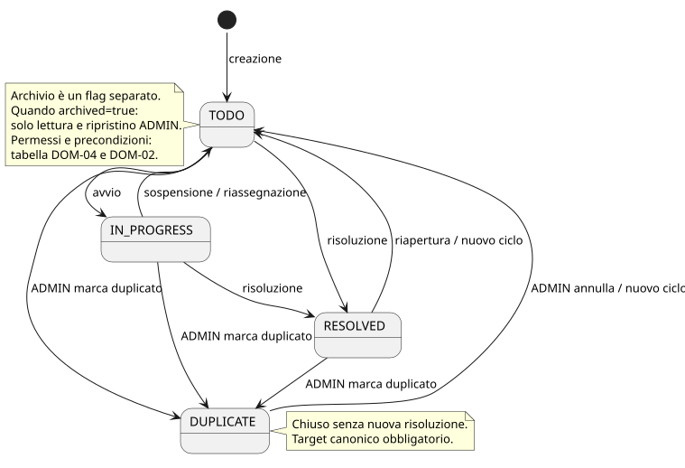
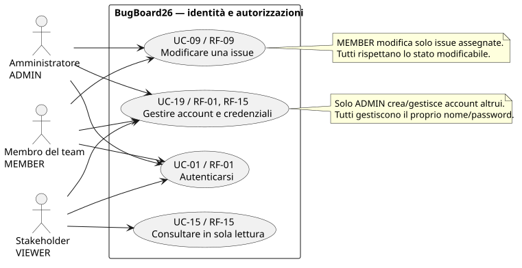
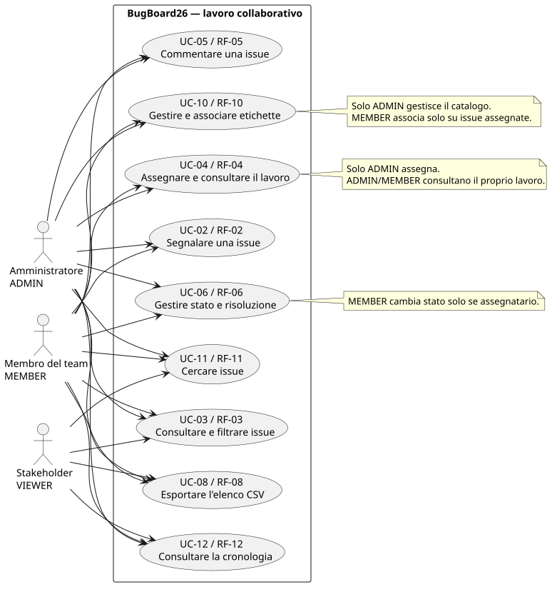
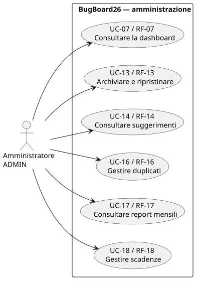
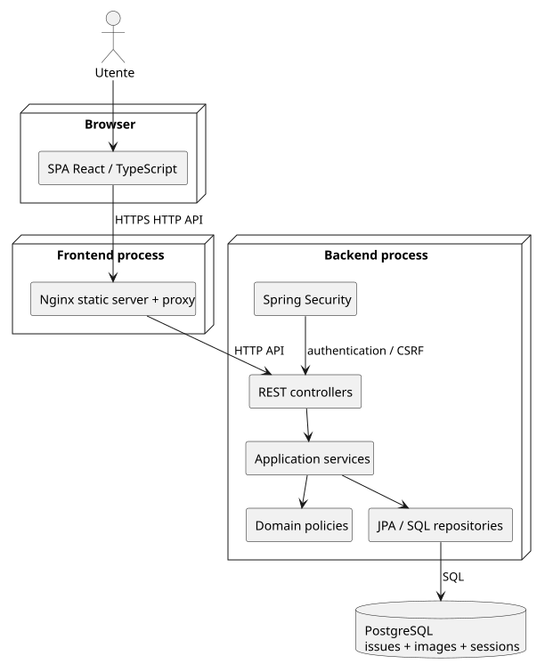
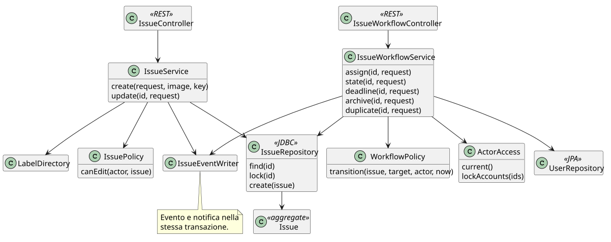
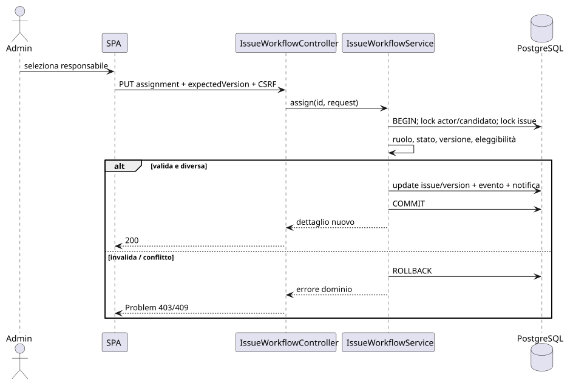
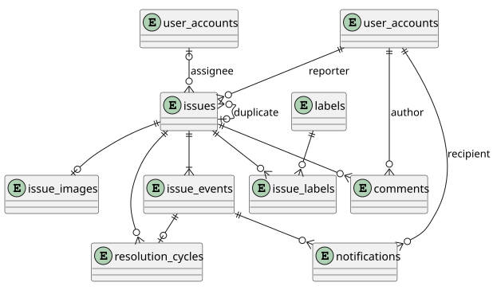

Documentazione tecnica unitaria: requisiti, progettazione e verifica.
Sorgente editabile del documento tecnico. Il generatore pubblica technical-document.html completo, idratando evidenze e schermate reali; la specifica non richiede i Markdown privati.
Fonte: Progetto-SWE-2025-2026.pdf, protocollo UNI-01-2026, revisione 1.0 del 25/09/2025, 18 pagine. SHA-256: 9DDD14DEE27580D8C17BAC35E9B2888C8AE8F5DDDEDB5D7411A39DC5C0188B76.
L'allegato è la fonte dei requisiti del prodotto; sono escluse le indicazioni su consegna universitaria, composizione dei gruppi e scelta delle funzionalità opzionali. Requisiti, scelte tecniche e criteri di accettazione sono stati documentati prima dell’implementazione. Le evidenze finali riportano separatamente i risultati effettivi e i limiti delle prove.
| Parte della fonte | Trattamento |
|---|---|
| §2, p. 5 | Conservati analisi, design, sorgenti, test automatici e valutazione usabilità |
| §3.1, pp. 6–7 | Tutte le 18 funzionalità, comprese immagini, priorità e suggerimenti descritti come graditi |
| §3.2, pp. 7–8 | Conservati frontend/backend indipendenti, API di rete, persistenza centrale, OO, UML/CASE, design riutilizzabile e indipendenza da MBaaS |
| Docker e accesso Internet, p. 8 | Docker incluso; distribuzione pubblica opzionale, nessun hosting acquistato né pubblicazione prevista in questa fase |
| §8, p. 13 | Conservati contenuti degli output tecnici, almeno 3 casi significativi e almeno 4 metodi testati; esclusa la riduzione legata alla modalità d'esame |
| §8, ultimo paragrafo | Output finale tecnico unitario con capitoli requisiti/design/test; i .md sono le fonti modulari assemblabili |
| §§1, 4–7, 9–11 | Nessun vincolo operativo derivato: matricole, gruppi, subset, calendario, invio, nomi di consegna, antiplagio, esame e presentazione esclusi |
Una installazione rappresenta un progetto e un team. Tutti gli account appartengono a quel team. Non sono previsti tenant, gestione di più progetti o visibilità privata di singole issue. Gli utenti esterni ammessi leggono tutti i dati del progetto: l'amministratore deve valutarne l'accesso quando crea l'account.
Le funzioni citate come funzioni dei “bug” valgono per tutte le issue; BUG resta uno dei quattro tipi. Ciò evita di lasciare question, documentation e feature senza workflow, commenti o cronologia.
L'interfaccia è in italiano; codice, nomi dei campi, enum e commenti sono in inglese. Date visualizzate in Europe/Rome; istanti persistenti in UTC. Password non tradotte, nessuna interpretazione dei contenuti delle issue come HTML o istruzioni.
Registrazione pubblica, verifica email, recupero password via email, SMTP/SMS/push, SSO, app native, funzionamento offline, sincronizzazione tra installazioni, multi-tenancy, integrazione GitHub/Jira, AI generativa, allegati diversi da PNG/JPEG, chat in tempo reale, cancellazione fisica delle issue, editor rich text e Markdown nei contenuti degli utenti. La gestione credenziali è interna tramite amministratore; notifiche persistenti nell'app. Un CSV soddisfa il requisito di formato condivisibile; XLSX e PDF dell'elenco non sono necessari.
Personas sintetiche di progettazione, non risultati di ricerca:
| Persona | Ruolo, obiettivo | Contesto | Bisogno verificabile |
|---|---|---|---|
| Marta, responsabile tecnico | ADMIN: smistare e monitorare | Desktop, team di 15 persone, molte segnalazioni | Assegnare in ≤3 azioni dal dettaglio quando il candidato è già visibile; ricerca/paginazione sono azioni aggiuntive. Vedere carico/motivo del suggerimento |
| Luca, sviluppatore | MEMBER: gestire il lavoro assegnato | Laptop, uso quotidiano, tastiera | Aprire “Assegnate a me”, aggiornare stato, commentare senza perdere il testo |
| Giulia, QA | MEMBER: segnalare e controllare esiti | Desktop e telefono | Creare issue con screenshot e vedere la notifica di risoluzione |
| Paolo, stakeholder | VIEWER: verificare avanzamento | Browser, uso saltuario | Leggere liste, dettagli e commenti, senza comandi di modifica |
| Termine | Significato vincolante |
|---|---|
| Issue | Segnalazione con titolo, descrizione, tipo e stato |
| Bug | Issue con tipo BUG |
| Reporter | Account autore della segnalazione, immutabile |
| Assignee | Unico responsabile corrente, ADMIN o MEMBER attivo |
| ADMIN | Amministratore, autorizzato a tutte le azioni applicative valide |
| MEMBER | Utente normale, crea/commenta e modifica le issue assegnate |
| VIEWER | Account esterno in sola lettura dei dati del progetto |
| Aperta | Issue in TODO o IN_PROGRESS |
| Risolta | Issue in RESOLVED, con evento di risoluzione |
| Duplicata | Issue chiusa in DUPLICATE collegata a una issue canonica |
| Archiviata | Issue esclusa dalle liste principali; flag indipendente dallo stato |
| Cronologia | Eventi append-only che descrivono chi, quando e cosa è cambiato |
| Ciclo di risoluzione | Intervallo tra creazione/riapertura e successiva risoluzione |
| CASE | Strumento per modellare e renderizzare il design: PlantUML locale |
| DTO | Oggetto del contratto API, separato dalle entità persistenti |
| Baseline | Insieme coerente di specifiche da eseguire durante lo sviluppo |
| ID | Output finale | Specifica/artefatto pianificato | Verifica |
|---|---|---|---|
| OUT-01 | Specifica requisiti e glossario | Documenti 00–02 | RF completi, regole identificabili, criteri misurabili |
| OUT-02 | Casi d'uso UML, personas | 00, 03; SVG UML in public-artifacts/uml/ |
Tutti i casi mappati agli attori e a RF |
| OUT-03 | Casi strutturati e mockup | 03–04; almeno creazione, assegnazione, risoluzione | Scenari principali/alternativi e schermate coerenti |
| OUT-04 | Design sistema | 05, 14 | Componenti indipendenti, motivazioni e diagrammi |
| OUT-05 | Design software/dati | 05–07 | Classi, schema, transazioni e contratti completi |
| OUT-06 | Evidenza versioning | 11–12; output/reports/versioning/{commits.csv,summary.json} |
Statistiche ricavate dal Git reale, senza inventare commit |
| OUT-07 | Qualità backend | 10; report PMD, SpotBugs e JaCoCo | Analisi automatica ripetibile e gate superati |
| OUT-08 | Sorgenti, build, deployment | Backend/frontend, wrapper, Docker/Compose | Clean build e avvio da clone pulito |
| OUT-09 | Piano test di sistema | 10 | Piano approfondito assegnazione con esiti negativi |
| OUT-10 | Test xUnit e strategie | 10; almeno 4 metodi con ≥2 parametri | JUnit, equivalenze, limiti, rami e concorrenza |
| OUT-11 | Collaudo UI e ispezione | 04, 10; output/reports/usability.json e documento tecnico |
Su richiesta dell'utente, prove browser e ispezione senza persone reali; screenshot e risultati tecnici, nessuna survey umana inventata |
| OUT-12 | Documento tecnico unitario | output/documentation/BugBoard26-documentazione.pdf |
Assemblare 00–15 con capitoli requisiti/design/test, diagrammi leggibili, link e sommario |
Questo documento conserva i criteri tecnici del prodotto. Gli esiti dell’implementazione sono riportati nel capitolo Evidenze, separati dai risultati attesi.
Ogni requisito è incluso nella prima release pianificata. T-01 … T-18 sono famiglie di prove descritte in 10. Le regole precise sono in 02; i limiti qui definiti sono criteri di accettazione, non misure già ottenute.
| ID / fonte | Comportamento richiesto | Accettazione ripetibile |
|---|---|---|
| RF-01 / §3.1.1 | Login email/password; bootstrap ADMIN; creazione account ADMIN/MEMBER/VIEWER; logout e cambio password | T-01: DB vuoto crea un solo admin; credenziali errate non autenticano; cambio obbligatorio blocca il prodotto; solo admin crea account; riavvio non resetta |
| RF-02 / §3.1.2 | Creazione issue con titolo, descrizione, tipo, priorità opzionale e immagine opzionale; TODO iniziale | T-02: tutti e quattro i tipi, priorità default MEDIUM, reporter server; invalido non produce issue o immagine; VIEWER=403 |
| RF-03 / §3.1.3 | Elenco paginato, combinazione filtri e ordinamento | T-03: totale corretto, default esclude archivio; ordine e parità deterministici, filtri AND/OR secondo DOM-12 |
| RF-04 / §3.1.4 | ADMIN assegna una issue; destinatario notificato; vista assegnate a me | T-04: assegnazione valida, notifica unica e privata, MEMBER non assegna; riassegnazione aggiorna entrambe le viste |
| RF-05 / §3.1.5 | Discussione con commenti append-only | T-05: ADMIN/MEMBER commentano anche issue altrui; VIEWER, archivio e duplicati rifiutati; testo/attore/data conservati |
| RF-06 / §3.1.6 | Assegnatario cambia stato; risoluzione notifica reporter | T-06: transizioni DOM-04, evento/ciclo/notifica atomici; retry non duplica; riapertura genera ciclo distinto |
| RF-07 / §3.1.7 | Dashboard ADMIN: aperte, assegnate, medie, scadute, tipi/priorità | T-07: risultati identici al dataset numerico di 08; MEMBER/VIEWER=403; empty mean=null |
| RF-08 / §3.1.8 | Esportazione CSV del risultato filtrato e ordinato | T-08: stessi ID/ordine della lista completa, escaping e formule sicure, UTF-8 BOM, limitazioni esplicite |
| RF-09 / §3.1.9 | MEMBER modifica solo issue assegnate; ADMIN tutte le azioni valide | T-09: matrice DOM-02 via API diretta; reporter non assegnatario=403; nessuna scrittura su rifiuto |
| RF-10 / §3.1.10 | Catalogo etichette personalizzabili e associazione variabile | T-10: 0/1/20 etichette, 21 rifiutate, normalizzazione/unicità, disattivate conservate ma non associabili |
| RF-11 / §3.1.11 | Ricerca per parole chiave in titolo/descrizione | T-11: substring letterale case-insensitive, accenti distinti, %, _, query vuota e combinazione filtri |
| RF-12 / §3.1.12 | Cronologia creazione e cambiamenti con autore e data | T-12: eventi di ogni comando reale; prima/dopo; no-op e rollback senza eventi; nessuna API di alterazione |
| RF-13 / §3.1.13 | ADMIN archivia/ripristina; archivio leggibile dedicato | T-13: principale esclude, archivio include, mutazioni bloccate, ripristino assegnatario non eleggibile secondo DOM-08 |
| RF-14 / §3.1.14 | Suggerimento responsabile per carico corrente | T-14: ordinamento ripetibile con pareggi, esclusione issue corrente/VIEWER/inattivi, nessuna autoassegnazione |
| RF-15 / §3.1.15 | Utenze esterne in sola lettura create da ADMIN | T-15: letture consentite, tutte scritture di progetto vietate; UI senza comandi di mutazione; download/CSV autenticati |
| RF-16 / §3.1.16 | ADMIN contrassegna duplicati e chiude subito | T-16: DUPLICATE e target atomici, no self/cicli/catene, target raggiungibile; annullamento riparte TODO |
| RF-17 / §3.1.17 | Report ADMIN mensile aggregato e per utente | T-17: mese Europe/Rome, eventi storici immutabili, formula campioni di 08, esclusione cicli incompleti |
| RF-18 / §3.1.18 | ADMIN imposta scadenza opzionale | T-18: oggi/futuro/null accettati, passato rifiutato, scaduta dal giorno seguente, readonly=403 |
| ID | Vincolo | Prova |
|---|---|---|
| ARC-01 | Backend autonomo espone HTTP REST e non importa frontend | Avviare solo backend+DB, eseguire login e CRUD via client HTTP |
| ARC-02 | Frontend eseguibile separatamente e usa soltanto API | Build statica senza backend; configurazione URL; nessuna connessione DB, regola import verificata |
| ARC-03 | Stato persistente centrale nel backend | Riavviare servizi e aprire secondo browser; dati concordi, nessun dato applicativo in localStorage/IndexedDB |
| ARC-04 | Linguaggi OO, logica propria, riuso esplicito | Java per dominio/servizi, TypeScript per frontend/client; architettura 05, nessun MBaaS |
| ARC-05 | UML tramite CASE, sorgenti riproducibili | Renderizzare i modelli editabili public-artifacts/uml/*.puml in locale; nessun diagramma privo di fonte |
Ambiente della misura NFR-01/02/03: 4 CPU logiche, 8 GiB RAM disponibili, DB PostgreSQL locale, backend JVM heap 1 GiB, frontend build produzione, rete LAN con RTT ≤10 ms, 10.000 issue di cui 8.000 non archiviate, 100 account, 50.000 commenti, 100.000 eventi, 30.000 notifiche; immagini 100×100 KB. Seed deterministico 2606; nessun dato reale. Composizione valida: 10.000 creazioni + 50.000 commenti + 21.000 assegnazioni effettive + 9.000 risoluzioni + 8.000 riaperture + 2.000 archiviazioni = 100.000 eventi; notifiche = 21.000 assegnazioni + 9.000 risoluzioni. Fixture dettagliata in 10. Report conserva OS/hardware/runtime, conteggi e comando. Soglie non applicate a Internet non controllata.
| ID | Criterio | Metodo e soglia |
|---|---|---|
| NFR-01 | API reattive | 20 utenti virtuali, warm-up 30 s, misura 120 s; letture lista/ricerca/dettaglio p95 ≤500 ms, p99 ≤1000 ms; zero 5xx; scritture p95 ≤800 ms escluse immagini/password |
| NFR-02 | Aggregazioni/export sostenibili | Dashboard/report p95 ≤1000 ms su 30 richieste sequenziali; CSV 10.000 righe ≤5 s e heap aggiuntivo ≤128 MiB, misurato JFR/heap |
| NFR-03 | UI tempestiva | Chromium desktop locale, cache fredda, 5 run: prima lista utilizzabile ≤2.5 s mediana; bundle JS iniziale ≤350 KiB gzip; nessun errore console durante i flussi critici |
| NFR-04 | Integrità | Test rollback/concorrenza: nessun update perso, audit/notifiche/cicli atomici; DB disconnesso produce errore controllato, mai falso successo |
| NFR-05 | Sicurezza | Matrice ruoli, CSRF, fixation, revoca, XSS testo, SQL injection, file invalidi e CSV formula: tutte prove negative superate; produzione TLS/default vietati |
| NFR-06 | Accessibilità | Checklist e axe: zero serious/critical; flussi critici via tastiera, focus visibile, contrasto testo ≥4.5:1, target ≥44×44 px; zoom 200% e 360 px senza perdita funzioni |
| NFR-07 | Compatibilità | Chromium e Firefox Playwright bloccati nel lockfile; viewport 360×800, 768×1024, 1440×900; nessuna sovrapposizione/troncamento di comandi |
| NFR-08 | Affidabilità e persistenza | Riavvio backend/DB preserva dati; sessioni JDBC sopravvivono entro timeout; ready=false senza DB; retry idempotente create/commenti |
| NFR-09 | Ripristino | Backup/restore su DB vuoto e confronto conteggi/hash immagini; target giornaliero RPO ≤24 h, restore dataset NFR ≤15 min misurato |
| NFR-10 | Manutenibilità | Build/test/lint/analisi da clone pulito; dipendenze esatte/lockfile, migration; zero finding PMD/SpotBugs non giustificati |
| NFR-11 | Osservabilità | Correlation ID e log JSON senza password/testi/bytes/sessioni; health pubblico minimo, dettagli solo amministrazione operativa |
| NFR-12 | Collaudo UI e ispezione | Su richiesta dell'utente del 6 ottobre, senza persone reali: tutti i task U-01…05 superati nel browser, checklist UI04 e accessibilità/tastiera/responsive verificate; zero difetti bloccanti o maggiori. Report con screenshot e risultati tecnici, senza survey o risultati umani inventati |
NFR-12 prova correttezza tecnica dei flussi e criteri UI osservabili; non misura comprensione, soddisfazione o usabilità con utenti. L'estetica è sottoposta a ispezione e non è oggettivamente “premium”. Nessun SLA di disponibilità senza infrastruttura operativa e misure nel tempo.
Fonte primaria per comportamento, permessi e validazioni. Gli identificatori DOM-* sono usati nella tracciabilità.
Convenzione comune: i testi applicativi vengono normalizzati Unicode NFC prima del trim e della validazione; le lunghezze sono contate in code point Unicode (Java codePointCount, frontend Array.from(value).length, PostgreSQL char_length). Password esclusa dalla normalizzazione e dal trim: confrontare i caratteri originali, applicando anche il limite in byte UTF-8. Email ASCII lowercase. Testo non stampabile rifiutato, salvo tab/newline in descrizioni e commenti; titolo e nomi monoriga. Ricerca normalizzata NFC come i contenuti, accenti distinti.
Ruoli esclusivi ADMIN, MEMBER, VIEWER. Stato active e mustChangePassword. UUID generato dal server; email trim e lowercase, formato valido ASCII, massimo 254 caratteri; unicità dopo normalizzazione. Display name 2–80 caratteri dopo trim. Password 12–128 caratteri Unicode, non trim, massimo 512 byte UTF-8, diversa da quella corrente quando cambiata; nessuna regola arbitraria di composizione.
Primo avvio crea un ADMIN solo se il database non ha utenti. Ambiente demo con email admin@bugboard.local e password BugBoard26-ChangeMe!; cambio obbligatorio al primo accesso. Produzione richiede email e password da configurazione privata, rifiuta i default demo. Reavviare non ricrea l'account né ripristina la password. L'admin crea tutti gli altri account, con password temporanea e cambio obbligatorio. Prima del cambio si accede soltanto a me, CSRF, cambio password e logout.
Un ADMIN può cambiare nome, ruolo e stato e impostare una nuova password temporanea per altri utenti. Non può disattivare/declassare l'ultimo ADMIN attivo. Per il proprio account può cambiare nome e password; può cambiare ruolo/stato solo se resta un altro ADMIN attivo. Qualsiasi cambio di ruolo, reset o disattivazione invalida tutte le sessioni del soggetto. Disattivare o rendere VIEWER un utente con issue aperte non archiviate assegnate restituisce conflitto: prima riassegnarle. Assegnazioni storiche chiuse/archiviate restano visibili. Nessuna cancellazione fisica di utenti.
Reset password può essere necessario proprio quando un utente ha lavoro aperto: mantiene le assegnazioni esistenti, ma esclude temporaneamente l'account da nuove assegnazioni/suggerimenti finché cambia password. Non permette progressione a IN_PROGRESS/RESOLVED con responsabile non eleggibile. Dopo il cambio l'account riprende il lavoro; l'ADMIN può comunque riassegnarlo. È l'unica eccezione temporanea alla disponibilità dell'assegnatario corrente, distinta dal divieto di disattivazione/demozione con lavoro aperto.
Modifica profilo/account e catalogo etichette con valori identici è un no-op: richiede comunque versione corrente, non aumenta version/authVersion, non cambia timestamp né produce audit. Password nuova uguale alla corrente → 400 VALIDATION_ERROR; password corrente errata al cambio → 400 VALIDATION_ERROR con campo currentPassword, senza logout della sessione valida. Reset temporaneo del proprio account tramite endpoint ADMIN → 403 FORBIDDEN: usare cambio con password corrente.
Autorizzazione sempre nel backend, anche con richieste dirette. Tutti gli account attivi che hanno cambiato la password possono leggere tutte le issue, anche archiviate, allegati, commenti e cronologia. Solo ADMIN vede email degli altri utenti e report/dashboard; i riferimenti pubblici degli utenti contengono UUID, nome, ruolo e stato attivo.
| Azione | ADMIN | MEMBER | VIEWER |
|---|---|---|---|
| Leggere elenco/dettaglio/archivio e cercare | Sì | Sì | Sì |
| Esportare dati già leggibili in CSV | Sì | Sì | Sì |
| Creare issue | Sì | Sì | No |
| Aggiungere commenti non archiviati/non duplicati | Sì | Sì, anche se non assegnatario | No |
| Modificare titolo, descrizione, tipo, priorità, immagine, etichette | Sì, se non archiviata/non duplicata | Solo assegnatario corrente, non archiviata/non duplicata | No |
| Cambiare stato ordinario | Sì | Solo assegnatario corrente | No |
| Assegnare, togliere assegnazione, impostare scadenza | Sì | No | No |
| Duplicare o annullare duplicazione | Sì | No | No |
| Archiviare/ripristinare | Sì | No | No |
| Creare/rinominare/disattivare etichette globali | Sì | No | No |
| Associare etichette attive a issue modificabile | Sì | Solo assegnatario corrente | No |
| Creare/gestire utenze, dashboard/report/suggerimenti | Sì | No | No |
| Cambiare propria password/nome e leggere proprie notifiche | Sì | Sì | Sì |
Autore e assegnatario sono distinti: essere reporter non permette modifiche. L'admin non aggira invarianti, stati o vincoli di integrità. “Accesso completo” significa tutte le azioni valide, non modifica indiscriminata delle righe del DB. VIEWER prevale sul generico “tutti gli utenti” della traccia.
Titolo trim 3–160 caratteri; descrizione trim 10–10000; testo semplice, Unicode. Tipo obbligatorio: QUESTION, BUG, DOCUMENTATION, FEATURE; UI propone BUG e lo invia esplicitamente. Priorità LOW, MEDIUM, HIGH, CRITICAL; default MEDIUM. Stato iniziale TODO; reporter=current user, nessun assegnatario, nessuna scadenza o duplicato, archived=false, version=0. Server genera ID UUID e numero leggibile monotono BB-<numero>; eventuali buchi di sequenza sono ammessi.
Creazione permette etichette attive e una immagine opzionale. Stato/assegnatario/scadenza/reporter inviati in create sono campi sconosciuti e vengono rifiutati. L'admin assegna e imposta scadenza con operazioni separate dopo la creazione.
| Da | A | Condizioni ed effetti |
|---|---|---|
| TODO | IN_PROGRESS | Deve esistere un assegnatario attivo ADMIN/MEMBER |
| TODO o IN_PROGRESS | RESOLVED | Assegnatario attivo richiesto; registra ciclo di risoluzione e notifica reporter |
| IN_PROGRESS | TODO | Mantiene assegnazione e ciclo corrente |
| RESOLVED | TODO | Riapre, azzera resolvedAt, nuovo ciclo da ora; conserva cicli precedenti. Conserva assignee solo se ancora eleggibile, altrimenti null, unico evento con tutti i delta |
| TODO, IN_PROGRESS, RESOLVED | DUPLICATE | Solo comando duplicato ADMIN; collega target, nessuna risoluzione né notifica di risoluzione |
| DUPLICATE | TODO | Solo annullamento duplicato ADMIN, rimuove target e avvia nuovo ciclo |
Da RESOLVED a IN_PROGRESS non è ammesso: prima riaprire. Assegnazione a un'altra persona di issue IN_PROGRESS la riporta a TODO, senza riavviare il ciclo. Togliere l'assegnazione da IN_PROGRESS riporta a TODO. RESOLVED mantiene l'assegnatario; non si può riassegnare senza riaprire. DUPLICATE conserva l'assegnazione come riferimento storico.
Risoluzione memorizza resolvedAt, resolvedBy e creditedAssigneeId corrente: la metrica per utente attribuisce il lavoro all'assegnatario, non all'ADMIN che clicca. Un ciclo incompleto annullato da duplicazione non entra nella media. Un comando che imposta lo stesso stato non modifica nulla e non duplica eventi/notifiche; la versione deve comunque essere corrente. Una riapertura permette una nuova futura notifica di risoluzione.
Un solo assegnatario o null, selezionato fra ADMIN/MEMBER attivi che hanno completato il cambio password. Solo ADMIN, solo issue aperte non archiviate. Stessa assegnazione = operazione senza effetti; modifica reale = audit ed eventuale notifica al nuovo assegnatario. Rimuovere l'assegnazione non notifica. Un'autoassegnazione ADMIN genera ugualmente una notifica, così il comportamento è uniforme.
Suggerimento deterministico: numero di issue aperte non archiviate per candidato, escluse la issue oggetto del suggerimento; ordine crescente carico, poi email normalizzata, poi UUID. Tutti i tipi contano uno, senza pesi per priorità o stime inesistenti. Restituisce elenco ordinato e spiegazione numerica; nessun candidato → elenco vuoto. Il suggerimento non assegna; il carico è ricalcolato alla lettura e può cambiare prima della conferma.
Commento trim 1–5000 caratteri; immutabile, autore e timestamp dal server. Nessuna modifica/cancellazione; così audit e discussione sono affidabili. Non si commentano issue archiviate o duplicate; nelle duplicate UI propone il link alla canonica. Commenti su RESOLVED consentiti. Inserimento commento non incrementa issue.version, ma inserisce evento e aggiorna lastActivityAt in transazione. updatedAt riguarda i campi dell'issue, lastActivityAt anche commenti.
Una sola immagine per issue, PNG o JPEG, massimo 5 MiB di input, lato massimo 4096 pixel, massimo 16 milioni di pixel; validazione decode prima di persistere. Input oltre 5 MiB → 413; formato/dimensioni invalidi → 400. Ricodifica server nello stesso formato, senza metadata; output oltre 5 MiB → 400 INVALID_IMAGE. Nome originale solo per UI, sanificato e massimo 120 caratteri, nessun percorso. Bytes ricodificati in PostgreSQL; richiesta immagine autenticata. Creazione con immagine è atomica: immagine invalida → nessuna issue. Sostituzione/rimozione rispetta permessi e versione e genera audit.
Catalogo globale ADMIN. Nome trim 1–32 caratteri Unicode, unicità su valore Unicode normalizzato NFC e lowercase con locale root; colore dalla palette chiusa gray, blue, green, amber, red, purple. Ogni issue ha 0–20 etichette distinte: il limite tecnico esplicita il numero variabile richiesto. Disattivazione non elimina associazioni esistenti; impedisce nuove associazioni. Rinomina/cambio colore produce audit di catalogo; la cronologia della issue conserva nome/colore del momento. L'admin non cancella fisicamente etichette referenziate. Duplicate label IDs nel payload → 400, non deduplicazione silenziosa.
Solo ADMIN, qualsiasi stato. Flag archived, autore/data separati dallo stato; archiviare non chiude né risolve. In archivio dettaglio in sola lettura per tutti; solo ripristino consentito. Ripristinare preserva stato e assegnazione; se l'issue aperta aveva un assegnatario ora non eleggibile (inattivo, VIEWER o mustChangePassword), il ripristino elimina l'assegnazione e forza TODO, registrando un solo evento con tutti i cambiamenti. L'archivio è sempre escluso da liste principali, carico corrente e dashboard corrente, ma incluso nei report storici. Comando con flag già uguale è senza effetti.
Target: altra issue esistente, non archiviata, non DUPLICATE, di qualunque tipo o stato ordinario. Vietati autoreferenza e catene; una issue con duplicati che la puntano non può essere resa duplicata finché tali riferimenti non sono annullati. Target può essere successivamente archiviato e resta raggiungibile dal link storico. Contrassegno chiude immediatamente, duplicateOfId obbligatorio, resolvedAt=null; un'eventuale risoluzione passata resta nella storia dei cicli. Annullamento riparte da TODO, ciclo da ora; mantiene assegnatario solo se ancora eleggibile, altrimenti null. La coppia source/target è bloccata in ordine UUID per evitare cicli nelle richieste concorrenti.
ADMIN su issue aperte non archiviate. Campo dueDate ISO date, null elimina; consentite date da oggi in Europe/Rome fino al 31/12/2100. Data passata rifiutata al salvataggio; una scadenza può naturalmente diventare passata nel tempo. Scaduta se aperta, non archiviata e dueDate < oggi; il giorno di scadenza resta disponibile per intero. Nessun scheduler né notifica di scadenza. Chiusura mantiene data per storia; scadenza passata non impedisce risoluzione/riapertura, una nuova modifica a dueDate richiede una data valida.
Ogni creazione/modifica effettiva e commento produce evento append-only con attore, istante UTC, tipo, versione eventuale e campi prima/dopo; nessuna password, byte immagine o sessione nel payload. Modifiche multiple di uno stesso comando producono un evento. Timestamp applicativo da Clock, condiviso dentro la transazione. Notifiche ASSIGNED e RESOLVED create nella stessa transazione della modifica; visibili solo al destinatario, con issue/evento e readAt opzionale. Marcare letta una propria notifica è idempotente e non altera la issue. Nessuna notifica email.
Update della issue richiede expectedVersion; incremento una volta per modifica effettiva di campi/immagine. Versione obsoleta → 409 senza scritture, eventi o notifiche. Operazioni autorizzate controllano ruolo e assegnatario dopo aver bloccato la issue nella transazione. Nessun aggiornamento perso e nessuna verifica dei permessi affidata al frontend. Comandi create/commento hanno Idempotency-Key per evitare duplicazione sui retry.
Ricerca in titolo e descrizione, substring letterale case-insensitive dopo trim, da 1 a 100 caratteri; % e _ non sono wildcard. Stringa vuota equivale ad assenza di filtro. Nessuna ricerca nei commenti. Filtri AND fra categorie; OR nei valori di tipo/stato/priorità/etichette. Etichette = almeno una selezionata. assignedTo=me|unassigned|UUID, reporter UUID, overdue=true|false, archived=false|true|all. Default non archiviate. UI principale/archivio fissano il filtro relativo.
Pagina zero-based, default 20, massimo 100; pagina oltre fine = vuota con totale corretto. Sort singolo campo createdAt, updatedAt, lastActivityAt, priority, dueDate, title, number; default createdAt,desc; UUID finale asc risolve parità. Priorità LOW<MEDIUM<HIGH<CRITICAL; date null sempre in fondo; titolo usa la colonna normalizzata title_search, ordinamento PostgreSQL collation C. title_search/description_search e query sono NFC+lowercase Java Locale.ROOT (poi NFC), così il locale DB non cambia la ricerca Unicode. Ricerca e CSV usano lo stesso oggetto filtro/ordine.

Fonte primaria per scenari e obiettivi degli utenti. Le regole di 02 - Dominio prevalgono sui riepiloghi dei flussi; le schermate sono definite in 04 - Interfaccia. Ogni caso UC-01 … UC-18 copre il requisito con lo stesso numero RF-01 … RF-18. UC-19 completa la gestione del ciclo di vita degli account prevista da RF-01/RF-15.
La specifica deriva dalle funzioni delle pp. 6–7 della traccia e formalizza tutti i tipi di issue, come deciso nel perimetro. La descrizione tabellare dei tre casi principali segue i campi di Cockburn: obiettivo, ambito, livello, attori/interessi, condizioni, garanzie, trigger, scenario, estensioni e verifica. Le prove indicate sono criteri futuri ripetibili, non risultati già ottenuti. Personas in 00 - Perimetro.
Questi tre diagrammi UML Use Case in sorgente PlantUML modellano lo stesso sistema e suddividono i19 casi in gruppi leggibili per lo strumento CASE locale. I collegamenti indicano partecipazione autorizzata; condizioni di stato e assegnazione sono espresse negli scenari. Ogni ellisse è un obiettivo utente, non un endpoint API. I sottoscenari di notifiche appartengono a UC-04/UC-06, quelli di creazione/gestione account e credenziali a UC-19. La presenza di un ruolo accanto ad “Autenticarsi” non gli permette di creare account.
| Campo | Specifica |
|---|---|
| Obiettivo, ambito e livello | Registrare un problema/richiesta comprensibile, eventualmente con immagine. Sistema BugBoard26; obiettivo utente. |
| Attore primario | ADMIN o MEMBER autenticato. |
| Stakeholder e interessi | Reporter: dati conservati e identificativo; team: titolo/tipo utilizzabili; amministratore: nuova issue pronta allo smistamento; azienda: immagine valida e accessibile solo agli account autorizzati. |
| Prerequisiti | Account autorizzato alla creazione; catalogo etichette ottenuto. Nessun obbligo di assegnazione preventiva. |
| Trigger | L'attore seleziona “Nuova issue” dall'elenco. |
| Garanzia minima | Errore o annullamento non crea issue/allegato/eventi. Bozza conservata nella memoria della pagina fino ad annullamento esplicito, salvataggio o uscita. |
| Garanzia di successo | Issue con numero BB-*, reporter corrente, TODO, priorità scelta/default, versione 0; eventuali etichette e immagine valide; evento di creazione. Nessun assegnatario/scadenza e nessuna notifica di assegnazione. |
| Scenario principale | 1. Il sistema mostra il form con BUG e Media proposti. 2. L'attore inserisce titolo e descrizione. 3. Sceglie tipo, priorità, eventuali etichette e immagine. 4. Seleziona “Crea issue”. 5. La UI verifica formato/lunghezze, invia campi e chiave di idempotenza; il server verifica permessi, catalogo e immagine. 6. Il server salva issue, allegato ed evento in una transazione. 7. La UI apre il dettaglio e annuncia “Issue BB-n creata”. |
| Estensioni | 2a. Titolo/descrizione fuori limiti DOM-03: riepilogo errori, focus al riepilogo, link ai campi; nessun invio o nessuna scrittura se respinta dal server. 3a. Immagine oltre limiti/di altro formato/non decodificabile: errore allegato, nessuna issue creata. 3b. Etichetta disattivata dopo lettura: server rifiuta; UI aggiorna opzioni, conserva testo e mostra etichetta non più disponibile. 4a. Annullamento con bozza modificata: conferma “Scartare la bozza?”; conferma torna alla lista. 5a. Sessione scaduta: login; bozza resta solo nella memoria del tab, senza password/token e senza storage persistente. 5b. Timeout dopo invio: “Esito non confermato”; retry identico con stessa chiave recupera il risultato e non crea una seconda issue. 5c. VIEWER tramite URL/API diretta: accesso negato e nessun dato creato. |
| Dati/varianti | Tipi, priorità, lunghezze, file e 0–20 etichette da DOM-03/06/07; testo semplice. Immagine opzionale unica, creazione atomica. |
| Frequenza e relazioni | Uso quotidiano; elenco UC-03 → creazione → dettaglio. Assegnazione successiva separata UC-04; metadati modificabili UC-09. |
| Criterio ripetibile | Con MEMBER attivo inserire titolo “Errore salvataggio”, descrizione ≥10 caratteri, BUG, HIGH, due etichette e PNG valido. Verificare dettaglio, DB/API e un evento; nessun assegnatario. Ripetere invio con stessa chiave: stesso UUID e numero. Provare titolo di 2/161 caratteri, file invalido e VIEWER: zero nuove righe. |
| Campo | Specifica |
|---|---|
| Obiettivo, ambito e livello | Attribuire responsabilità a una persona e renderle visibile il lavoro. Sistema BugBoard26; obiettivo utente. |
| Attore primario/secondario | ADMIN assegna; nuovo assegnatario ADMIN/MEMBER riceve notifica e consulta. |
| Stakeholder e interessi | Admin: assegnazione controllata; responsabile: sapere cosa gestire; team: nessuna sovrascrittura, carico comprensibile. |
| Prerequisiti | ADMIN autenticato, issue aperta e non archiviata; candidato ADMIN/MEMBER attivo con cambio password completato. |
| Trigger | Dal dettaglio l'admin seleziona “Assegna” o “Riassegna”. |
| Garanzia minima | Comando fallito non cambia assegnatario/stato/versione, cronologia o notifiche. Bozza selezione resta disponibile nel dialog. |
| Garanzia di successo | Unico assegnatario selezionato; una modifica effettiva produce un evento, versione +1 e notifica ASSIGNED al nuovo assegnatario. IN_PROGRESS passa a TODO se cambia assegnatario; ciclo di risoluzione corrente conservato. |
| Scenario principale | 1. Sistema apre dialog con assegnatario corrente e candidati eleggibili. 2. Admin seleziona candidato, eventualmente consultando carichi UC-14. 3. UI mostra eventuale effetto “Lo stato tornerà Da fare”. 4. Admin conferma con “Assegna”. 5. Server blocca issue, verifica ruolo, stato, candidato e versione; salva assegnazione, eventuale stato, evento e notifica. 6. UI chiude dialog e aggiorna dettaglio. 7. Il destinatario apre Notifiche o “Assegnate a me”, poi il dettaglio. |
| Estensioni | 1a. Nessun candidato: spiegazione e link ADMIN alla gestione utenti; conferma indisponibile, nessuna assegnazione automatica. 2a. “Nessuno”: conferma rimozione; IN_PROGRESS → TODO, evento/versione ma nessuna notifica. 4a. Stesso candidato e versione corrente: nessun nuovo evento/versione/notifica, UI annuncia “Assegnazione già presente”. 5a. Candidato diventa inattivo/VIEWER o ancora con password temporanea: conflitto, elenco ricaricato, selezione conservata come non disponibile; nuova scelta necessaria. 5b. Versione obsoleta o issue chiusa/archiviata: nessuna scrittura; UI mostra valori correnti e permette confronto/annullamento. Se ancora ammissibile, serve nuova conferma sulla versione attuale. 5c. MEMBER/VIEWER invia comando diretto: 403; zero effetti. 7a. Notifica già letta: marcare letta resta idempotente. Notifica conservata anche se l'issue viene poi riassegnata/archiviata. |
| Dati/varianti | Un solo UUID assegnatario o null. Elenco candidati separato dal suggerimento; un suggerimento non costituisce assegnazione. Autoassegnazione ADMIN genera la stessa notifica. |
| Frequenza e relazioni | Smistamento giornaliero; UC-14 opzionale. Notifiche personali e filtro assegnate sono sottoscenari. |
| Criterio ripetibile | Dati: issue IN_PROGRESS assegnata a M1, candidati M1/M2. Admin assegna M2: stato TODO, ciclo invariato, versione +1, un evento e una notifica M2. M2 vede BB-n con assignedTo=me; M1 non la vede più con quel filtro. Ripetere stesso comando su versione corrente: nessun duplicato. Rimuovere: null e nessuna notifica. Eseguire due richieste con la stessa versione: una sola modifica riesce, l'altra 409. |
| Campo | Specifica |
|---|---|
| Obiettivo, ambito e livello | Rendere esplicito l'avanzamento e chiudere/riaprire il ciclo di lavoro. Sistema BugBoard26; obiettivo utente. |
| Attore primario/secondario | Assegnatario corrente MEMBER o ADMIN; ADMIN anche se diverso dall'assegnatario. Reporter riceve notifica di risoluzione. |
| Stakeholder e interessi | Reporter: esito conoscibile; assegnatario: lavoro attribuito correttamente; admin: indicatori fedeli ai cicli; team: storia preservata. |
| Prerequisiti | Issue non archiviata/non duplicata; attore autorizzato. Passaggio a IN_PROGRESS/RESOLVED richiede assegnatario attivo eleggibile. |
| Trigger | Attore seleziona “Cambia stato”, poi “Risolta”. |
| Garanzia minima | Nessuna scrittura o notifica se stato/versione/permesso non valido. Nessuna perdita dei cicli precedenti. |
| Garanzia di successo | RESOLVED, istante/attore registrati, ciclo completato attribuito all'assegnatario corrente, un evento e notifica RESOLVED al reporter nella stessa transazione. |
| Scenario principale | 1. UI mostra stato corrente e soltanto le destinazioni ricevute in permissions.allowedStateTargets dal dettaglio server; non ricostruisce l'eleggibilità dall'UserRef. 2. Attore sceglie “Risolta” se presente. 3. Dialog mostra numero issue, assegnatario e destinatario della notifica; commento suggerito tramite area commenti separata, non obbligatorio. 4. Attore conferma “Segna come risolta”. 5. Server verifica ruolo, assegnazione e versione e salva nuovo stato, ciclo, evento e notifica. 6. UI aggiorna dettaglio e opzioni dalla risposta e annuncia la risoluzione. 7. Reporter legge la notifica e segue il collegamento al dettaglio. |
| Estensioni | 2a. TODO → IN_PROGRESS: stessa verifica, nessun ciclo completato/notifica RESOLVED. 2b. IN_PROGRESS → TODO: assegnazione e ciclo mantenuti. 2c. RESOLVED → TODO: dialog “Riapri”; azzera resolvedAt, avvia nuovo ciclo e conserva quelli conclusi. Conserva assegnatario solo se ancora eleggibile (ADMIN/MEMBER attivo con cambio password completato), altrimenti lo rimuove; un solo evento registra tutti i cambiamenti. Nessuna notifica di risoluzione alla riapertura. 2d. RESOLVED → IN_PROGRESS o stato DUPLICATE tramite comando ordinario: respinto; duplicazione usa UC-16. 4a. Stato già identico con versione corrente: nessun evento/notifica/versione nuova. 5a. Issue riassegnata dopo apertura dialog: 409 o 403 secondo contratto server, zero effetti; dati aggiornati, nuova conferma solo se ancora autorizzato. 5b. Assegnatario mancante/inattivo per avvio o risoluzione: rifiuto, ADMIN può assegnare; MEMBER non vede comando utilizzabile. Per riapertura si applica invece 2c. 5c. Reporter = attore: viene comunque creata la notifica personale. 5d. Issue archiviata/duplicata: sola lettura; nessuna risoluzione. |
| Dati/varianti | Nessun testo di risoluzione aggiuntivo obbligatorio. Commenti sono indipendenti e non rendono parzialmente riuscito il comando stato. Scadenza conservata. allowedStateTargets contiene solo destinazioni ordinarie valide, senza stato corrente né DUPLICATE; canChangeState equivale a lista non vuota. Dopo comando, reset account noto, ritorno al dettaglio o focus del tab il dettaglio viene riletto e le opzioni possono cambiare senza rivelare mustChangePassword di altri account. |
| Frequenza e relazioni | Uso quotidiano dopo UC-04; cronologia UC-12 e metriche UC-07/17. |
| Criterio ripetibile | Issue TODO assegnata a M1, reporter M2. M1 avvia e risolve con Clock fissato: un ciclo, creditedAssignee=M1, resolvedBy=M1 e una notifica M2. Admin risolve un'altra issue di M1: creditedAssignee resta M1. Riaprire e risolvere: due cicli e due notifiche totali. Disattivare/rendere VIEWER M1 dopo risoluzione, poi ADMIN riapre: TODO, assignee null, nuovo ciclo, un solo evento e nessuna notifica di risoluzione aggiuntiva. Con issue IN_PROGRESS, reset della password di M1 senza completarne cambio: lettura ADMIN offre TODO ma non RESOLVED; UI rende esattamente allowedStateTargets, UserRef non espone mustChangePassword. Ripetizione su stesso stato e MEMBER M3 non assegnatario non aggiungono cicli/eventi/notifiche. |
Tutti hanno ambito BugBoard26 e livello obiettivo utente. Le alternative comuni sopra si applicano anche quando non ripetute. I criteri usano database isolato e account noti; le verifiche visive/interattive future sono separate dalla verifica attuale della specifica.
| Campo | Specifica |
|---|---|
| Attore e interesse | ADMIN/MEMBER/VIEWER accedono ai dati; solo ADMIN crea nuovi account e limita gli accessi. |
| Prerequisiti e trigger | Login: account attivo già provisionato; apertura /login. Creazione: ADMIN autenticato seleziona “Nuovo utente”. Primo account provisionato dall'avvio, non dalla registrazione pubblica. |
| Scenario principale | 1. Utente inserisce email/password e invia. 2. Server autentica senza rivelare quale campo fosse errato e crea sessione. 3. Se mustChangePassword apre /change-password, altrimenti destinazione interna richiesta o /issues. 4. ADMIN apre /admin/users/new, inserisce nome, email, ruolo e password temporanea e conferma. 5. Server crea account attivo con cambio obbligatorio; UI mostra esito senza riproporre password. Dopo cambio password è richiesto nuovo login. |
| Alternative | Credenziali errate/account inattivo: stesso messaggio generico. Rate limit: tempo di attesa visibile. Email duplicata: errore admin sul campo. Accesso a route protetta senza sessione: login con ritorno interno validato. Logout invalida sessione e apre /login. Account obbligato al cambio non accede alle issue. |
| Postcondizioni | Sessione valida oppure zero accesso; nuovo account solo su successo e nessuna password in log/UI di elenco. |
| Criterio ripetibile | Creare MEMBER, eseguire login: redirect obbligatorio al cambio; tentare lettura issue prima del cambio: negata. Dopo cambio e nuovo login accesso consentito. Logout e riuso cookie: 401. Login con account inesistente/inattivo/password errata: testo identico. |
| Campo | Specifica |
|---|---|
| Attore | ADMIN, MEMBER, VIEWER autenticati. |
| Prerequisiti e trigger | Accesso al progetto; apertura /issues oppure modifica dei filtri. |
| Scenario principale | 1. Sistema mostra non archiviate, 20 righe, createdAt desc. 2. Utente seleziona tipi/stati/priorità/etichette/assegnatario/reporter/scadute. 3. “Applica filtri” azzera pagina e aggiorna URL e lista. 4. Utente sceglie un ordine oppure pagina; aprendo BB-n vede il dettaglio completo. |
| Alternative | Nessuna corrispondenza: totale zero e “Rimuovi filtri”. Pagina oltre fine: elenco vuoto, totale corretto e link prima pagina. Filtri invalidi in URL: messaggio e reset esplicito ai default, nessuna conversione silenziosa. Archivio si consulta da /archive. |
| Postcondizioni | Nessuna modifica dati; URL riproduce query/ordine/pagina e il ritorno dal dettaglio conserva la vista. |
| Criterio ripetibile | Fixture con BUG/FEATURE e stati diversi: filtro BUG+TODO restituisce solo l'intersezione; più valori nella stessa categoria sono OR. Sort con parità produce stesso ordine UUID a richieste ripetute. Pagina 999 resta vuota e riporta totale. |
| Campo | Specifica |
|---|---|
| Attore | ADMIN o MEMBER, anche non assegnatario. |
| Prerequisiti e trigger | Issue non archiviata/non DUPLICATE; attore apre commenti e seleziona invio. |
| Scenario principale | 1. Utente legge commenti in ordine cronologico. 2. Inserisce testo semplice 1–5000 caratteri dopo trim. 3. Invia; server inserisce commento immutabile ed evento con autore/ora. 4. UI aggiunge commento e svuota campo dopo successo. |
| Alternative | Vuoto/troppo lungo: campo marcato. Timeout: bozza conservata, stessa chiave per retry identico. Issue archiviata/duplicata nel frattempo: nessun commento; bozza conservata e link canonica se presente. VIEWER: sola lettura. |
| Postcondizioni | Commento e cronologia presenti, lastActivityAt aggiornato; issue.version e updatedAt dei campi invariati. Nessuna funzione di modifica/cancellazione. |
| Criterio ripetibile | MEMBER non assegnatario commenta una RESOLVED: successo, una riga/un evento, versione invariata. Retry identico non duplica. Su archived/DUPLICATE e da VIEWER zero righe. |
| Campo | Specifica |
|---|---|
| Attore | ADMIN autenticato. |
| Prerequisiti e trigger | Apertura /admin/dashboard. |
| Scenario principale | 1. Sistema mostra istante di rilevazione e metriche correnti. 2. Admin legge issue aperte, assegnazioni/carico per persona e tempi medi globali/per persona. 3. Seleziona un numero di carico per aprire /issues con il relativo filtro; usa “Aggiorna” per nuova rilevazione. |
| Alternative | Nessun ciclo concluso: “Nessuna risoluzione”, non media zero. Nessuna issue: contatori zero e spiegazione. Rete indisponibile: errore con retry; snapshot precedente identificato dall'ora. MEMBER/VIEWER: pagina 403. |
| Postcondizioni | Nessun dato modificato; metriche secondo 08 - Metriche, non somme ricostruite dal frontend. |
| Criterio ripetibile | Caricare fixture numerica di 08: dashboard uguaglia valori e filtri di drill-down; archiviate escluse dai contatori correnti. Ruoli non admin non leggono risposta API. |
| Campo | Specifica |
|---|---|
| Attore | ADMIN, MEMBER, VIEWER. |
| Prerequisiti e trigger | Lista /issues o /archive leggibile; selezione “Esporta CSV”. |
| Scenario principale | 1. UI informa che esporta tutti i risultati filtrati, non solo pagina corrente. 2. Invia gli stessi filtri/ordine della lista senza parametro pagina. 3. Server genera snapshot CSV con campi/escaping di 08; browser scarica file. |
| Alternative | Nessun risultato: file con intestazioni. Oltre 10.000 risultati: 422 e invito a restringere filtri, senza file troncato. Rete/sessione: errore o login, retry esplicito. |
| Postcondizioni | Nessuna modifica; CSV contiene esclusivamente dati leggibili, nessuna email degli utenti salvo campi esplicitamente previsti per admin nel contratto. |
| Criterio ripetibile | Fixture con 21 risultati e pagina 20: CSV contiene tutte le 21 righe in stesso ordine. Verificare quote/newline/accenti/testo con prefisso formula e archivio fissato dalla route. |
| Campo | Specifica |
|---|---|
| Attore | ADMIN o MEMBER assegnatario corrente. Reporter senza assegnazione non autorizzato. |
| Prerequisiti e trigger | Issue non archiviata/non duplicata; comando “Modifica”. |
| Scenario principale | 1. Form carica titolo/descrizione/tipo/priorità/etichette e versione. 2. Attore modifica campi e conferma. 3. Server verifica dati, ruolo/assegnazione/versione; salva un evento con tutti i campi cambiati. 4. UI torna a dettaglio aggiornato. 5. Sostituzione/rimozione immagine è un comando separato dal dettaglio, con anteprima e conferma propria, sulla versione corrente. |
| Alternative | Versione obsoleta: confronto bozza/corrente, nessun merge automatico. Immagine sostituita invalida: nessuna modifica della sola immagine; campi salvati in precedenza restano. Nessun campo cambiato: esito senza evento/versione aggiuntiva. Ruolo/assegnazione persi: form diventa sola lettura conservando bozza. |
| Postcondizioni | Campi validi, versione +1 una sola volta per comando con modifica effettiva; reporter/numero immutabili. Immagine/assegnazione/stato/scadenza/archivio sono comandi separati, mai presentati come salvataggio atomico unico. |
| Criterio ripetibile | Reporter M1 e assignee M2: M1 modifica → 403; M2 modifica → successo. Aggiornamento vecchia versione → 409 con titolo invariato. Più campi cambiati → un evento/versione. |
| Campo | Specifica |
|---|---|
| Attore | ADMIN catalogo e associazioni; MEMBER assegnatario associazioni. |
| Prerequisiti e trigger | Catalogo admin: /admin/labels. Associazione: creazione autorizzata o modifica UC-09. |
| Scenario principale | 1. Admin crea etichetta con nome e colore chiuso. 2. Sistema normalizza/verifica unicità e salva. 3. Nella issue l'attore seleziona da 0 a 20 etichette attive e salva. 4. Admin può rinominare/cambiare colore/disattivare/riattivare; le associazioni pregresse restano leggibili. |
| Alternative | Nome equivalente dopo normalizzazione: errore, nessuna nuova etichetta. Etichetta inattiva già associata: visibile come inattiva, mantenibile o rimovibile, non riaggiungibile. 21 etichette/ID ripetuto/inattiva aggiunta: rifiuto. Catalogo non disponibile: testo del form conservato; non creare etichette dalla issue. |
| Postcondizioni | Catalogo aggiornato e audit catalogo; associazione effettiva produce evento issue. Nomi/colore storici nell'evento non mutano con rinomina. |
| Criterio ripetibile | Creare “Frontend”, poi “ frontend ”: duplicato rifiutato. Disattivare: resta sulla vecchia issue, assente dalle nuove opzioni. Verificare 20 accettate, 21/ripetute respinte. |
| Campo | Specifica |
|---|---|
| Attore | ADMIN, MEMBER, VIEWER. |
| Prerequisiti e trigger | Lista leggibile; compilazione “Cerca nel titolo o nella descrizione” e Invio. |
| Scenario principale | 1. Utente inserisce 1–100 caratteri. 2. Sistema trim, azzera pagina e combina ricerca con filtri esistenti. 3. Restituisce match substring letterale case-insensitive in titolo/descrizione. |
| Alternative | Testo vuoto: rimuove filtro ricerca. Oltre 100: errore e nessuna nuova query. %/_: caratteri letterali. Nessun risultato: zero e reset. Non cerca commenti. |
| Postcondizioni | URL/lista aggiornati senza modifica dati. |
| Criterio ripetibile | Titolo “Crash 100%”, descrizione “login”, commento “speciale”: “CRASH” e “%” trovano issue, “speciale” no. “login” combinato con tipo non corrispondente restituisce zero. |
| Campo | Specifica |
|---|---|
| Attore | ADMIN, MEMBER, VIEWER. |
| Prerequisiti e trigger | Issue esistente leggibile; selezione tab “Cronologia”. |
| Scenario principale | 1. Sistema mostra eventi dalla creazione, ordinati dal meno al più recente con paginazione. 2. Utente legge nome attore, data/ora, azione e prima/dopo dei campi. 3. Carica pagine successive per seguire l'evoluzione fino agli eventi recenti. |
| Alternative | Issue appena creata: un evento, non vuoto. Immagine: evento descrive sostituzione/rimozione, non bytes. Utente disattivato: riferimento storico resta. Rete: retry senza perdere tab/pagina. |
| Postcondizioni | Audit solo lettura, nessuna password/sessione/email non autorizzata mostrata. |
| Criterio ripetibile | Creare, assegnare, commentare e risolvere: quattro eventi con valori e attori corretti. VIEWER li legge; nessuna azione UI/API li modifica o cancella. |
| Campo | Specifica |
|---|---|
| Attore | ADMIN archivia/ripristina; tutti i ruoli leggono archivio mediante UC-03/15. |
| Prerequisiti e trigger | Issue esistente/versione corrente; comando nel dettaglio. |
| Scenario principale | 1. Admin seleziona “Archivia”; dialog spiega rimozione dalle liste correnti e conservazione dello stato. 2. Conferma; server imposta flag/evento. 3. Issue compare in /archive e dettaglio in sola lettura. 4. Admin seleziona “Ripristina” e conferma; torna tra le issue correnti. |
| Alternative | Issue aperta con assegnatario ora non eleggibile al ripristino (inattivo, VIEWER o cambio password obbligatorio ancora non completato): null e TODO, spiegati prima della conferma e verificati dal server. Flag già uguale: no effetti. Versione obsoleta: conflitto. MEMBER/VIEWER: nessun comando/403. |
| Postcondizioni | Stato non cambiato dall'archiviazione, cronologia preservata, carico corrente aggiornato. Ripristino applica DOM-08. |
| Criterio ripetibile | Archiviare TODO assegnata: scompare da /issues e carico, resta in /archive/dettaglio con archivedAt/archivedBy. In tre prove separate disattivare, rendere VIEWER o resettare password dell'assegnatario senza completare il cambio, poi ripristinare: TODO e null, un evento con tutti i cambiamenti. Se idoneo resta assegnato. |
| Campo | Specifica |
|---|---|
| Attore | ADMIN. |
| Prerequisiti e trigger | Issue aperta non archiviata; dialog assegnazione, comando “Aggiorna carichi”. |
| Scenario principale | 1. Server conta issue aperte non archiviate per candidato escludendo issue corrente. 2. Ordina con DOM-05 e restituisce ragione numerica. 3. UI indica primo candidato “Carico minore”, ora rilevazione e tutti i candidati. 4. Admin sceglie liberamente e conferma attraverso UC-04. |
| Alternative | Pari carico: ordine email normalizzata poi UUID, senza suggerire competenze inesistenti. Zero candidati: stato vuoto. Errore: assegnazione manuale resta disponibile dai candidati validi. Carico cambia: nuova lettura, nessuna promessa di bilanciamento atomico. |
| Postcondizioni | Nessuna assegnazione/scrittura fino alla conferma UC-04. |
| Criterio ripetibile | Candidati con 0/1/2 issue e due a parità: ordine corretto e issue corrente esclusa. Archiviate/risolte/duplicate non contano. Aprire suggerimento e uscire: zero eventi/notifiche. |
| Campo | Specifica |
|---|---|
| Attore | VIEWER creato da ADMIN tramite UC-01. |
| Prerequisiti e trigger | Account attivo, password cambiata; accesso elenco/dettaglio/archivio. |
| Scenario principale | 1. VIEWER legge lista, filtra e cerca. 2. Legge testo, immagine, etichette, commenti e cronologia. 3. Segue canonica di un duplicato o esporta CSV. 4. Gestisce soltanto proprie credenziali/nome e notifiche. |
| Alternative | URL edit/new/admin: 403. Tentativo API create/comment/status/label/assignment/archive: 403, zero effetti. Issue mancante: 404. |
| Postcondizioni | Dati di progetto invariati; nessun controllo di scrittura o email altrui nell'interfaccia. |
| Criterio ripetibile | Percorrere lista/dettaglio/archive e CSV con VIEWER; verificare assenza comandi e rifiuto server delle richieste dirette per tutte le famiglie di mutazioni. |
| Campo | Specifica |
|---|---|
| Attore | ADMIN. |
| Prerequisiti e trigger | Source non archiviata; target altra issue non archiviata/non DUPLICATE; comando “Segna duplicato”. |
| Scenario principale | 1. Admin cerca/seleziona target e vede numero, titolo e stato. 2. Dialog spiega chiusura immediata e link canonico. 3. Conferma; server verifica entrambe e salva DUPLICATE/target con evento, resolvedAt null. 4. Dettaglio mostra banner e sola lettura; admin può “Annulla duplicazione” per TODO e nuovo ciclo. |
| Alternative | Autoreferenza/catena/source con duplicati entranti/target archiviato o duplicato: rifiuto senza effetti. Concorrenza: blocco ordinato, nessun ciclo. Target archiviato successivamente: link storico resta. Annullamento con assignee non eleggibile: rimosso. |
| Postcondizioni | Chiusura senza ciclo di risoluzione né notifica RESOLVED; cicli già conclusi conservati. Annullamento toglie target e avvia ciclo nuovo. |
| Criterio ripetibile | A → B valido: A DUPLICATE, link B e zero notifiche risoluzione. B → A/riferimento a sé: rifiuto. Annullare A: TODO/target null. Due richieste A→B e B→A concorrenti non producono ciclo. |
| Campo | Specifica |
|---|---|
| Attore | ADMIN. |
| Prerequisiti e trigger | Apertura /admin/reports e selezione mese YYYY-MM. |
| Scenario principale | 1. UI propone mese corrente Europe/Rome. 2. Admin seleziona mese e “Mostra report”. 3. Server calcola aggregati e righe per utente secondo 08, inclusi eventi storici di issue ora archiviate. 4. UI mostra periodo, istante di generazione, numero issue aperte/gestite, cicli e tempi globali/per persona, con definizioni visibili. |
| Alternative | Mese senza attività: contatori zero, media “Nessuna risoluzione”. Mese prima di 2000-01 o futuro: errore validazione. Cambio mese fallisce: vecchio report etichettato con periodo precedente, nessuna rietichettatura dei vecchi dati. MEMBER/VIEWER: 403. |
| Postcondizioni | Nessuna modifica; dati mensili basati su storia, non stato corrente reinterpretato. |
| Criterio ripetibile | Fixture 08 con eventi ai confini del mese e riapertura: includere solo intervallo definito, attribution corretta e archiviate incluse. Confrontare righe/somme e media su cicli, non media delle medie. |
| Campo | Specifica |
|---|---|
| Attore | ADMIN. |
| Prerequisiti e trigger | Issue aperta non archiviata; comando “Scadenza”. |
| Scenario principale | 1. Dialog mostra dueDate corrente, data minima oggi Europe/Rome e massimo 31/12/2100. 2. Admin sceglie data oppure “Rimuovi scadenza”. 3. Conferma con versione corrente; server valida/salva evento. 4. UI mostra data e indicatore testuale scaduta quando dovuto. |
| Alternative | Data passata/invalida: nessuna scrittura. Stessa data: nessun effetto. Issue chiusa/archiviata dopo apertura: rifiuto e dati aggiornati. Scadenza passata già presente: visibile e non impedisce UC-06; nuova modifica richiede data valida. |
| Postcondizioni | dueDate aggiornata/null, nessuna notifica o scheduler. “Scaduta” solo per aperta non archiviata con data < oggi. |
| Criterio ripetibile | Clock fissato al 06/10/2026: 05/10 respinta, 06/10 accettata e non scaduta; al 07/10 scaduta; risolvere rimuove indicatore conservando data. Rimozione salva null. |
| Campo | Specifica |
|---|---|
| Attore | Tutti i ruoli proprio nome/password; ADMIN ruolo/stato/reset account. |
| Prerequisiti e trigger | Sessione valida; /profile o cambio obbligatorio /change-password. Admin gestione /admin/users/:userId/edit. |
| Scenario principale | 1. Utente modifica proprio nome o inserisce password corrente/nuova/conferma e salva. 2. Server verifica regole; cambio password toglie flag se presente e invalida tutte le sessioni. UI apre login; nuova autenticazione permette accesso alle issue. 3. ADMIN apre gestione account; GET /admin/users/{id} carica UserAdmin/versione anche con accesso diretto alla route o refresh. Può modificare nome/ruolo/stato o impostare password temporanea ad altri account, con dialog di conferma. 4. Server verifica ultimo ADMIN e assegnazioni aperte, applica modifica e invalida sessioni del soggetto nei casi previsti. PATCH restituisce dati correnti; reset204 è seguito da GET singolo per aggiornare mustChangePassword/versione prima di ogni altra azione. |
| Alternative | Password corrente errata/nuova uguale/fuori limiti/conferma diversa: nessuna modifica. Ultimo ADMIN attivo declassato/disattivato: conflitto. Utente con assegnazioni aperte non archiviate reso inattivo/VIEWER: conflitto e link all'elenco filtrato da riassegnare. Versione account obsoleta: bozza conservata, GET /admin/users/{id}, confronto e nuova conferma senza retry automatico. Account inesistente al caricamento:404. Auto-modifica ruolo/stato valida: logout dopo successo. Reset obbliga nuovo login/cambio; nessun recupero email. Se reset riesce ma GET successivo fallisce, UI dichiara il reset riuscito e blocca ulteriori salvataggi fino a ricaricamento riuscito, senza ritentare il reset. |
| Postcondizioni | Nome/credenziali/stato coerenti; almeno un ADMIN attivo; nessuna cancellazione account o password mostrata negli elenchi/audit. |
| Criterio ripetibile | Tentare disattivazione ultimo admin e di MEMBER assegnato:409 con account invariato. Riassegnare poi disattivare: successo e vecchia sessione401. Reset: sessioni invalidate e cambio obbligatorio; GET dopo204 restituisce versione incrementata. Accesso diretto/refresh alla gestione carica account; GET singolo inesistente404 e non ADMIN403. Due admin modificano la stessa versione: secondo409, bozza e confronto conservati, nuova conferma obbligatoria. Ogni ruolo cambia il proprio nome/password, nessuno non admin modifica altro account. |
I19 casi hanno attore, prerequisiti, trigger, scenario, alternative, postcondizioni e criterio. UC-02/04/06 costituiscono i tre casi significativi con mockup dedicati nel documento04. I tre diagrammi contengono complessivamente tutti i casi una volta ciascuno e tutti i ruoli; non sostituiscono la matrice dei permessi DOM-02.
La verifica documentale consiste nel confrontare ogni RF-* con il caso corrispondente, ogni mutazione con DOM-01 … DOM-12 e ogni criterio con il piano di 10 - Verifica. Renderizzare i tre blocchi con PlantUML1.2026.8 locale e controllare leggibilità di attori, ellissi e collegamenti. Nessun caso prova da solo sicurezza o usabilità: le prove reali richiedono il prodotto implementato.



Fonte primaria per navigazione, schermate, contenuti UI e comportamento dell'interazione. Specifica una web app in italiano, utilizzabile da tastiera e ai viewport 360×800, 768×1024 e 1440×900 CSS pixel. I contenuti inseriti dagli utenti restano testo semplice nella lingua originale. I mockup qui sotto sono schematici: definiscono gerarchia, campi e azioni, non sono un prototipo funzionante né una validazione dell'usabilità. I tre flussi creazione, assegnazione e risoluzione hanno mockup dedicati e corrispondono a UC-02/04/06.
Permessi e vincoli derivano da 02 - Dominio; DTO e codici di errore da 07 - API. La UI facilita azioni valide, mentre il server autorizza ogni richiesta. Il protocollo per ispezioni e prove browser e i test interattivi sono definiti in 10 - Verifica.
Gli identificatori nelle route sono UUID opachi del server; BB-n è il numero leggibile mostrato. Caricare/ricaricare direttamente ogni route deve funzionare. / reindirizza a /issues; utenti senza sessione vanno a login. Login riuscito torna al percorso interno richiesto se valido e autorizzato, altrimenti /issues. Nessun returnTo esterno, URL protocol-relative o JavaScript è accettato. Cambio password obbligatorio prevale su ogni altra destinazione. Le pagine 403/404 non hanno route nominata: sono rese nel percorso richiesto, così il browser mantiene il contesto.
| Route | Schermata e ruoli | Casi |
|---|---|---|
/login |
Accesso email/password; account già autenticato reindirizzato | UC-01 |
/change-password |
Cambio obbligatorio: tutti i ruoli con sessione limitata; se flag assente reindirizza /profile | UC-01/19 |
/issues |
Elenco corrente non archiviato; tutti | UC-03/04/08/11/15 |
/issues/new |
Creazione; ADMIN/MEMBER | UC-02/10 |
/issues/:issueId |
Dettaglio anche archiviato, commenti, cronologia e comandi consentiti; tutti | UC-04/05/06/09/10/12/13/14/15/16/18 |
/issues/:issueId/edit |
Modifica; ADMIN/MEMBER assegnatario, issue modificabile | UC-09/10 |
/archive |
Elenco archiviate; tutti | UC-03/08/11/13/15 |
/notifications |
Notifiche esclusivamente del proprio account; tutti | UC-04/06 |
/profile |
Nome e cambio password del proprio account; tutti | UC-19 |
/admin/dashboard |
Contatori correnti e carico; ADMIN | UC-07 |
/admin/users |
Account, stato e ruoli; ADMIN | UC-01/19 |
/admin/users/new |
Creazione account; ADMIN | UC-01/15 |
/admin/users/:userId/edit |
Gestione account e reset; ADMIN | UC-19 |
/admin/labels |
Catalogo etichette con editor inline; ADMIN | UC-10 |
/admin/reports |
Report mese scelto; ADMIN | UC-17 |
| Qualsiasi altra route | 404 “Pagina non trovata” e collegamento elenco | — |
Elenco e archivio serializzano q, type, status, priority, labelId, assignedTo, reporterId, overdue, page, size, sort. type/status/priority/labelId sono parametri ripetibili, senza sintassi JSON o liste separate da virgola. UUID/enum sono validati. sort è una coppia campo,direzione, ad esempio createdAt,desc; page è zero-based. Valori di default omessi nell'URL: page=0, size=20, sort=createdAt,desc. archived viene imposto dalla route e inviato all'API, non modificato dall'utente: false su /issues, true su /archive. Passaggio fra le due liste conserva ricerca/filtri/ordine, azzera pagina e cambia solo l'ambito. Valori invalidi mostrano errore con “Ripristina vista”; non sono reinterpretati silenziosamente.
Scorciatoia “Assegnate a me”: /issues?assignedTo=me, solo ADMIN/MEMBER. “Senza assegnazione”: /issues?assignedTo=unassigned. Filtri di carico dalla dashboard aggiungono assignedTo=UUID e gli stati aperti. Ricerca Invio e “Applica filtri” azzerano pagina; cambio sort/size azzera pagina; cambio pagina mantiene tutto. “Pulisci filtri” torna a default della route. Il dettaglio usa tab=comments|history, default comments omesso; commentsPage e historyPage zero-based possono conservarne la pagina. tab non sposta il focus senza intervento dell'utente. Report: /admin/reports?month=YYYY-MM, default mese corrente Europe/Rome; query prima di2000-01/futura/invalida segnala errore. Admin utenti: query q (nome/email, massimo100), role, active, page, size, con stesso default paginazione. Notifiche: unreadOnly=true per solo non lette, page, size.
Bozze, password, commenti e dati del dialog non compaiono nell'URL. Il ritorno al precedente elenco conserva query e posizione tramite history state in memoria; accesso diretto al dettaglio usa “Tutte le issue” o “Archivio” secondo flag. La navigazione browser avanti/indietro ripristina il filtro confermato, non campi filtro ancora non applicati.
Il contratto visivo è una bacheca di lavoro: sidebar midnight, workspace chiaro, azione primaria emerald, tipografia leggibile e dati in registri con separatori. La proposta 1 orienta struttura, colori e ritmo; le misure CSS canoniche prevalgono sulle imprecisioni illustrative. Il raster 1487×1058 rappresenta un target 1440×1024, senza promessa pixel per pixel; dati, date e contatori illustrativi non diventano dati del prodotto.
Presentazione, palette e asset non cambiano route, API, enum, permessi, sessioni, CSRF, retry o dominio. Nessuna scorciatoia decorativa, selezione massiva, freccia di ordinamento senza comando o menu di azioni inesistenti. frontend/src/styles/tokens.css è il catalogo unico; gli stylesheet di feature definiscono soltanto layout specifici.
| Token CSS | Valore | Uso |
|---|---|---|
| --color-bg | #F7F9FC | Workspace e accesso |
| --color-surface / --color-surface-subtle | #FFFFFF / #F1F4F8 | Superfici, intestazioni e disabled |
| --color-text / --color-text-muted | #152239 / #53637C | Testo e metadati |
| --color-border / --color-control-border | #DDE5EE / #7B8DA5 | Separatore decorativo / contorno necessario |
| --color-primary / --color-primary-hover / --color-primary-pressed | #087F5B / #066649 / #05513A | Unica primary del contesto e link |
| --color-primary-subtle / --color-focus | #E6F6F0 / #087F5B | Selezione reale / focus su chiaro |
| --color-sidebar / --color-sidebar-hover / --color-sidebar-active | #152333 / #20364A / #1B4245 | Sidebar, drawer e pagina attiva |
| --color-sidebar-text / --color-sidebar-muted | #F5F8FC / #B8CBDD | Voci/nome / gruppi/ruolo |
| --color-sidebar-selected-text / --color-brand-mint | #B6F6E4 / #51E5C2 | Voce attiva / marchio e focus midnight |
| --color-info / --color-info-subtle | #175CD3 / #EFF6FF | In corso e informazioni |
| --color-success / --color-success-subtle | #067647 / #ECFDF3 | Risolta, successi, priorità Bassa |
| --color-warning / --color-warning-subtle | #946200 / #FFF7E6 | Priorità Media e avvisi |
| --color-danger / --color-danger-subtle | #B42318 / #FFF1ED | Errori, scaduta, Alta e conferme distruttive |
| --color-critical / --color-critical-subtle | #9F1239 / #FEECEF | Priorità Critica |
| --color-purple / --color-purple-subtle | #6941C6 / #F4F0FF | Duplicata, Domanda e label viola |
Contrasto sul DOM effettivamente renderizzato: testo normale ≥ 4,5:1, grande ≥ 3:1, icone informative/focus/contorni necessari ≥ 3:1, compresi hover/pressed/error/disabled e drawer. Il mint non è testo informativo su bianco; divider chiaro non identifica da solo un controllo. I calcoli sui token non sostituiscono la misura dell'implementazione.
Inter 4.1: un solo roman variable frontend/src/assets/fonts/InterVariable.woff2, pesi 100–900, @font-face normal/font-display:swap; fallback system-ui, -apple-system, BlinkMacSystemFont, Segoe UI, sans-serif. Fonte Inter 4.1 ufficiale, licenza SIL OFL 1.1 in frontend/src/assets/fonts/OFL.txt. Distribuzione locale, senza CDN o installazione sul dispositivo. La tipografia editoriale PDF è separata da quella dell'app.
| Elemento | Dimensione/line-height | Peso/tracking |
|---|---|---|
| Wordmark desktop/mobile | 24/32 / 20/28 px | 700; -0,3/-0,2 px |
| H1 desktop/tablet/mobile | 36/44 / 32/40 / 28/36 px | 700; -0,8/-0,6/-0,4 px |
| Titolo accesso/dialog | 24/32 px; dialog mobile 20/28 | 650; -0,3 px |
| H2 | 20/28 px | 600 |
| Corpo/titolo riga | 16/24 px | 400/500; titolo record responsive 600 |
| Navigazione/pulsanti | 15/22 px | 500; primary 600 |
| Label/intestazione/metadati | 14/20 px | 600/600/400 |
| Etichette/ruolo footer | 12/18 px | 500 |
Solo BB-n usa ui-monospace, Cascadia Mono, SFMono-Regular, Consolas, monospace, 14/20 px, peso 500. Conteggi/date mantengono Inter con cifre tabulari; request ID sans-serif copiabile. Marchio PNG locale scelto dalla proposta, trasparente in frontend/src/assets/brand/bugboard-mark.png: ingombro 32 px desktop/28 mobile/36 auth, alt="" nel link con wordmark testuale BugBoard 26. Lo stesso PNG processato da Vite è favicon; frontend/src/assets/PROVENANCE.txt registra origine e licenze degli asset. Nessuna ricostruzione CSS/SVG custom o mockup usato come screenshot dentro l'app.
@tabler/icons-react 3.49.0, versione esatta con licenza MIT, import nominati ESM, stroke 2/currentColor. Dimensioni 20 px base, 24 navigazione/tipo nelle righe, 16 badge. Una sola famiglia, senza import dinamico dell'intero catalogo o secondo kit UI. Icona con testo decorativa/nonfocusabile; comando a sola icona con nome italiano e target 44×44. Tabler offre il tratto compatto coerente con la bacheca; le alternative Phosphor/Lucide non giustificano mescolare famiglie.
| Dato | Testo/icona | Colori |
|---|---|---|
| TODO / IN_PROGRESS | Da fare·IconCircle / In corso·IconCircleDot | muted/subtle / info/info-subtle |
| RESOLVED / DUPLICATE | Risolta·IconCircleCheck / Duplicata·IconCopy | success/subtle / purple/subtle |
| LOW / MEDIUM | Bassa·IconChevronDown / Media·IconMinus | success / warning, fondo subtle |
| HIGH / CRITICAL | Alta·IconChevronUp / Critica·IconChevronsUp | danger / critical, fondo subtle |
| BUG / QUESTION / DOCUMENTATION / FEATURE | Bug·IconBug / Domanda·IconHelpCircle / Documentazione·IconFileText / Funzionalità·IconChartBarPopular | danger / purple / muted / primary su white |
Stato/priorità badge distinti testo+icona+colore, min 30 px, padding 4×10, gap 6, font 14/20 peso 500, raggio 999; pulsanti non capsule. Label enum gray/blue/green/amber/red/purple → neutro/info/success/warning/danger/purple, raggio 4, font 12/18, padding 2×6; tutte visibili con wrapping, nessun Altre N non realizzato. Archiviata è banner, non quinto stato. Giorno civile Europe/Rome: scaduta solo data< oggi e issue aperta; oggi Scade oggi, futuro neutro, assenza Non impostata. Concluse non acquistano allarme retroattivo.
Spazi 4/8/12/16/20/24/32/48 px, gap 6 per label-campo/badge; raggi controllo 8/pannello 12/label 4. Pannelli piatti bordo 1 px; dialog ombra 0 20px 64px rgb(21 34 57 / 20%), backdrop rgb(21 34 57 / 42%). Controlli 44×44 e gap 8, label 14/20, gap 6, input/select padding 10×12, textarea 160 resize verticale; checkbox/radio 20 in label cliccabile 44.
Primary unica del contesto attivo: Nuova issue, Salva/Crea, Conferma, Accedi o Salva password. Export/ricerca/refresh/navigazione secondari; conferma distruttiva danger pieno è unica primary del dialog, sfondo inerte. Secondary white/control-border, hover subtle/pressed #E6EBF2; disabled nativo subtle/muted senza opacity globale. Focus outline 3/offset 2: primary su chiaro, text sul pieno, mint su midnight. Busy mantiene il testo visibile e la stessa posizione/dimensione: indicatore CSS assoluto 12 px, aria-busy e annuncio Invio solo agli screen reader; disabilita nuove attivazioni senza successo anticipato. Tokens/global sono importati prima di App e degli stili delle feature, evitando che gli stili generali sovrascrivano toolbar e badge. Errori inline aria-invalid/describedby e riepilogo focusabile; loading non simula 0/Nessuno, skeleton neutri senza shimmer, dati precedenti dichiarati.
Transizioni 120 ms ease-out solo opacity decorativa/pannelli non essenziali, mai interpolazione colore/focus; reduced-motion 0 ms. Dialog nativo max 680, width viewport−32/max-height 100 dvh−32; header 20×24, body 24, footer 16×24, gap 8 nel normale flusso scrollabile. Mobile margini 8, width/max-height viewport−16, padding 16, azioni impilate; eccezioni motivate nel catalogo. Durante mutazione busy anche Escape/Chiudi/Annulla bloccati; esito annunciato e focus al trigger. Nessun modal sovrapposto per conflitto.
| Viewport | Shell/spazio utile |
|---|---|
| Desktop ≥ 1024; 1440×900 | Sidebar 240, testata logo 64, topbar 64 solo workspace, mainpad 24/max 1440. Inizio x264/y88, interno 1152. |
| Tablet 640–1023; 768×1024 | Sidebar nel drawer, topbar 64/mainpad 24, interno 720; registro issue una colonna. |
| Mobile< 640; 360×800 | Topbar 56/mainpad 16, interno 328, x16/y72; una colonna e scroll verticale ordinario. |
Sidebar sticky 100 dvh con nav scorrevole, padding 12/logo 24, voci min 48/gap 12/raggio 8. Lavoro: Issue, Assegnate a me ADMIN/MEMBER, Archivio; Amministrazione solo ADMIN: Dashboard, Utenti, Etichette, Report. Attiva aria-current=page/selected-text/active; distinguere Issue/Assegnate dalla query reale. VIEWER conserva banner Sola lettura; Salta al contenuto primo focusabile.
Footer account: Profilo alto 64/avatar 36/nome completo/ruolo Amministratore, Membro del team, Lettore esterno; Esci 44 sempre visibile sotto. Sostituisce menu account e disclosure; nessun logout duplicato nelle pagine normali. Drawer stessi controlli. Topbar white/divider: Notifiche a destra e badge solo quando noto, niente data decorativa/brand duplicato desktop. Mobile Menu 44, brand flessibile, Notifiche 44 nominate con conteggio reale.
D17 drawer midnight a sinistra, width 320/max viewport−16,100 dvh, raggio esterno 12; header 64 tablet/56 mobile, chiusura 44, stessi gruppi/footer. Inert/trap/Escape/ritorno focus/blocco scroll come Dialog. Auth senza shell/notifiche.
Header titolo/descrizione gap 8/primary a destra con wrapping; header-toolbar 24, toolbar-registro 20, registro-paginazione 24, sezioni 24. Tabella issue da 1200 px; sotto 1200 un unico registro white con separatori, sempre una colonna anche 768. Nessuna card flottante o dato nascosto. Solo BB-n/titolo link; riga non button, una variante nel DOM accessibile.
Tabella bordo 1/raggio 12, header 48, righe min 72/padding 12×16 crescenti con testo; soltanto le celle Stato/Priorità usano padding orizzontale 4 px e badge senza wrapping, conservando colonne 112/104 px e altezza 30 px. Record responsive padding 16/gap 12. Responsabile avatar 32/nome completo; iniziali massimo 2, colore neutro/green/purple da UUID senza significato ruolo/stato; Nessuno testuale. Risultati/totali/URL invariati, size 20/50/100 default 20, paginazione al fondo e controlli 44. A 320/zoom 200% comandi/dati raggiungibili senza overflow pagina; tabelle ampie soltanto in regione scrollabile locale con label/focus.
Inventario canonico: 15 route nominate e 2 superfici errore, 17 schermate S, 17 dialog D, 20 tavole V: 54 unità visuali. Sono specifiche illustrative, non catture di funzionamento né test superati. V14–V19 sono le sei rappresentazioni mobile aggiuntive; D17 è già mobile e non viene ricontato. Ogni altro flusso conserva disposizione mobile/verifica 360; redirect / e query/tab non creano nuove schermate. Tavole continuate mostrano contenuti sotto la piega, senza eliminarli. Le tre catture reali UC-02/04/06 restano nel capitolo Schermate reali, con provenienza distinta.
| ID | Schermata/route | Accesso |
|---|---|---|
| S01 | Accesso /login | Anonimo |
| S02 | Cambio obbligatorio /change-password | Sessione con cambio richiesto, ogni ruolo |
| S03 | Elenco /issues; Assegnate a me è assignedTo=me | ADMIN/MEMBER/VIEWER |
| S04 | Dettaglio /issues/:issueId | Ogni ruolo secondo capability |
| S05 | Nuova issue /issues/new | ADMIN/MEMBER |
| S06 | Modifica /issues/:issueId/edit | ADMIN o MEMBER assegnatario, secondo canEdit |
| S07 | Archivio /archive | Ogni ruolo |
| S08 | Notifiche /notifications | Ogni ruolo, soltanto proprie |
| S09 | Profilo /profile | Ogni ruolo, soltanto proprio |
| S10 | Dashboard /admin/dashboard | ADMIN |
| S11 | Utenti /admin/users | ADMIN |
| S12 | Nuovo utente /admin/users/new | ADMIN |
| S13 | Gestisci utente /admin/users/:userId/edit | ADMIN |
| S14 | Etichette /admin/labels | ADMIN |
| S15 | Report mensili /admin/reports | ADMIN |
| S16 | Accesso non consentito, 403 sulla route richiesta | Sessione valida |
| S17 | Pagina non trovata, 404 sulla route richiesta | Sessione valida; errore risorsa nel suo dettaglio |
Layout auth max 528, padding 24 desktop/16 mobile, distanza superiore 48/32; marchio 36 e wordmark 24 sopra card max 480/raggio 12, padding 32 desktop/24 mobile. A 360 card 328 e scroll se messaggi/tastiera riducono l'area; nessun centraggio verticale rigido. S01: Email, Password con toggle 44, Accedi full-width, nota account creati dall'amministratore. Enter/busy proteggono invio, password cancellata all'esito. Credenziali errate generiche, sessione fallita con Riprova, 429 con attesa server; nessun social login, Ricordami o recupero anonimo aggiunto.
S02: Password corrente, Nuova password, Conferma, avviso revoca sessioni, Salva password/Esci secondario. Nuova 12–128 code point e ≤ 512 byte UTF-8, diversa dalla corrente, conferma identica, senza troncamento. Autocomplete current-password/new-password e toggle nominati. Obbligo prioritario su ogni pagina; successo cancella segreti/torna login, errore sulla password corrente conserva sessione. ReturnTo soltanto interno/autorizzato; loading sessione senza menu riservato transitorio.
Titolo/Nuova issue solo S03 ADMIN/MEMBER; link all'altro ambito sotto titolo. Toolbar piatta cinque gruppi/gap 12: ricerca 548, Filtri 112, Ordina 164, Direzione 136, CSV 144 sul main 1152. Ricerca input 492+Cerca 44+gap 12, label visibili, blocco 70. Sort default createdAt,desc, campo/verso entrambi espliciti, senza frecce decorative sulle intestazioni. Filtri disclosure inline chiusa: Tipo/Stato/Priorità/Etichette native, Assegnatario, Reporter, Scadenza; tre/due/una colonne secondo spazio, catalogo label max 176 scrollabile. Applica/Pulisci non sono un dialog e chiudere non applica bozza.
Tabella 1152: identità/titolo/tipo/label 652, Stato 112, Priorità 104, Responsabile 156, Scadenza 128; Creata metadato sotto Scadenza, S07 data/autore archiviazione sotto titolo. Registro campione ordinario senza avvisi entro y298. Mobile ricerca 272+Cerca 44+gap 12, Filtri/CSV 158 ciascuno, Ordina 164/Direzione 136; registro unico con tutti i dati, Precedente/Successiva 160 gap 8 e nessun controllo oltre x344. Totale reale, size 20/50/100 e paginazione al fondo, senza pagine inventate.
Query invariata: q letterale normalizzata, multivalori type/status/priority/label, assignedTo=me|unassigned|UUID, reporter/overdue. Cerca/Applica/sort/size azzerano page, pagine conservano tutto, cambio ambito conserva ricerca/filtri/sort e azzera page; Back/Forward/ritorno dettaglio ripristinano query confermata, scroll/focus. Distinguere loading, risultati precedenti, vuoto, zero corrispondenze, oltre fine e query invalida. Prima pagina conserva filtri/size/sort; Ripristina vista non reinterpreta invalidi. CSV occupa soltanto il proprio comando e l'esito si riferisce ai filtri dell'invio.
Form max 760 allineato a sinistra, senza colonna decorativa, padding 24/16; ordine Titolo 3–160, Descrizione 10–10000 code point, Tipo default BUG, Priorità default MEDIUM, Etichette max 20. Tipo/Priorità affiancati solo con interno ≥ 640 e viewport ≥ 768; resto piena larghezza, label/obbligo/contatori espliciti. Nessun reporter/stato/responsabile/scadenza nel form.
S05 una immagine PNG/JPEG opzionale, input ≤ 5 MiB, lato 4096,16 milioni pixel; server autorevole. Preview contain max 320×180 desktop/296×168 mobile, nome/dimensione/Rimuovi selezione, Blob URL revocato a sostituzione/uscita. S06 conserva label inattive associate/rimovibili e rinvia al dettaglio per comando immagine D08; non simula atomicità PATCH campi+PUT immagine. Salva immutato disabilitato.
Riepilogo errori dopo titolo, focus una volta al submit invalido, link campi; correzione non sottrae focus. Bozza D10. Creazione incerta: payload/file/chiave conservati, campi congelati, solo Riprova esplicito stessa chiave entro 24h. Conflitto S06 inline, non modal: Bozza/Dati correnti, Ricarica dati per confronto, Usa la versione corrente mantenendo la bozza; Salva bloccato sino ad accettazione, nessun merge automatico. Mobile confronto impilato e bozza intatta anche su fetch fallito.
Desktop: ritorno 44, BB-n/titolo/badge e Modifica solo canEdit, banner esito/notifica/archivio/duplicato. Corpo descrizione/discussione 800 e metadati/comandi 328, gap 24. Metadati padding 16/interno 296: Reporter, Responsabile, Scadenza, Creata, Aggiornata, Ultima attività, Versione; label 112/valore 176/gap 8. Azioni due colonne 144/gap 8 con nomi interi; nessuna preview della lista. Mobile: ritorno, titolo/badge, Modifica, banner, metadati/azioni, descrizione, discussione; nessun riquadro fisso sovrapposto.
Tab Commenti/Cronologia 44 con attivazione manuale, frecce/Home/End e Invio/Spazio; URL tab/commentsPage/historyPage. Parametri invalidi: Vista della discussione non valida/Ripristina vista dentro dettaglio, senza query invalide. Commenti cronologici, pagine 20, ingresso ultima; invio proprio raggiunge ultima pagina della stessa issue, composer dopo elenco, textarea 160/limite 5000. Cronologia pagine 20 dalla prima, occurredAt/eventSequence, attore e tutti i campi prima/dopo, senza dump JSON. Date dd/MM/yyyy HH:mm Europe/Rome, inattivi espliciti, email altrui assente per MEMBER/VIEWER.
Archivio data/autore/sola lettura, Ripristina solo se capability; Duplicata collega canonica anche archiviata e invita a commentare lì, senza nuovo commento/ciclo. Risolta conserva commenti/modifica consentiti, assegnazione/scadenza dopo riapertura. VIEWER senza composer; bozza esistente readonly/avviso/Scarta. Commento incerto corpo+chiave/Riprova esplicito entro 24h. Comandi da capability/allowedStateTargets server, mai da UserRef o sola identità del reporter.
Dialog 680: responsabile corrente, ricerca nome/Cerca utenti, Aggiorna carichi/asOf, radio Nessuna assegnazione/candidati, nome/ruolo/UUID 8/carico/motivo, pagine 20. Ricerca/refresh gap ≥ 8, lista max 288 desktop/240 mobile con scroll/focus. Corrente e selezione verificata visibili/confermabili fuori pagina, senza email. Nessuna preselezione del primo suggerito; carichi falliti consentono candidati manuali e non significano zero candidati. Riassegnazione IN_PROGRESS → TODO conserva ciclo, rimozione senza promessa notifica, no-op a versione corrente. Apri/scegli/conferma ≤ 3 azioni con candidato visibile, oltre eventuale ricerca/pagine.
Dialog 680: stato corrente/responsabile, radio soltanto allowedStateTargets, senza stato corrente/DUPLICATE. Conferma Salva stato/Segna come risolta/Riapri issue specifica. Risoluzione notifica reporter/credito responsabile storico; riapertura nuovo ciclo e idoneità server. Target vuoti → nessun comando; aggiornamento capability invalida scelta non ammessa. Focus conforme alla semantica, versione/no-op sempre controllati.
| ID/max desktop | Dati/effetti | Conferma |
|---|---|---|
| D03/680 | Date corrente/min oggi Europe/Rome/max 2100-12-31, Rimuovi disabilita data conservando bozza; passato esistente non blocca risoluzione. | Salva scadenza |
| D04/760 | Ricerca titolo/descrizione, Cerca canonica, radio BB-n/titolo/stato, pagine 20; nessuna scelta iniziale, source esclusa, target non archiviata/non DUPLICATE; nessuna notifica risoluzione. | Segna duplicato |
| D05/520 | Canonica e conseguenze, collegamento rimosso/TODO/nuovo ciclo, responsabile solo idoneo; focus Annulla. | Annulla duplicazione |
| D06/520 | BB-n/titolo/esclusione lista-carico, stato/commenti/storia conservati, non cancellazione; focus Annulla. | Archivia |
| D07/520 | Ritorno elenco, preserva stato/assegnazione salvo aperta con responsabile non idoneo → null/TODO; server decide, focus Annulla. | Ripristina |
| D08/680 | Attuale/Nessuna, file/limiti/preview, comando separato; conferma rimozione nello stesso dialog, niente modal annidato; nuovo file annulla rimozione. Successo resta nel dialog, aggiorna dati/cancella file locale. | Aggiungi/Sostituisci/Conferma rimozione |
| D09/fullscreen | Nome/Chiudi, loading/errore, immagine autenticata contain; header 72 desktop/88 mobile, margini 24/16, area max 1392×780/328×680 ridotta da nomi lunghi. Niente download/zoom obbligatorio; rimozione esterna revoca Blob e torna focus. | Chiudi |
| D10/520 | Lasciare la bozza?, perdita modifiche; focus Continua. Continua conserva RAM/file/chiave/cursore; Esci scarta e raggiunge destinazione richiesta, beforeunload nativo. | Continua a scrivere/Esci senza salvare |
409 variante nello stesso D01–D08: selezione/data/file intatti, avviso, Ricarica dati per confronto, submit bloccato; nuova versione/capability richiede nuova conferma, permesso ritirato non riabilita comando. 401 → login conserva RAM per stesso account, senza D10; account diverso/logout/cambio password cancellano RAM. Nessuna password/bozza/file/body in URL/log/storage persistente.
S08 toolbar Solo non lette/Segna tutte come lette secondario, registro campione entro y272. Riga Letta/Non letta, Ti è stata assegnata/È stata risolta BB-n—titolo, data Europe/Rome, Apri/Segna come letta solo se non letta. Mobile stessi dati/azioni/pagine, niente swipe/avatar mittente inesistente. unreadOnly/page/size singoli, page ≥ 0, size 1–100, cambio filtro/size → page 0; vuoto totale/non lette distinti. Apri continua se mark-read fallisce e porta avviso al dettaglio; letture invalidano lista/badge.
S09 identità compatta/email propria/ruolo; desktop ≥ 1024 sezioni Nome/Password 564/gap 24, padding 24; tablet/mobile impilate, padding 16 mobile. Submit/busy indipendenti, nessun Salva tutto. Nome 2–80 code point NFC/trim senza controlli, PATCH profile/expectedVersion, Salva nome solo variato e shell aggiornata. Password sequenzaS 02 senza secondo Esci; successo revoca/cancella segreti. D11 conflitto 680 conserva bozza: Torna alla bozza adotta versione corrente; Carica dati correnti passa a conferma scarto nello stesso dialog. Profilo mantiene provider/beforeunload, senza nuovo D10.
S11 titolo/Nuovo utente, toolbar Nome-email/Ruolo/Stato/Applica/Pulisci, primo dato campione entro y328. Sei colonne 1152: Nome 248, Email 312, Ruolo 200, Stato 120, Cambio password 160, Gestisci 112; testi lunghi a capo. Mobile registro con tutte le sei informazioni e label. q/role/active/page/size singoli, q0–100, size 1–100; nessun ultimo admin dedotto dalla pagina. Loading/precedenti/vuoto/nessuna corrispondenza/oltre fine/query invalida distinti.
S12 form 760: Nome 2–80, Email ASCII ≤ 254 normalizzata, Ruolo ADMIN/MEMBER/VIEWER default MEMBER, Password temporanea 12–128 code point/ ≤ 512 byte. Due colonne Nome-email/Ruolo-password solo viewport ≥ 768/interno ≥ 640. Nessun active/mustChangePassword/ripetizione password aggiunto. Crea/Annulla/errori campo-riepilogo/D10; successo cancella segreto, invalida query/apre S13 con messaggio cambio obbligatorio, senza invio email.
S13 identità compatta, email readonly/date/stato cambio; Nome/Ruolo/Account attivo, Salva/Torna agli utenti, submit immutato disabilitato. Password di accesso separata: reset secondario solo altro account, disabilitato busy/ricaricamento/bozza non salvata; per sé link Profilo. Proprio cambio sicurezza termina sessione, nome aggiorna provider. D12 conferma 520 ruolo/stato, danger se disattiva/focus Annulla; invarianti LAST_ADMIN_REQUIRED/OPEN_ASSIGNMENTS_EXIST conservano bozza/link issue aperte reali.
D13 reset 520 un campo segreto; 409 tiene password solo RAM/submit bloccato/ricarica/Usa la versione corrente e conferma di nuovo. Reset riuscito+refetch fallito successo parziale/Ricarica account, mai retry reset; chiusura/successo cancellano password, reset proprio assente. D14 conflitto 680 confronto Nome/Ruolo/Stato, Torna alla bozza/Mantieni bozza e usa versione corrente/Scarta bozza e carica dati correnti; nuova modifica sicurezza richiede D12, nessun salvataggio al fetch/segreto nel confronto.
Registro immediato, creazione disclosure inline chiusa; toolbar Ricerca/Stato/Applica/Pulisci, primo dato campione y ≤ 300 desktop/ ≤ 400 mobile. Colonne 1152: Nome 432, Colore 192, Stato 160, Azioni 368. Nuova etichetta apre Nome/Colore/Crea/Annulla, focus Nome, padding 16/altezza valida desktop ≤ 160 crescente con errori. Nome 1–32 NFC/trim, sei colori API nominati/default blue, nessun HEX/color picker; successo pulisce nome/disclosure aperta sino a chiusura esplicita.
Modifica inline riga Nome/Colore/Salva/Annulla, active conservato e comando separato; editor fuori pagina identificato sotto registro senza perdere bozza. Nuova etichetta primary solo editor chiusi, Crea primary con sola creazione, Salva modifica primary con modifica aperta/Crea secondario se coesiste. Mobile una colonna/stesse azioni. q/active/page/size singoli/default all-0-20, q ≤ 100, size 1–100, vuoti/errori/duplicati/query distinti. D15 conferma 520 Disattiva/Riattiva mantiene associazioni/spiega nuove scelte vietate. D16 conflitto 680 chiude conferma stato, confronta Nome/Colore/Stato nominati e conserva bozza sino a scelta esplicita versione; nessuna cancellazione.
S10 Dashboard/Situazione corrente, Aggiorna secondario, asOf/timezone/refresh visibili. Fascia operativa Aperte/In corso/Aperte senza responsabile/Scadute entro y232 nel campione; Carico entro y416, largo 672, Tipo/Priorità 456 a destra/gap 24, categorie anche 0. Cinque metriche contesto: Issue non archiviate/Risolte/Duplicate/Tempo medio del ciclo/Cicli conclusi; registro Risoluzioni e definizioni disclosure. Nove metriche e quattro registri/breakdown completi, superfici piatte con separatori, nessuna hero-card.
Carico Nome/Ruolo/Issue aperte/Apri elenco, riga usernull Senza responsabile; Risoluzioni Nome/Cicli/Tempo medio con inattivi. Link reali elenco TODO+IN_PROGRESS, IN_PROGRESS, unassigned+aperti, overdue+aperti, UUID/unassigned del carico. Dashboard esclude archivio attuale; media server di tutti i cicli conclusi di issue oggi non archiviate anche riaperte/duplicate, credito storico. Mobile fascia operativa due colonne 156/gap 16, carico/tipo/priorità poi contesto/storico, senza nascondere metriche.
S15 month nativo/fallback Mese-Anno e Mostra report esplicito; month singolo YYYY-MM, 2000-01 sino mese corrente Europe/Rome. Periodo/inizio incluso-fine esclusa/timezone/asOf, parziale corrente, dati precedenti con proprio periodo durante il fetch. Dieci metriche in fasce piatte 4/4/2 desktop, due colonne mobile: Create/Gestite/Cicli risolti/Issue risolte; Duplicate/Riaperte/Duplicazioni annullate/Tempo medio; Aperte/Senza responsabile al termine o alla rilevazione. Fasce campione desktop ≤ 460 px senza clipping di avvisi reali.
Attività per utente sette colonne: Nome/Ruolo 280, quattro conteggi 104 ciascuno, Tempo medio 208, Aperte 248, totale 1152. Mobile tabella circa 1000 in regione scrollabile locale con label/tabindex/focus e testo Scorri la tabella per consultare tutte le colonne, senza overflow pagina. Inattivi espliciti, 0 distinto da null Nessuna risoluzione, numeri it-IT/ore un decimale. Nessuna media delle medie o Gestite totale da somma utenti; report include archivio storico, intervallo Rome/DST/stato sino asOf escluso, duplicazione non risolve/cicli e issue distinti. Definizioni consultabili, nessun export report/grafico aggiunto.
403/404 URL originale/shell sessione valida, testo sobrio max 560, Torna alle issue 44; anonimo → login, cambio richiesto → S02,404 risorsa nel proprio dettaglio. D11/D14/D16 confronto 680, D12/D13/D15 conferma 520, D17 drawer. Mobile confronti impilati Campo/La tua bozza/Valore attuale, senza modal sovrapposti.
| ID | Stati/rappresentazioni |
|---|---|
| V01 | Accesso/sessione/shell: obbligo, loading/errori/429, footer e ruoli |
| V02 | Lista/archivio: filtri/query/loading/precedenti/errori/vuoto/oltre fine/CSV |
| V03 | Dettaglio per stato e ruolo |
| V04 | Commenti/storia: pagine/errori/query/invio incerto/readonly |
| V05 | Editor: validazione/file/label/retry/conflitto inline |
| V06 | Candidati: carico fallito/manuale/zero/ricerca/pagine/corrente fuori pagina |
| V07 | Comandi issue: transizioni/scadenza/duplicati/archivio/ripristino/409 |
| V08 | Allegati: assenza/presenza/preview/loading/errore/rimozione |
| V09 | Notifiche: letta/non letta/vuoti/query/lettura fallita, navigazione consentita |
| V10 | Profilo: errori/successi separati/confronto e scarto D11 |
| V11 | Account: lista/editor/invarianti/reset/conflitto/refetch, D12–D14 |
| V12 | Etichette: disclosure/editor/palette/errori/duplicati, D15/D16 |
| V13 | Dashboard/report: nove/dieci metriche, 0/null, storico/parziale, loading/errori/query/fallback |
| V14 | S03 lista mobile |
| V15 | S04 dettaglio mobile |
| V16 | S05 editor mobile |
| V17 | S15 report mobile |
| V18 | S11 utenti mobile |
| V19 | S01 accesso mobile |
| V20 | Errori pagina/risorsa/accesso negato e caricamento risorsa |
| Contesto | Azioni visibili |
|---|---|
| ADMIN, issue aperta normale | Modifica, assegna, stato, scadenza, duplicato, archivia, commento |
| ADMIN, RESOLVED | Modifica, riapri, duplicato, archivia, commento; nessuna assegnazione/scadenza |
| MEMBER assegnatario, normale | Modifica, transizioni di stato valide, commento |
| MEMBER non assegnatario, normale | Commento e lettura; nessuna modifica neanche se reporter |
| VIEWER | Lettura, ricerca, export, proprie notifiche/profilo; banner sola lettura |
| Archiviata, qualsiasi ruolo | Lettura; solo ADMIN ripristina |
| DUPLICATE non archiviata | Lettura/link canonica; solo ADMIN annulla duplicazione/archivia |
Un comando non autorizzato è assente, non soltanto disabled con tooltip. Un comando autorizzato ma temporaneamente non valido (form non valido, caricamento candidati) è disabled con spiegazione visibile. Le condizioni dipendono dalle capability del server; cambio stato usa esclusivamente allowedStateTargets, non regole ricostruite dai riferimenti pubblici degli utenti o email hard-coded. Accesso diretto a form illegittimo produce403 con collegamento al dettaglio leggibile. Il server restituisce dati correnti dopo comando; la UI non presume successo e non modifica ottimisticamente stati/versione/carichi prima della risposta.
| Stato | Comportamento e testo |
|---|---|
| Primo caricamento | Skeleton statico delle righe/pannelli, container aria-busy e “Caricamento…”. Nessun contatore zero prima dei dati. |
| Ricaricamento filtro | Mantiene vecchi risultati marcati “Aggiornamento in corso”; il riepilogo filtro dei vecchi dati resta identificabile fino al nuovo risultato. Nessuna risposta obsoleta sostituisce l'ultima query. |
| Lista vuota iniziale | “Non ci sono ancora issue.” ADMIN/MEMBER link Nuova issue; VIEWER solo spiegazione. |
| Filtro senza risultati | “Nessuna issue corrisponde ai filtri.” [Pulisci filtri]. Archivio vuoto: “Non ci sono issue archiviate.” |
| Commenti/notifiche vuoti | “Nessun commento. Aggiungi il primo aggiornamento” se consentito; altrimenti “Nessun commento”. Notifiche: “Non hai notifiche” o “Non hai notifiche non lette”. |
| Catalogo/candidati vuoti | Etichette: admin può crearne, issue mantiene selezione vuota. Nessun candidato: “Non ci sono utenti assegnabili” con link gestione utenti solo admin. |
| Validazione 400/422 | Riepilogo “Controlla i campi indicati”, messaggi vicino ai campi, aria-invalid/aria-describedby; bozza/file locale mantenuti. Codice macchina non è testo UI. |
| 401 | “La sessione è terminata. Accedi di nuovo”, redirect login; bozza soltanto memoria tab, ripristinata dopo stesso account e nuova autorizzazione. Account diverso scarta bozza. |
| 403 | “Non hai i permessi per questa operazione”, form non invia; pagina “Accesso non consentito” con Torna al dettaglio/Issue. |
| 404 | “Issue non trovata” nel dettaglio; route sconosciuta “Pagina non trovata”; link elenco, nessun stack trace. |
| 409 versione | Dialog di confronto sotto; dati server correnti, bozza invariata, nessuna ripetizione automatica. |
| 409 dominio | Motivo specifico comprensibile (ultimo admin, account assegnato, target non valido, candidato non disponibile); eventuali link risolutivi. Non etichettare ogni conflitto come versione. |
| 413/415 o immagine invalida | Errore “Immagine non valida” con limite/formati; nessun dettaglio decoder, conservare altri campi. |
| 429 | Tempo retry dal server e bottone indisponibile fino al momento ammesso; testo stabile accessibile. |
| Rete/5xx | “Non è stato possibile completare la richiesta. Riprova.” Codice richiesta copiabile per diagnosi, senza dati segreti; dati precedenti con ora. Form conservato. |
| Timeout create/commento | “Esito non confermato”; massimo1 retry esplicito entro24h con medesima idempotency key e identico payload; nuova bozza richiede prima risolvere esito o annullare esplicitamente. |
| Successo | Messaggio inline/polite “Modifiche salvate” o azione specifica; annunci una volta. Toast non unico luogo per informazione critica; durata successi 5s con pausa su focus/hover, errori persistenti fino a risoluzione/dismiss. |
+ Issue aggiornata da un altro utente --------------------+
| Nessuna delle tue modifiche è stata salvata. |
| Campo La tua bozza Valore attuale |
| Titolo Errore login Errore accesso |
| Stato In corso Risolta |
| [Torna alla bozza] [Carica dati correnti] |
| Dopo il confronto puoi confermare di nuovo solo |
| se l'operazione è ancora consentita. |
+-------------------------------------------------------+
“Carica dati correnti” chiede conferma prima di scartare bozza; “Torna alla bozza” applica soltanto nuova versione letta al form e mantiene campi della bozza, mostrando differenze e richiedendo conferma esplicita di salvataggio. Se ruolo/stato non consente più il comando, solo copia testo/annulla e link dettaglio. Un 409 non è risolto sostituendo invisibilmente expectedVersion. Bozze in memoria non sono garanzia contro refresh/crash; beforeunload segnala modifica non salvata quando browser lo consente. Nessun contenuto issue o credenziale in localStorage/sessionStorage, nessun sync offline. Logout/switch account cancella cache query e bozze.
Il contratto è verificato su inventario 54, sorgenti, DOM e browser reali con dati sintetici isolati. Misure delle tavole illustrative, esistenza dei file e PASS del frontend precedente non dimostrano il funzionamento della nuova revisione. Esiti effettivi, revisione, comando, conteggi e limiti sono nel capitolo Evidenze. Questi criteri sono risultati richiesti, non prove anticipate.
| Criterio comune | Prova richiesta |
|---|---|
| VIS-A | Screenshot 1440×900/768×1024/360×800 e DOMRect/computedStyle: sidebar 240, header 64/56, padding 24/16, tolleranza 2 px strutturale; gerarchia coerente con proposta 1. |
| VIS-B | Palette/scale applicate, Inter locale realmente caricato, nessuna richiesta font/icona esterna; monospace soltanto BB-n. |
| VIS-C | Contrasto di default/hover/pressed/focus/error/disabled e badge/drawer secondo UI-02, zero violazioni axe, nessun overflow pagina, zoom 200%/text spacing. |
| VIS-D | Primary attiva ≤ 1 per contesto, target 44×44, testi interi, gap 8 tra azioni comprese ricerca/refresh candidati. |
| VIS-E | Deadline ieri/oggi/domani su aperte/concluse: solo ieri+aperta è scaduta, date Europe/Rome ed enum invariati. |
| VIS-F | Icone nominate/decorative, tastiera completa, drawer/dialog trap/Escape/ritorno focus, profilo/logout/notifiche reali. |
| VIS-G | Lint/typecheck/unit/build/audit e regressioni reali issue/commenti/bozze/conflitti/archivio/notifiche/admin/report/auth, istanza test senza dati delivery. |
| VIS-H | Tabler import nominati, JS iniziale gzip ≤ 350 KiB; cinque contesti freddi con font disponibile, mediana ≤ 2500 ms, zero errori console/pageerror. |
| VIS-I | Revisione visiva dei tre flussi significativi e auth/admin, confronto tavole approvate/differenze motivate, nessun numero/comando/scorciatoia fittizio. |
| Criterio schermate/admin | Prova richiesta |
|---|---|
| ADM-01 | Ogni S01–S17, D01–D17, V01–V20 mappato; stessi campi/azioni/API/parametri/permessi. |
| ADM-02 | Tre viewport canonici, palette/font/icone/shell comuni, auth senza shell, pagina senza overflow 360/320, scroll locale S15. |
| ADM-03 | S01/S02 sessione assente/valida/limitata, redirect sicuro, obbligo prioritario, toggle/Enter/busy/429 e recupero sessione. |
| ADM-04 | Password 12/128/129 code point, 512/oltre 512 byte, confronto attuale/conferma, target/focus, nessun troncamento; successo cancella segreti/revoca sessioni, reset proprio assente. |
| ADM-05 | Profilo nome 2–80, bozza 409/confronto/scarto esplicito, submit indipendenti, shell aggiornata, nessun salvataggio al refetch. |
| ADM-06 | Notifiche dati/stati/azioni completi, letture/badge coerenti, Apri continua su mark-read fallito, vuoti/query distinti. |
| ADM-07 | Utenti sei colonne anche mobile, q ≤ 100/size 1–100, invalidi senza richiesta, nessun ultimo admin dedotto; primo dato campione ≤ y328. |
| ADM-08 | Nuovo utente soli Nome/Email/Ruolo/Password, default MEMBER, duplicato/D10, successo S13/segreto cancellato, due colonne con limiti comuni. |
| ADM-09 | Account conferma sicurezza, invarianti server/bozza intatta/link aperte, confronto 409 e nuova conferma, revoca propria → login. |
| ADM-10 | Reset altro account/bozza salvata, 409 conserva segreto in RAM/blocca invio, nessun retry automatico, refetch fallito distinto da reset riuscito. |
| ADM-11 | Catalogo immediato/creazione chiusa, primo dato campione ≤ y300 desktop/ ≤ y400 mobile, disclosure valida desktop ≤ 160 px, nessun form permanente alto. |
| ADM-12 | Sei colori nominati/contrastati, editor inline, nome 1–32/duplicato, associazioni/bozza 409 conservate, confronto testuale, nessuna cancellazione/HEX. |
| ADM-13 | Nove metriche dashboard/quattro registri-breakdown, link operativi/carico corretti; fascia ≤ y232/Carico ≤ y416 campione desktop. |
| ADM-14 | Report dieci metriche/sette colonne nei due layout, 0/null distinti/media server, scroll locale etichettato con tastiera, nessun overflow pagina. |
| ADM-15 | asOf/timezone/periodo/parzialità/precedenti visibili, mese 2000-01/corrente valido, futuro/invalido/duplicato senza query, fallback identico YYYY-MM. |
| ADM-16 | D11–D17 Tab/Shift-Tab/Escape/focus/ritorno, chiusura/body/footer entro viewport, confronti 360, nessun modal sovrapposto/doppio invio. |
| ADM-17 | Label/h1 unico/errori-live collegati, testo ≥ 4,5:1/non testo ≥ 3:1, target 44/gap 8, focus non coperto, nuovo errore focus una volta. |
| ADM-18 | 403/404 route originale/shell/testo/link, anonimo → login/limitato → S02, nessuna esposizione dati altrui. |
| ADM-19 | Testi massimi/zoom 200%/viewport 320/tastiera virtuale, azioni/dati raggiungibili senza clipping; soglie densità separate sul campione. |
| ADM-20 | Confronto screenshot/tavole/token, revisione visiva motivata nei tre frame, nessun PASS redesign ereditato. |
Verifiche mirate issue: toolbar/colonne sommano 1152, registro campione y ≤ 298, stessi dati/azioni nei layout; filtri/sort/pagine/back-forward eCSV uguali all'API. S06 bozza 409, D01 selezione/fallback manuale, D02 capability, D03 oggi non scaduta, D04/D05 senza risoluzioni, D06/D07 storia conservata, D08 immagine separata, D09 revoca Blob, D10 conserva/scarta esplicitamente. ADMIN, MEMBER assegnatario/non assegnatario, VIEWER; URL dirette/refresh/sessione scaduta/errori rete 503/409/retry idempotente. Chromium/Firefox nei tre frame, zoom 200%, reduced-motion, zero errori console/pageerror imprevisti. Tastiera completa e nessun successo simulato o query invalida reinterpretata.
54 indica unità illustrative, non numero di test o catture reali. Le immagini generate non sono evidenza runtime. Coerenza artistica parzialmente soggettiva, confronto motivato oltre alle misure; il collaudo tecnico non misura comprensione/soddisfazione umana e non inventa partecipanti/survey.
Issue è un aggregato Java persistito tramite JDBC; account e catalogo usano repository JPA. I DTO REST restano separati dalla persistenza. IssueService gestisce creazione e modifica; IssueWorkflowService assegnazione, stato, duplicazione, scadenza e archivio. ActorAccess verifica account e authVersion sotto lock prima dei comandi.
| Responsabilità | File reali |
|---|---|
| Issue | IssueService,IssueWorkflowService,IssueQueryService,CommentService,IssueExportService,ImageService; IssueRepository,IssueEventWriter,LabelDirectory. |
| Policy unit | IssuePolicy,WorkflowPolicy,AssignmentAdvisor,MetricsCalculator: indipendenti da Spring. |
| Report | ReportService,AssignmentSuggestionService,ReportQueryRepository; aggregati SQL in snapshot REPEATABLE_READ. |
| Account e accesso | UserService,UserRepository,AuthenticationService,PasswordService,BootstrapService,AdminRecoveryService,SessionRevocationService; Spring Session JDBC. |
| Catalogo e inbox | LabelService,NotificationService, repository dedicati e notifiche persistenti private. |
| SPA amministrazione | UsersPage,UserCreatePage,UserEditPage,LabelsPage,DashboardPage,ReportsPage. |
| SPA lavoro | IssueListPage,IssueCreatePage,IssueEditPage,IssueEditor,IssueDetailPage,IssueCommandDialog,IssueDiscussion,IssueBadges,ImagePicker,ArchivePage,NotificationsPage,UnsavedChanges. |
Monolite modulare Java con REST, frontend statico separato e PostgreSQL. Tre processi indipendenti; non servono microservizi, code o Redis per un team e 20 utenti concorrenti. Il backend non serve asset del frontend, non conosce React né route UI e non importa codice frontend. Nginx serve la SPA e inoltra /api al backend solo come proxy di rete; backend e frontend hanno immagini, build e avvii distinti. Un client HTTP può usare l'intero backend senza frontend.
Versioni della baseline applicativa, con font e iconografia del contratto visivo del 7 ottobre 2026. Non adottare release milestone/RC; aggiornamenti espliciti della baseline richiedono controlli sulla revisione interessata.
| Componente | Versione/configurazione | Motivo |
|---|---|---|
| Java | 21 LTS, release compiler 21, Temurin | OO, runtime locale disponibile e portabilità |
| Spring Boot | 4.1.1 | Framework REST, security, persistence e testing integrati |
| Maven | 3.9.11 tramite wrapper | Build ripetibile Windows/Linux |
| Spring MVC, Security, Data JPA, Session JDBC, Flyway, driver PostgreSQL, JUnit Jupiter | Versioni esatte governate dal BOM Spring Boot 4.1.1 | Evitare pin incompatibili; produrre dependency tree come evidenza |
| PostgreSQL | 18.6, database UTF-8, timezone UTC | Transazioni, SQL aggregato, immagini bytea, pg_trgm |
| Node | 24 LTS, baseline osservata 24.17.0 | Compatibile con strumenti scelti |
| React / React DOM | 19.3.0 | SPA accessibile e componenti riutilizzabili |
| TypeScript | 6.0.3, strict=true | Contratti e controlli statici; stabile compatibile con il peer range >=4.8.4 <6.1.0 di typescript-eslint 8.71.1 |
| Vite / plugin React | 8.3.3 / 6.1.2 | Build statica e dev server indipendente |
| React Router DOM | 7.18.4, Data Router SPA | createBrowserRouter/RouterProvider e useBlocker per proteggere le bozze; nessun SSR |
| TanStack React Query | 5.104.1 | Cache volatile e invalidazione dei dati API |
| Inter locale | 4.1, InterVariable.woff2 roman variable; SIL OFL 1.1 | Tipografia stabile senza font remoti; asset e licenza distribuiti col frontend |
| Tabler React | @tabler/icons-react 3.49.0, MIT; import nominati, stroke 2 | Famiglia outline coerente con la bacheca, senza secondo kit UI o import del catalogo completo |
| Vitest / Testing Library React | 5.0.3 / 16.3.3 | Test componenti/interazioni |
| Playwright / axe Playwright | 1.63.0 / 4.13.0 | Test browser reali e accessibilità automatica |
| ESLint / typescript-eslint | 10.12.0 / 8.71.1 | Controlli stile e correttezza |
| PMD plugin / SpotBugs plugin / JaCoCo | 3.28.0 / 4.10.4.1 / 0.8.15 | Report qualità backend, analisi bytecode, copertura |
| Maven Enforcer plugin | 3.6.3 | Java/Maven corretti e convergenza dipendenze |
| PlantUML | 1.2026.8, checksum in 15 | Modelli CASE in testo, render senza invio remoto |
| OWASP Dependency-Check Maven | 13.0.0, profilo security | Controllo vulnerabilità dipendenze backend |
| CSS | Nativo, tokens di 04; nessun framework UI | Controllo responsive senza dipendenze superflue |
package.json salva versioni dirette esatte senza ^/~, package-lock.json include le transitive; @types e tool ausiliari di test determinati meccanicamente dalla versione major compatibile, salvati esatti nel bootstrap e nel dependency report. Backend versioni transitive dal BOM, plugin aggiuntivi nella tabella; Maven wrapper include checksum della distribuzione. Immagini base Java21/Node24/Nginx e postgres:18.6 sono fissate per digest nel bootstrap, conservando tag leggibile; la risoluzione del digest è operazione meccanica, non decisione di architettura.
Fonti: Spring Boot requisiti, React versioni, Vite requisiti, PostgreSQL versioning. Le versioni npm della tabella sono state lette dal registro ufficiale registry.npmjs.org; i plugin Maven dai metadata repo.maven.apache.org.
Package base it.unina.bugboard26. Ogni modulo contiene api, application, domain, persistence ove necessario.
| Modulo | Responsabilità | Dipendenze ammesse |
|---|---|---|
| shared | Clock, Actor, Problem, pagine, correlation, idempotency | Nessun altro modulo |
| auth | Security, sessioni, bootstrap, CSRF/password/login | users, shared |
| users | Identità, ruolo/stato, directory pubblica | shared; issues tramite interfaccia AssignmentLookup per vincolo disattivazione |
| issues | Campi/workflow, commenti, immagine, duplicati, archivio, audit, ricerca/export | shared; users via UserDirectory, labels via LabelDirectory, notifications via NotificationWriter |
| labels | Catalogo e lifecycle etichette | shared |
| notifications | Inbox privata e inserimento transazionale | shared |
| reporting | Dashboard, cicli, report storico e suggerimenti | shared; repository SQL read-only per dati del dominio |
Interfacce strette definite dal consumatore quando servono a separare moduli; nessuna gerarchia Repository universale o layer generico CRUD. Entità JPA non esposte come JSON. Controller valida sintassi e passa Actor verificato dal principal; application service gestisce transazione; policy pura decide permessi/transizioni; repository conserva dati. Account persistiti con JPA; issue, audit e aggregazioni usano repository SQL espliciti con DTO tipizzati, lock e controllo di versione. Questa scelta rende esplicito l'ordine dei lock e la scrittura atomica di evento/ciclo/notifica, evitando entità annotate ma mai utilizzate. Query SQL reporting dedicate, niente cache globale che renda stale le metriche.
UserAccount è la stessa classe, mostrata due volte nel diagramma per distinguere i ruoli e rendere leggibili le due associazioni.
Firme pure vincolanti: - boolean IssuePolicy.canEdit(Actor actor, IssueSnapshot issue). - TransitionResult WorkflowPolicy.transition(IssueSnapshot issue, IssueStatus target, Actor actor, Instant now). - List<AssignmentSuggestion> AssignmentAdvisor.rank(List<AssignmentCandidate> candidates, List<OpenIssueAssignment> openIssues, UUID excludedIssueId). - ResolutionSummary MetricsCalculator.summarize(List<ResolutionCycleSnapshot> cycles, ReportPeriod period, UUID userId).
userId=null aggregato; excludedIssueId=null nessuna esclusione. Value record Java immutabili, senza dependency JPA. IssueSnapshot contiene tutti i campi delle regole, inclusi ruolo/active/mustChangePassword dell'assegnatario; lo snapshot viene composto da account riletto sotto lock. La transizione pura restituisce nuovi valori e intenti; non scrive notifiche/DB. Quattro metodi non banali e parametrizzati per OUT-10. MetricsCalculator fa count/media; il report completo usa SQL e prova integrata.
frontend/src/api/ApiClient.ts incapsula fetch, credentials, CSRF, errori e timeout; types.ts contiene i DTO condivisi, queryClient.ts la cache. router.tsx integra le route di 04. components/ contiene shell, dialog, controlli, messaggi e paginazione; styles/{tokens,global}.css definisce il sistema visivo comune.
| Percorso sotto frontend/src/features | File e responsabilità reali |
|---|---|
| auth/ | AuthProvider.tsx, authApi.ts, RequireSession.tsx, RequireRole.tsx, LoginPage.tsx, ChangePasswordPage.tsx, ProfilePage.tsx, PasswordField.tsx: identità, route protette, sessione e bozze in memoria |
| issues/ | IssueListPage.tsx e ArchivePage.tsx: elenco, ricerca, filtri URL, ordinamento, paginazione, CSV e ripristino del contesto; IssueCreatePage.tsx, IssueEditPage.tsx, IssueEditor.tsx: form condiviso e gestione esplicita delle versioni |
| issues/ | IssueDetailPage.tsx: dettaglio e capability ricevute dal server; IssueCommandDialog.tsx: presentazione dei comandi assegnazione, stato, scadenza, duplicazione, archivio e immagine, con una gestione comune di loading/conflitto e payload separati per endpoint. Assegnazione con ricerca/pagine di candidati eleggibili, carichi e refresh indipendente, selezione manuale se i carichi non sono disponibili; IssueDiscussion.tsx: commenti e cronologia con pagine distinte e tab accessibili |
| issues/ | issueApi.ts: richieste tipizzate e lettura paginata di catalogo/directory; issuePresentation.ts: nomi italiani, date, normalizzazione e validazione URL; IssueBadges.tsx, ImagePicker.tsx, UnsavedChanges.tsx: badge, anteprima/limiti locali e conferma delle bozze; styles.css: layout specifici |
| notifications/ | NotificationsPage.tsx: inbox personale e comandi lettura; il conteggio globale è nello shell, usando lo stesso client e le query con prefisso notifications |
| users/ | UsersPage.tsx, UserCreatePage.tsx, UserEditPage.tsx, userApi.ts, adminPresentation.ts, admin.css: gestione amministrativa degli account e reset credenziali |
| labels/ | LabelsPage.tsx, labelApi.ts: catalogo con editor inline e lifecycle etichette |
| reporting/ | DashboardPage.tsx, ReportsPage.tsx, reportingApi.ts, reportPresentation.tsx: visualizzazione dei DTO metrici calcolati dal backend |
React Query memorizza solo in RAM e invalida lista/dettaglio/report/suggerimenti dopo le scritture pertinenti. AuthProvider conserva in una Map volatile le bozze e il contesto elenco durante la sessione; stesso account dopo scadenza può riprendere la bozza, account diverso/logout/cambio password la scartano. Nessun dato di business o password viene salvato in localStorage/sessionStorage. I comandi create/commento conservano payload e Idempotency-Key per massimo un retry esplicito entro24 ore; gli altri comandi usano expectedVersion e nessun retry automatico.
I test di modulo restano sotto le feature (auth.test.tsx, issueInteractions.test.tsx, issuePresentation.test.ts, users.test.tsx, labels.test.tsx, reporting.test.tsx); il client ha api/ApiClient.test.ts. Le verifiche browser usano frontend/tests/e2e/ e fixture account/API reali: i mock dei component test non sono evidenza di funzionamento integrato. Le prove eseguite e i limiti ancora aperti sono registrati in15.



PostgreSQL18.6 UTF-8; timestamptz per istanti UTC, date per scadenze. UUID applicativi casuali, bigserial per numero issue/eventSequence, FK ON DELETE RESTRICT; nessuna cancellazione di utenti/issue/eventi/cicli. Testi normalizzati in applicazione; CHECK anche DB per enum, lunghezze fondamentali e invarianti. Hibernate ddl-auto=validate, Flyway unica autorità schema. Nessun H2 come sostituto dei test SQL.
PK/FK, nullable e vincoli seguenti sono vincolanti. Colonne senza indicazione nullable sono NOT NULL.
| Tabella | Colonne |
|---|---|
| user_accounts | id UUID PK; email varchar(254) UNIQUE normalizzata; display_name varchar(80); password_hash varchar(255); role varchar(10) CHECK ADMIN/MEMBER/VIEWER; active boolean; must_change_password boolean; version bigint≥0; auth_version bigint≥0; created_at, updated_at timestamptz |
| issues | id UUID PK; number bigint UNIQUE da sequenza; title varchar(160); description text; type varchar(16) enum; priority varchar(8) enum; status varchar(16) enum; reporter_id UUID FK users; assignee_id UUID FK users nullable; due_date date nullable; duplicate_of_id UUID FK issues nullable; archived boolean; archived_at/by nullable; cycle_started_at timestamptz; resolved_at nullable; created_at, updated_at, last_activity_at timestamptz; version bigint≥0 |
| labels | id UUID PK; name varchar(32); normalized_name varchar(64) UNIQUE; color varchar(8) CHECK palette; active boolean; version bigint≥0; created_at, updated_at |
| issue_labels | issue_id FK issues + label_id FK labels, PK composto |
| issue_images | issue_id PK/FK issues; image_id UUID UNIQUE cambia a sostituzione; original_name varchar(120); content_type varchar(10) CHECK image/png,image/jpeg; content bytea; byte_size int≤5242880; width,height int≤4096; sha256 char(64); created_at |
| comments | id UUID PK; issue_id FK; author_id FK; body text (1–5000); created_at; sequence bigint UNIQUE da sequenza |
| issue_events | id UUID PK; event_sequence bigint UNIQUE da sequenza; issue_id FK; actor_id FK; occurred_at; event_type varchar(40); issue_version bigint nullable; changes jsonb; snapshot jsonb obbligatorio per ISSUE_CREATED, null per gli altri eventi (CHECK); created_at |
| resolution_cycles | id UUID PK; issue_id FK; resolved_event_id UUID FK events UNIQUE; started_at, resolved_at; resolved_by_id FK users; credited_assignee_id FK users; duration_seconds numeric≥0 |
| notifications | id UUID PK; recipient_id FK users; event_id FK events; issue_id FK issues; type varchar(16) ASSIGNED/RESOLVED; created_at; read_at nullable; UNIQUE(recipient_id,event_id,type) |
| account_events | id UUID PK; actor_id FK users nullable per bootstrap; subject_id FK users; occurred_at; event_type; changes jsonb senza hash/password |
| label_events | id UUID PK; actor_id FK users; label_id FK labels; occurred_at; event_type; changes jsonb |
| idempotency_records | actor_id FK + key UUID + operation varchar(160), PK(actor_id,key); request_hash char(64); response_status int; response_body jsonb; resource_id UUID; created_at; expires_at |
| login_attempts | scope_hash char(64) PK; scope EMAIL/IP; window_started_at; failure_count; blocked_until nullable; expires_at |
| SPRING_SESSION / SPRING_SESSION_ATTRIBUTES | Schema ufficiale Spring Session JDBC compatibile col BOM, gestito in migration dedicata; sessioni serializzate, scadenza/cleanup framework |
issues: CHECK status=DUPLICATE ↔ duplicate_of_id IS NOT NULL; duplicate_of_id<>id. CHECK status=RESOLVED ↔ resolved_at IS NOT NULL. CHECK archived ↔ archived_at e archived_by entrambi non null. CHECK status=IN_PROGRESS implica assignee non null. CHECK resolvedAt≥cycleStartedAt e updatedAt/lastActivityAt≥createdAt. Siccome una issue duplicata può conservare cicli passati, non cancellarli. startedAt/resolvedAt immutable e duration coerente (calcolo nell'INSERT da differenza timestamp).
issues include anche title_search text e description_search text NOT NULL, derivate NFC+lowercase Java Locale.ROOT+NFC dal testo corrispondente. Servizio aggiorna testo e derivata nella stessa transazione; non campi API. GIN e ricerca usano queste colonne; query viene normalizzata allo stesso modo. Etichette normalized_name usa lo stesso procedimento.
Valore changes: oggetto campi → {before,after}; riferimenti nei delta includono ID e nome del momento per la UI storica. L'attore dell'evento resta identificato dal suo UUID; il nome visualizzato è quello corrente dell'account, distinto dai riferimenti storici nei delta. Snapshot create include tutti campi, assignee/null, archived=false e stato TODO. Tipo evento chiuso: ISSUE_CREATED, FIELDS_UPDATED, ASSIGNMENT_CHANGED, STATE_CHANGED, COMMENT_ADDED, IMAGE_CHANGED, LABELS_CHANGED, DEADLINE_CHANGED, ARCHIVED, RESTORED, DUPLICATE_MARKED, DUPLICATE_UNDONE. Campo commento in evento: commentId, nessun duplicato del body. IMAGE_CHANGED: imageId/hash/name, nessun byte.
Append-only protetto anche nel DB: utente runtime non possiede tabelle; GRANT SELECT/INSERT senza UPDATE/DELETE su events/account_events/label_events/resolution_cycles. Migration owner distinto. FK/invarianti cross-row (ruolo assegnatario, no catene duplicati, max20 etichette) applicati nei servizi dentro i lock.
L'entità user_accounts è mostrata due volte per rendere leggibili reporter obbligatorio e assignee opzionale; è una sola tabella. Le tabelle tecniche e i vincoli completi sono descritti in DATA-02.
Default READ COMMITTED per comandi; REPEATABLE READ read-only per reporting/export e risposte paginate (righe e count nella stessa snapshot). Account con JPA @Version; issue tramite SQL esplicito con lock pessimista SELECT FOR UPDATE e confronto expectedVersion prima del comando, incremento di versione soltanto per cambiamenti reali. Entrambe le modalità devono superare le medesime prove di conflitto e atomicità. Create/commenti bloccano anche account corrente, poi eventuali label in ordine UUID, poi issue; duplicati source/target in UUID crescente. Tutti i comandi acquisiscono account coinvolti in UUID crescente prima delle issue; catalogo label lock prima issue. Non acquisire lock in ordine invertito.
Account lifecycle prende il lock globale advisory per modifica ruolo/stato/creazione bootstrap, poi account coinvolti; impedisce demozioni concorrenti degli ultimi due admin. Il check issue aperte assegnate avviene mentre account è bloccato: assegnazioni concorrenti usano lo stesso lock account. Autorizzazione usa ruolo/stato riletto in transazione, non authority vecchie in sessione. auth_version aumenta con password/reset/ruolo/active/mustChangePassword; il principal conserva id e authVersion, controllata a ogni richiesta e di nuovo sotto lock nei comandi. Cambio solo display_name incrementa version ma non auth_version e non revoca sessioni. Revoca JDBC e mismatch versione proteggono anche richieste/sessioni concorrenti che tentano di ri-salvare un principal vecchio.
Ogni comando issue modifica campi, evento, eventuale ciclo/notifica in una transazione. Commento blocca issue per controllare archivio/duplicato, inserisce commento/evento e lastActivityAt; non incrementa issue.version. Anche no-op valida versione e permessi. Notifiche non dipendono da task asincrono. Failure di una INSERT deve rollback tutto.
Idempotency: create/commenti richiedono UUID key; scope utente e key unico. Hash canonico comprende metodo, path, JSON normalizzato e SHA immagine. Key già usata con stesso operation/hash → replay stesso status/body; diversa →409 IDEMPOTENCY_KEY_REUSED. Controllo permessi/sessione precede replay. Concorrenza stessa key serializzata per advisory transaction lock hash(actor,key); record salvato insieme alla risorsa. Retention24h; cleanup giornaliero, retry oltre retention non garantito e UI non ritenta automaticamente.
Duplicate: lock coppia ordinata + recheck incoming duplicates in transazione; operazioni verso uno stesso target bloccano quel target. Archiviazione target non rompe riferimenti. Export materializza proiezioni nella snapshot e produce bytes prima di inviare HTTP200.
V001 dominio/sequence/check/FK e audit account/label; V002 indici/pg_trgm; V003 session JDBC e grant runtime; V004 idempotency/rate limit e relativi grant/indici. Tutte le tabelle e i grant sono creati una sola volta nella migration assegnata. Nessuna modifica retroattiva delle migration applicate: incrementare numero. Bootstrap account non in migration con password in chiaro: service startup idempotente.
Profilo demo aggiunge 4 account (ADMIN A, MEMBER B/C, VIEWER V), etichette e dataset MET-04 tramite servizio idempotente solo se flag DEMO_SEED=true e DB nuovo; tutti obbligati a cambiare password. Fixture test create direttamente nel DB separato per mantenere clock congelato e account già attivi. Profilo produzione non inserisce demo. Backup include tutte le tabelle/sessioni/bytes; restore prima di avvio con bootstrap disabilitato.

Base /api/v1, JSON UTF-8, UUID lowercase canonico, enum uppercase, date YYYY-MM-DD, timestamp ISO-8601 UTC con Z. Nomi camelCase. Unknown JSON fields e query params rifiutati con400; null solo dove esplicito. Lunghezze/permessi di 02. Nessun body entity JPA, password mai in risposta. Tutte le risposte JSON/immagini/CSV Cache-Control:no-store. Header X-Request-ID server-generated/validato UUID.
Session cookie e CSRF 09. GET CSRF pubblico per login, token in JSON; tutte mutazioni incl login/logout richiedono X-CSRF-TOKEN. CORS origini esplicite con credentials; niente wildcard. Frontend ApiClient usa credentials:include. GET non modifica stato di dominio.
DTO pagina: {items:[…],page:0,size:20,totalElements:123,totalPages:7}. Array commenti/history/notifiche paginati, default20 max100. Altre liste directory/etichette max100 per pagina, lookup ricerca name/email ADMIN. Ordini commenti asc(createdAt,sequence), eventi asc(occurredAt,eventSequence), notifiche desc(createdAt,id), directory asc(displayName,id), labels asc(normalizedName,id).
UserRef={id,displayName,role,active}; mai email altrui. Me={id,email,displayName,role,active,mustChangePassword,version}. UserAdmin aggiunge email,mustChangePassword,createdAt,updatedAt,version; no hash. Label={id,name,color,active,version}.
IssueSummary={id,number,title,type,status,priority,reporter:UserRef,assignee:UserRef|null,labels:Label[],dueDate,archived,createdAt,updatedAt,lastActivityAt,resolvedAt,duplicateOf:{id,number,title}|null,hasImage,version}. IssueSummary include archivedAt:Instant|null e archivedBy:UserRef|null; entrambi null se non archiviata, valorizzati in archivio. IssueDetail eredita questi campi. IssueDetail aggiunge description,cycleStartedAt,image:{id,originalName,contentType,byteSize,width,height,sha256}|null,permissions:{canEdit,canComment,canChangeState,canAssign,canSetDeadline,canDuplicate,canUndoDuplicate,canArchive,canRestore}. Nessun dato in permissions è autorità alternativa: backend ripete i controlli. Immagine fetch separato. permissions include anche allowedStateTargets:IssueStatus[] calcolato dal backend considerando attore, archivio e assegnatario riletto. Contiene solo transizioni ordinarie realmente valide, ordine TODO/IN_PROGRESS/RESOLVED, esclude stato corrente e DUPLICATE; canChangeState equivale a lista non vuota. Non espone mustChangePassword degli altri utenti. UI usa la lista, senza inferire eleggibilità da UserRef; backend ricontrolla al comando per eventuali cambi concorrenti.
Comment={id,issueId,author:UserRef,body,createdAt,sequence}. IssueEvent={id,eventSequence,issueId,actor:UserRef,occurredAt,eventType,issueVersion,changes,snapshot|null}. Notification={id,type,issue:{id,number,title},eventId,createdAt,readAt|null}.
| Metodo/path | Input | Esito/ruoli |
|---|---|---|
| GET /auth/csrf | Nessuno | 200 {token,headerName:"X-CSRF-TOKEN"}; anche anonimo |
| POST /auth/login | {email,password} | 200 Me, session cookie ruotato; 401 generico;429 rate limit |
| GET /auth/me | Nessuno | 200 Me o401 |
| POST /auth/logout | Nessuno | 204, invalida sessione/cookie; sessione già assente204 con CSRF valido |
| PUT /auth/password | {currentPassword,newPassword} | 204, anche mustChange; invalida tutte sessioni, richiede nuovo login/CSRF; corrente errata/nuova uguale400 VALIDATION_ERROR, sessione preservata |
| PATCH /auth/profile | {displayName,expectedVersion} | 200 Me, account attivo e cambio completato |
| GET /users/directory | q opzionale≤100, page,size | 200 UserRef page; attivi/inattivi inclusi per filtri/storia; no email |
| GET /admin/users | q email/nome, role,active,page,size | 200 UserAdmin page, ADMIN |
| GET /admin/users/{id} | UUID | 200 UserAdmin o404, ADMIN; caricamento diretto editor e refresh dopo conflitto/reset |
| POST /admin/users | {email,displayName,password,role} | 201 UserAdmin, active=true,mustChange=true |
| PATCH /admin/users/{id} | {displayName,role,active,expectedVersion}, tutti obbligatori | 200 UserAdmin; DOM-01 |
| PUT /admin/users/{id}/password | {temporaryPassword,expectedVersion} | 204; reset altri account, mustChange=true, version++ |
Creation users unica email=409 EMAIL_ALREADY_EXISTS. Errori di login non distinguono email inesistente/disabled. Directory non rivela mustChange; candidati assegnabili ottenuti dai suggerimenti o filtro dedicated /admin/assignment-candidates (q≤100,page,size), UserRef, solo eleggibili.
| Metodo/path | Input | Esito |
|---|---|---|
| GET /issues | Filtri API-05 | 200 IssueSummary page |
| POST /issues | multipart: part issue JSON {title,description,type,priority?,labelIds?}, part image opzionale; Idempotency-Key | 201 IssueDetail e Location /api/v1/issues/{id}; MEMBER/ADMIN |
| GET /issues/{id} | UUID | 200 IssueDetail, qualsiasi account attivo |
| PATCH /issues/{id} | {title,description,type,priority,labelIds,expectedVersion}, tutti obbligatori | 200 IssueDetail; DOM-02/03/07 |
| PUT /issues/{id}/assignment | {assigneeId:UUID|null,expectedVersion} | 200 IssueDetail; ADMIN, DOM-05 |
| PUT /issues/{id}/state | {status,expectedVersion} | 200 IssueDetail; solo stati ordinari DOM-04 |
| PUT /issues/{id}/deadline | {dueDate:date|null,expectedVersion} | 200 IssueDetail; ADMIN |
| PUT /issues/{id}/archive | {archived:boolean,expectedVersion} | 200 IssueDetail; ADMIN |
| PUT /issues/{id}/duplicate | {targetIssueId:UUID|null,expectedVersion} | 200 IssueDetail; ADMIN; null=annulla, stesso target=no-op; cambiare target richiede prima annullamento |
| PUT /issues/{id}/image | multipart image + expectedVersion text long | 200 IssueDetail; stesso contenuto/hash=no-op, nome cambia=modifica |
| DELETE /issues/{id}/image | expectedVersion query obbligatorio | 200 IssueDetail; già assente=no-op |
| GET /issues/{id}/image | Nessuno | 200 bytes, MIME validato, Content-Disposition inline filename sanitizzato;404 se assente |
| GET /issues/{id}/comments | page,size | 200 Comment page |
| POST /issues/{id}/comments | {body}; Idempotency-Key | 201 Comment; nessun header Location verso risorsa singola non esposta; DOM-06 |
| GET /issues/{id}/history | page,size | 200 IssueEvent page |
| GET /issues/{id}/assignment-suggestions | Nessuno | 200 {asOf,candidates:[{user:UserRef,openIssueCount,rank,reason}]} ADMIN; solo aperta non archiviata |
| GET /issues/export | Filtri API-05 senza page/size | 200 CSV;422 se >10000 |
PATCH issue sostituisce tutti i campi editabili elencati, evitando ambiguità omitted/null. Immagine command separato salvo create atomica. expectedVersion long≥0 sempre richiesto, non ETag parallelo. Assente400; obsoleta409. Nessuna DELETE issue/commento/evento. Audit creazione commento ha risposta globale non editabile.
q string trim 0–100; type/status/priority array via param ripetuto; labelId UUID ripetuto; assignedTo=me|unassigned|UUID; reporterId UUID; overdue=true|false; archived=false|true|all; sort=<campo>,<asc|desc>; page≥0; size1..100. Default archived=false, sort=createdAt,desc,page0,size20. Valori duplicati filtro normalizzati come set; unknown/invalid enum400. assignedTo=me risolto server. Max20 valori per array label; type/status/priority max cardinalità enum.
Esempio /issues?q=login&type=BUG&status=TODO&status=IN_PROGRESS&assignedTo=me&sort=priority,desc&page=0&size=20. Ricerca accent-sensitive, normalizzazione NFC+lowercase Java Locale.ROOT sia query sia colonne search, C collation solo per ordinamento; URL percent-encoding standard. Filtri validi senza match danno200 empty, non404.
| Metodo/path | Input | Risposta |
|---|---|---|
| GET /labels | q,active=true|false|all default true,page,size | 200 Label page, tutti |
| POST /admin/labels | {name,color} | 201 Label |
| PATCH /admin/labels/{id} | {name,color,active,expectedVersion} | 200 Label |
| GET /notifications | unreadOnly boolean default false,page,size | 200 Notification page; solo proprie |
| GET /notifications/unread-count | Nessuno | 200 {count} |
| PUT /notifications/{id}/read | Nessuno | 200 Notification; proprio destinatario; altro404 |
| PUT /notifications/read-all | Nessuno | 200 {changedCount}; solo proprie, idempotente |
| GET /admin/dashboard | Nessuno | 200 snapshot MET-02 |
| GET /admin/reports/monthly | month obbligatorio YYYY-MM | 200 MET-03: month,timezone,periodStart,periodEnd,asOf,partial,totals,perUser,unassignedOpenAtPeriodEnd |
| GET /health/live | Nessuno | 200 {status:"UP"}; pubblico, niente dettagli |
| GET /health/ready | Nessuno | 200 UP o503 DOWN; pubblico, niente dettagli |
DTO metriche tipizzati e shape esatta in MET-06 di 08: UserRef, numeri non negativi, null per media senza campioni. Report non contiene email; pagina mostra metriche, non esporta CSV delle metriche: RF-08 riguarda elenco issue.
application/problem+json: {type:"urn:bugboard:problem:",title,status,detail,instance,code,requestId,fieldErrors:[{field,message}]}. detail italiano sicuro, nessuna stacktrace/query/path filesystem.
| Status | Codici principali |
|---|---|
| 400 | VALIDATION_ERROR, UNKNOWN_FIELD, INVALID_FILTER, INVALID_IMAGE |
| 401 | AUTHENTICATION_REQUIRED, INVALID_CREDENTIALS |
| 403 | FORBIDDEN, PASSWORD_CHANGE_REQUIRED, CSRF_INVALID |
| 404 | NOT_FOUND (UUID inesistente, notifica altrui, immagine assente) |
| 409 | VERSION_CONFLICT (currentVersion), INVALID_TRANSITION, ISSUE_READ_ONLY, ASSIGNEE_NOT_ELIGIBLE, DUPLICATE_CONFLICT, LAST_ADMIN_REQUIRED, OPEN_ASSIGNMENTS_EXIST, EMAIL_ALREADY_EXISTS, LABEL_ALREADY_EXISTS, LABEL_NOT_ACTIVE, IDEMPOTENCY_KEY_REUSED |
| 413 | PAYLOAD_TOO_LARGE |
| 422 | EXPORT_LIMIT_EXCEEDED |
| 429 | RATE_LIMITED e Retry-After secondi |
| 503 | SERVICE_UNAVAILABLE (DB indisponibile) |
| 500 | INTERNAL_ERROR, errore generico + requestId |
Mappatura invarianti deterministica: status DUPLICATE nel comando state → 409 INVALID_TRANSITION; self-reference, target archiviato/duplicato o source con duplicati entranti → 409 DUPLICATE_CONFLICT; UUID target inesistente → 404 NOT_FOUND; source archiviata/duplicata non mutabile → 409 ISSUE_READ_ONLY, salvo undo previsto. Tipo/enum sconosciuto resta 400 VALIDATION_ERROR. Queste risposte non dipendono dall'implementazione del DTO.
Ordine verifica: auth/CSRF, validazione sintattica, esistenza, autorizzazione, invarianti/expectedVersion. Per utente senza privilegio admin403 prima di dettagli oggetto riservato. Risposta di no-op200, nessun incremento/evento.
Timeout frontend15s API normale,30s immagine/CSV. Retry automatico GET massimo1 dopo1s su rete/503, mai401/403/400; abort query al cambio filtri. Nessun retry mutation salvo create/commento dopo errore rete ambiguo con stessa Idempotency-Key e body, massimo1 su esplicito “Riprova” dell'utente entro24h; non generare key nuova finché esito incerto. Conflitto409 conserva form e propone ricaricare dati/confrontare, non sovrascrive automaticamente.
Il report mensile reale viene letto da ReportQueryRepository.monthly(Instant start, Instant asOf), che esegue una sola query con CTE condivise e aggregazioni per insieme. Restituisce MonthlyData(totals, perUser, unassigned), con lista perUser immutabile. ReportService.monthly valida il mese e costruisce il DTO in una transazione di sola lettura REPEATABLE_READ, usando un unico istante asOf. Totali globali e attribuzioni personali restano distinti; non si sommano le medie né i conteggi Gestite per persona.
Fonte primaria per formule e aggregazioni. Metriche per tutti i tipi di issue; UI usa “issue”, mai “bug” per aggregati misti.
Clock server UTC. cycleStartedAt nasce alla creazione e si resetta alla riapertura RESOLVED→TODO o annullamento DUPLICATE→TODO. Assegnazione, ritorno IN_PROGRESS→TODO e archivio non azzerano il ciclo.
Ogni transizione verso RESOLVED crea una riga immutabile resolution_cycles con startedAt, resolvedAt, resolvedById, creditedAssigneeId; durata = differenza in secondi, ≥0. Una issue riaperta conserva la precedente riga. Il tempo include attesa, weekend e archivio: è tempo trascorso del ciclo, non effort. Duplicati non generano risoluzioni; cicli incompleti non entrano nella media.
Media = somma durate / numero cicli risolti; null se vuoto. API averageResolutionSeconds double non arrotondato, resolutionCount long. UI ore con una cifra decimale, “Nessuna risoluzione” per null. Ripartizione per creditedAssigneeId catturato alla risoluzione anche se account cambia. Nome corrente può cambiare; ID e valori storici restano.
Snapshot consistente, transazione PostgreSQL read-only REPEATABLE READ a asOf restituito. Query aggregate, senza caricare tutte le issue in Java.
| Campo | Definizione |
|---|---|
| activeIssueCount | Non archiviate, qualsiasi stato |
| openCount | Non archiviate TODO/IN_PROGRESS |
| inProgressCount | Non archiviate IN_PROGRESS |
| resolvedCount | Non archiviate attualmente RESOLVED |
| duplicateCount | Non archiviate attualmente DUPLICATE |
| unassignedOpenCount | Aperte non archiviate con assignee null |
| overdueOpenCount | Aperte non archiviate con dueDate < oggi Europe/Rome |
| openByAssignee | Aperte non archiviate per assignee corrente; candidati eleggibili a zero, account con assegnazioni correnti anche temporaneamente in mustChangePassword, e non assegnate |
| openByType / openByPriority | Aperte non archiviate; tutte le categorie incluse con zero |
| averageResolutionSeconds | Tutti i cicli risolti delle issue attualmente non archiviate, anche ora riaperte/duplicate |
| resolutionCount / resolutionByAssignee | Campione media precedente, per assegnatario storico |
Archiviare può cambiare la media dashboard. Report storico usa una popolazione distinta.
month=YYYY-MM, da 2000-01 al mese corrente incluso. Mese corrente partial=true, futuro rifiutato. Limiti: primo giorno 00:00 Europe/Rome incluso, primo giorno successivo escluso, convertiti a UTC con ora legale. asOf=min(fine periodo, ora corrente).
Eventi/cicli fino ad asOf, incluse issue oggi archiviate; non ricostruire passato dai soli campi correnti. Snapshot REPEATABLE READ.
| Campo | Popolazione/formula |
|---|---|
| createdCount | ISSUE_CREATED nel periodo, per reporter |
| resolvedCycleCount | Cicli con resolvedAt nel periodo, per creditedAssigneeId |
| resolvedIssueCount | Issue distinte con ≥1 ciclo risolto nel periodo |
| handledIssueCount | Issue distinte con almeno un cambio effettivo campi/assegnazione/stato/scadenza/etichette/immagine/duplicato/archivio o commento da ADMIN/MEMBER nel periodo; sola creazione esclusa |
| duplicatedCount | DUPLICATE_MARKED nel periodo, anche poi annullati |
| reopenedCount | STATE_CHANGED con RESOLVED→TODO; annullamento duplicato separato duplicateUndoneCount |
| averageResolutionSeconds | Cicli risolti nel periodo, anche iniziati prima del mese |
| openAtPeriodEnd | Create prima di asOf; ultimo stato prima di asOf TODO/IN_PROGRESS e ultimo archived=false |
| perUser | created, handled, resolvedCycles, resolvedIssues, averageResolutionSeconds, openAssignedAtPeriodEnd per account creato prima di asOf, inclusi oggi disattivati/VIEWER |
handled globale è unione, non somma per utente; due persone possono gestire la stessa issue. openAssignedAtPeriodEnd usa assignee storico; non assegnate in categoria separata. Cambi catalogo/account senza comando su issue non sono gestione issue.
ISSUE_CREATED contiene snapshot iniziale completo; eventi successivi contengono prima/dopo di stato/archivio/assegnatario. Parità timestamp: eventSequence globale monotona. Query on demand, nessun job mensile.
Clock congelato a 2026-02-10T12:00:00Z. ADMIN A, MEMBER B/C, VIEWER V, UUID fissi. Febbraio Rome=UTC+1.
| Issue | Creazione UTC | Attività | Stato al 10 febbraio |
|---|---|---|---|
| BB-1 | 01/02 09:00 | A assegna B 10:00; B risolve 02/02 09:00 | RESOLVED, B, 24 h |
| BB-2 | 01/02 10:00 | A assegna C 11:00; C risolve 03/02 10:00; A riapre 04/02 10:00; C risolve 05/02 10:00 | RESOLVED, C, cicli 48 h e 24 h |
| BB-3 | 02/02 09:00 | A assegna B; B passa IN_PROGRESS; dueDate=2026-02-09 | IN_PROGRESS, B, scaduta |
| BB-4 | 02/02 10:00 | A duplica su BB-1 | DUPLICATE, non assegnata |
| BB-5 | 03/02 09:00 | Nessun comando dopo create | TODO, non assegnata |
| BB-6 | 03/02 10:00 | A assegna C; A archivia | TODO, C, archiviata |
Creazioni tutte di A. Altri eventi in ordine indicato, prima del successivo; test fissano istanti crescenti per gli eventi non rilevanti alle durate. Tipi BB-1/2/3=BUG, BB-4=QUESTION, BB-5=FEATURE, BB-6=DOCUMENTATION. BB-3 HIGH, altre MEDIUM.
Dashboard: active=5, open=2, inProgress=1, resolved=2, duplicate=1, unassignedOpen=1, overdue=1; B=1 aperta, C=0, A=0. Tre cicli (24+48+24)/3=32 h=115200 s; B 24 h, C 36 h. Suggerimento BB-5: A e C carico 0 per email, poi B carico 1; V escluso.
Report febbraio parziale: created=6, resolvedCycles=3, resolvedIssues=2, duplicated=1, reopened=1, duplicateUndone=0, media=32 h, openAtPeriodEnd=2; handled globale=5 (BB-1/2/3/4/6), A=5, B=2 (BB-1/3), C=1 (BB-2). Non sommare 5+2+1 per globale. Archiviando BB-2: dashboard media=24 h, report resta 32 h.
Confini: 2026-01-31T23:00:00Z entra in febbraio; 2026-02-28T23:00:00Z escluso. Marzo 2026 Europe/Rome dura 743 ore: non usare 31×24. Eventi esattamente ad asOf sono esclusi.
GET /api/v1/issues/export: stessi filtri/sort lista, senza paginazione (page/size presenti →400). Default non archiviate, archivio esplicito. Tutti leggono/esportano i dati consentiti, mai email altri utenti.
UTF-8 BOM, virgola, CRLF, tutte le celle quotate; doppie virgolette interne raddoppiate. Colonne:
number,title,description,type,status,priority,reporter,assignee,labels,due_date,created_at,updated_at,resolved_at,archived,duplicate_of
Enum inglesi; nomi utenti, non email; null=cella vuota. labels nomi correnti ordinati, separati da " | "; booleani true/false; istanti ISO-8601 UTC; date YYYY-MM-DD. Newline descrizione conservati. Filename bugboard-issues-YYYYMMDD-HHmmss.csv UTC; Content-Disposition attachment; Cache-Control no-store.
Formule: per ogni cella testuale il cui primo carattere non-whitespace è =, +, -, @, anteporre apostrofo al valore originale. Anche valori originali che iniziano tab/CR/LF ricevono prefisso. Test spazi prima di =, virgolette, Unicode. Cambia solo la rappresentazione esportata.
Limite 10.000 righe; count nella stessa snapshot: oltre →422 EXPORT_LIMIT_EXCEEDED, UI chiede filtri più stretti. Materializzare ≤10.000 proiezioni testuali senza bytes/commenti/storia per evitare CSV parziale con 200 dopo errore DB. Verificare NFR-02 memoria/tempo.
Tutti i conteggi sono integer non negativi (long backend); medie double finiti o null. asOf/periodStart/periodEnd sono istanti UTC; timezone="Europe/Rome". UserRef è definito in API-02, senza email. Array utenti ordinati per displayName lowercase poi id; riga non assegnate sempre ultima.
Dashboard contiene i campi seguenti, senza altri wrapper:
{
"asOf":"2026-02-10T12:00:00Z",
"timezone":"Europe/Rome",
"activeIssueCount":5,
"openCount":2,
"inProgressCount":1,
"resolvedCount":2,
"duplicateCount":1,
"unassignedOpenCount":1,
"overdueOpenCount":1,
"resolutionCount":3,
"averageResolutionSeconds":115200.0,
"openByType":{"QUESTION":0,"BUG":1,"DOCUMENTATION":0,"FEATURE":1},
"openByPriority":{"LOW":0,"MEDIUM":1,"HIGH":1,"CRITICAL":0},
"openByAssignee":[
{"user":{"id":"00000000-0000-0000-0000-000000000001","displayName":"Admin A","role":"ADMIN","active":true},"openCount":0},
{"user":{"id":"00000000-0000-0000-0000-000000000002","displayName":"Membro B","role":"MEMBER","active":true},"openCount":1},
{"user":{"id":"00000000-0000-0000-0000-000000000003","displayName":"Membro C","role":"MEMBER","active":true},"openCount":0},
{"user":null,"openCount":1}
],
"resolutionByAssignee":[
{"user":{"id":"00000000-0000-0000-0000-000000000002","displayName":"Membro B","role":"MEMBER","active":true},"resolutionCount":1,"averageResolutionSeconds":86400.0},
{"user":{"id":"00000000-0000-0000-0000-000000000003","displayName":"Membro C","role":"MEMBER","active":true},"resolutionCount":2,"averageResolutionSeconds":129600.0}
]
}
resolutionByAssignee comprende solo utenti con cicli nel campione. openByType/openByPriority sono oggetti con tutte le chiavi enum sempre presenti, non array. resolutionCount corrisponde ai cicli del campione, non al numero corrente di issue risolte.
Report contiene month, timezone, periodStart, periodEnd, asOf, partial, totals, perUser, unassignedOpenAtPeriodEnd. totals contiene esattamente createdCount, resolvedCycleCount, resolvedIssueCount, handledIssueCount, duplicatedCount, reopenedCount, duplicateUndoneCount, averageResolutionSeconds, openAtPeriodEnd. perUser è array di {user:UserRef,createdCount,handledIssueCount,resolvedCycleCount,resolvedIssueCount,averageResolutionSeconds,openAssignedAtPeriodEnd}. Nessun user=null in perUser: non assegnate nel campo globale separato integer unassignedOpenAtPeriodEnd.
Nel dataset MET-04: totals=(6,3,2,5,1,1,0,115200.0,2) nell'ordine precedente; perUser A=(6,5,0,0,null,0), B=(0,2,1,1,86400.0,1), C=(0,1,2,1,129600.0,0), V=(0,0,0,0,null,0), non assegnate=1. periodStart=2026-01-31T23:00:00Z, periodEnd=2026-02-28T23:00:00Z, asOf=2026-02-10T12:00:00Z, partial=true. I nomi abbreviati della tabella MET-03 sono descrittivi, i nomi di trasporto vincolanti sono quelli di questa sezione.
Specifiche preventive per la futura implementazione; non costituiscono una security review eseguita sul codice. Tutte le prove sono in 10.
Browser, rete e input utente non sono fidati. Backend autentica ogni richiesta, applica permessi e valida nuovamente gli input. DB accessibile solo al backend/rete privata; credenziali diverse per migration owner e runtime. Dati progetto confidenziali: nessuna pagina pubblica di issue, immagini o CSV. VIEWER legge tutto il progetto come dichiarato in 00; non è un isolamento per singola issue.
Principali minacce: account abusati/default noti, accesso a operazioni ADMIN tramite API diretta, sessioni rubate/fixation, richieste CSRF, XSS nei testi, SQL injection nei filtri/sort, upload non immagine o eccessivo, aggiornamenti persi, formule CSV, log/backup con dati riservati. Ogni misura seguente ha una prova negativa corrispondente.
I soli endpoint pubblici /api/v1/health/live e /api/v1/health/ready ignorano l'identificativo del cookie: nessuna lettura del repository sessioni, anche quando MVC controlla la sessione per i flash message. Live dipende dal processo e ready verifica separatamente il DB. Tutte le altre route continuano a usare il resolver cookie del framework, con attributi derivati dalle ServerProperties e customizer Spring preservati. I tre test HealthSessionConfigurationTest verificano il filtro SessionRepositoryFilter reale con repository offline, l'esclusione dei soli path esatti e gli attributi/expiry cookie; il collaudo operativo arresta realmente il DB.
Usare Spring Security PasswordEncoder con PBKDF2-HMAC-SHA256, salt casuale16 byte, 600.000 iterazioni, hash256 bit, prefisso versione tramite DelegatingPasswordEncoder. Nessuna password cifrata reversibilmente o hash veloce. Output solo hash e salt; mai password temporanea in audit/log. Parametri fissi della baseline, aggiornabili con nuova versione encoder e rehash dopo login riuscito. Password max512 byte evita costo input incontrollato. Confronto eseguito dal framework.
Login JSON tramite AuthenticationFilter e AuthenticationConverter dedicato; AuthenticationManager/DaoAuthenticationProvider, SessionAuthenticationStrategy e SecurityContextRepository JDBC esplicitamente integrati. Non inserire semplicemente un principal in sessione senza protezione fixation/saveContext. Stessa verifica hash anche per email inesistente usando hash dummy fisso con stesso costo; risposta generica per errore/inattivo.
Il login cerca l'account tramite email; il principal autenticato usa UUID come getName/getUsername. Spring Session PRINCIPAL_NAME conserva quindi il UUID di 36 caratteri, non l'email potenzialmente lunga 254 caratteri. Revoca JDBC usa questo ID stabile; email resta nel DTO Me, non nel principal persistito. Ciò evita incompatibilità con il campo di 100 caratteri dello schema ufficiale delle sessioni.
Tentativi: finestra scorrevole pratica a bucket15min; email normalizzata hash SHA256 e IP hash con salt privato configurato. Dopo5 fallimenti email o30 fallimenti IP entro bucket, blocco15min dal superamento; risposta429 Retry-After. Login riuscito azzera contatore email, non IP. Persistenza DB atomica, account sconosciuti inclusi; impedire enumeration. IP dal socket salvo proxy configurato; non fidarsi di X-Forwarded-For arbitrario. Cleanup dopo24h. L'obiettivo evita abusi comuni, non promette protezione DDoS.
Produzione rifiuta credenziali demo, DEMO_SEED=true o bootstrap password assente per DB nuovo. Account bootstrap con cambio obbligatorio. Nessuna password di produzione nel repository. Reset manuale amministratore senza SMTP, sessioni del soggetto revocate subito. Reset del proprio account passa solo da currentPassword tramite /auth/password.
Sessioni opaque Spring Session JDBC; nessun JWT/localStorage. Cookie nome BBSESSION, HttpOnly, SameSite=Lax, Path=/api, Secure=true produzione, Max-Age assente (session cookie). Idle30min, durata assoluta8h da creation, controllata server; logout/reset/password/ruolo/disattivazione invalidano le sessioni. Principal contiene ID e authVersion, non hash/password. auth_version è separata dalla version di editing dell'account: cambia per credenziali/ruolo/active/mustChangePassword, non per il nome. Ogni richiesta confronta authVersion e rilegge stato/mustChange/permessi; mismatch invalida sessione con401. Scritture confrontano di nuovo sotto lock per coprire reset/disattivazioni concorrenti. Cambio display name non causa logout involontario.
GET /auth/csrf usa HttpSessionCsrfTokenRepository e restituisce token mascherato dal handler standard, mantenuto solo in memoria frontend; header X-CSRF-TOKEN. Token richiesto anche per login/logout/multipart. Dopo login/logout/cambio password frontend richiede nuovo token. Nessuna esclusione generalizzata degli endpoint REST dal CSRF.
Produzione browser e API stessa origine tramite proxy; frontend/backend restano processi autonomi. Sviluppo localhost:5173→localhost:8080, CORS allowlist esatta con credentials, allowed methods GET/POST/PUT/PATCH/DELETE/OPTIONS, headers Content-Type/X-CSRF-TOKEN/Idempotency-Key/X-Request-ID. Origin deve combaciare, nessun wildcard; non mischiare localhost e127.0.0.1 tra origin dei due processi. Accesso direct cross-origin da siti diversi non configurato: scegliere host stesso site/HTTPS attraverso proxy.
JSON massimo128KiB, multipart massimo6MiB, singolo file5MiB, nginx e backend con stessi limiti. Query/sort da allowlist; tutte variabili SQL bind, mai SQL concatenato dall'utente. Testi renderizzati come testo React, nessun dangerouslySetInnerHTML/HTML/Markdown. Caratteri di controllo non stampabili rifiutati salvo newline/tab nei body descrizione/commenti. Titolo/nome/email monoriga; UI limita ma server è autorità.
Decoder immagini Java ImageIO con lettura preliminare metadata width/height prima del raster; MIME dichiarato e magic/content compatibili. Soltanto PNG/JPEG, niente SVG/GIF/WebP/polyglot non decodificabile. Input file oltre 5 MiB o richiesta oltre 6 MiB → 413; contenuto/dimensioni invalidi → 400. Ricodifica buffer in formato riconosciuto, elimina EXIF/GPS e metadata; output oltre 5 MiB → 400 INVALID_IMAGE. Bytes in DB, nessun path scrivibile o URL remoto controllato dall'utente, nessun fetch di immagini remote.
Attachment download autenticato, MIME esatto, X-Content-Type-Options:nosniff e no-store; nome per Content-Disposition codificato RFC5987 e fallback ASCII senza CR/LF/quote/slash. Una sola immagine non accetta path o script. No dati personali demo; testo issue può contenere informazioni sensibili, utenti responsabili dei contenuti secondo contesto aziendale.
Frontend CSP: default-src 'self'; script-src 'self'; style-src 'self'; img-src 'self' blob:; connect-src 'self' e sola origine API esplicita quando VITE_API_BASE_URL è assoluta; object-src 'none'; base-uri 'self'; frame-ancestors 'none'; form-action 'self'. Il build Nginx deriva l'origine dalla stessa validazione dell'URL usata dal client; la base relativa mantiene soltanto self. Nessuna wildcard aggiuntiva o origine dedotta dalla richiesta. Niente inline script/style richiesti dai componenti; colori label via classi palette. Font sistema nessun CDN. Preview immagini con blob URL revocato a chiusura form.
X-Content-Type-Options:nosniff; Referrer-Policy:no-referrer; Permissions-Policy camera=(),microphone=(),geolocation=(); frame-ancestors protegge embedding. HTTPS produzione con HSTS max-age31536000 solo dopo configurazione certificato; redirect HTTP su proxy. Backend errori Problem API-07, mai stacktrace né dettagli DB. Log correlationId/method/route template/status/durata/actorUUID; non query q, password, cookie, header CSRF, body/immagini/email.
Le transazioni di 06 sono parte della sicurezza: no permessi verificati prima di lock senza recheck, no overwrite senza expectedVersion, no audit/notifiche fuori commit. Runtime non aggiorna/cancella audit e cicli. No endpoint delete issue/commento. Backups contengono dati riservati, permessi locali limitati, cifratura archivio AES256 con chiave fuori repo nell'esercizio produzione; retention7 giornalieri+4 settimanali.
Dati di progetto e audit conservati fino a decisione dell'operatore; nessuna cancellazione automatica. Notifiche conservate, sessioni scadute pulite ogni minuto, rate limits24h e idempotency24h. Non si dichiara conformità legale tramite queste scelte tecniche.
Test via API diretta per tutti i ruoli/endpoint, replay idempotente, session revocation, CSRF assente/falso, login lockout con Clock, SQL/XSS/formule CSV, upload header falso/corrotto/oversize/decompressione. Scansione dipendenze: backend OWASP Dependency-Check Maven 13.0.0 nel profilo security (./mvnw.cmd -Psecurity verify); frontend npm audit --audit-level=high. Report HTML/JSON, feed aggiornato da non oltre 7 giorni, NVD_API_KEY opzionale privata per accelerare. Blocco CVSS ≥7/high/critical, salvo suppression documentata con prova di non raggiungibilità/applicabilità, versione/fonte e scadenza. Scanner/feed indisponibile → gate non verificato; nessun falso “zero vulnerabilità”.
Dependency-Check13.0.0 usa il feed JSON2.0 NVD ufficiale mediante security.nvd.feed.url per evitare il bug upstream senza chiave documentato in ADR-23. Auto-update e failOnError restano attivi. verify-security-feed.ps1 controlla metadata modified e SHA256 e registra la freschezza ≤7giorni; questo controllo da solo non prova assenza di vulnerabilità e deve accompagnare l'analisi completa riuscita. NVD_API_KEY resta un'opzione privata solo quando si configura il percorso API al posto del feed. PUBLIC_BASE_URL richiede un'origine HTTPS senza path/query/credenziali in prod; il preflight rifiuta anche cookie non Secure, CORS non HTTPS e DEMO_SEED. La configurazione dichiarata non prova che un certificato TLS esterno sia già installato.
Fonti ufficiali consultate: Password storage Spring Security, CSRF, session management, Spring Session JDBC, feed NVD supportati. Configurazione descritta è una scelta di progetto, non citazione di un preset universale.
Comando locale: pwsh -File scripts/recover-admin.ps1 -Email <account> -PasswordFile <file privato UTF8> -Reason <motivo>. Richiede PowerShell7 e DB/Compose configurati. AdminRecoveryCommand legge BUGBOARD_ADMIN_RECOVERY_FILE, JSON privato montato read-only, limite8192byte e proprietà sconosciute rifiutate. Bootstrap, seed, Flyway e cleanup disabilitati; porta effimera su127.0.0.1 e contesto chiuso prima dell’uscita. Password mai nella riga comando o nei log.
Solo ADMIN esistente e attivo, nuova password diversa dalla corrente: transazione con advisory lifecycle/account lock e recheck. PasswordService codifica, mustChangePassword=true, version/authVersion incrementate, tutte le sessioni revocate. Audit ACCOUNT_PASSWORD_RESET con actor=null e reason monoriga1–500; nessun hash/password. Non modifica role/active o rate-limit. Exit0 solo dopo commit; nonzero su input/DB/account rifiutato. Nessuna API anonima.
Questo documento definisce il protocollo di verifica. Gli esiti delle prove effettivamente eseguite sono registrati in 15, con build, ambiente e limiti. Il collaudo UI usa prove tecniche senza persone reali, come richiesto dall'utente; non misura comprensione o soddisfazione umana. Fonte primaria dei comportamenti: 02; formule e risultati numerici: 08; contratti HTTP: 07.
| Livello | Strumento e isolamento | Cosa prova | Evidenza finale |
|---|---|---|---|
| Dominio | JUnit Jupiter, versione gestita dal BOM Spring Boot; Clock e value object deterministici, senza Spring/DB | Equivalenze, limiti, rami e formule dei metodi propri | Surefire XML, JaCoCo HTML/XML, descrizione casi in questo documento |
| Persistenza/servizi | JUnit Jupiter, Testcontainers PostgreSQL 18.6; vere migrazioni Flyway, nessun H2 | Vincoli SQL, transazioni, lock, snapshot, rollback | Failsafe XML, log test senza segreti |
| HTTP | Backend reale con PostgreSQL isolato e client HTTP; ruoli/sessioni reali | DTO, codici, CSRF, validazione, idempotenza e autorizzazione lato server | Failsafe XML e asserzioni sullo stato DB dopo la richiesta |
| Componenti UI | Vitest e React Testing Library, API simulate solo qui | Campi, errori, focus e rappresentazione dei ruoli | JUnit XML frontend |
| Sistema | Playwright Chromium/Firefox contro backend+frontend+DB reali | Flussi completi, immagini, CSV, archivio, notifiche e accessibilità | HTML/JUnit, screenshot; trace soltanto su errore con dati sintetici |
| Qualità | PMD, SpotBugs e JaCoCo backend; ESLint e TypeScript frontend | Difetti statici e soglie di copertura | Report nativi conservati insieme all'identità della build |
| Prestazioni/esercizio | Dataset NFR e script in 11 | Soglie, restart, backup/restore, assenza di falso successo | JSON/CSV con input, comando, ambiente e risultato |
| Collaudo UI | Ispezione e prove browser con protocollo VER-08, senza persone reali come richiesto dall'utente | Completamento tecnico dei task e criteri UI osservabili | Screenshot, passi, risultati e limiti; nessuna survey o comprensione umana inferita |
Ogni suite parte da schema vuoto con migrazioni; ogni test prepara i propri dati. Non condividere stato fra test. Test concorrenti usano due sessioni e due connessioni distinte, barrier/latch, timeout 10 s e raccolta di entrambi gli esiti; nessun sleep per imporre l'ordine. Il clock applicativo è iniettabile. Test ordinari usano 2026-02-10T12:00:00Z, data locale 10 febbraio 2026; quelli dei confini cambiano esplicitamente clock. UUID sintetici fissi, nessun account o dato reale.
Fixture base: A=ADMIN, B/C=MEMBER, V=VIEWER, D=MEMBER inattivo, M=MEMBER con cambio password obbligatorio; A/B/C/V attivi con password già cambiata. Email a@bugboard.local, b@bugboard.local, c@bugboard.local; UUID in ordine A<B<C. Account con version3 e authVersion1, tenute distinte; sessione contiene ID/authVersion, non hash o password. Issue I=TODO, reporter C, assegnatario B, non archiviata, versione3; J=TODO non assegnata; R=RESOLVED assegnata B; X=DUPLICATE verso R. Test indicano le variazioni rispetto a questa base. Le password fixture soddisfano DOM-01 e non sono credenziali operative. Lunghezze testuali contate in codepoint dopo NFC secondo02: frontend Array.from(value).length, Java codePointCount, DB char_length; test includono emoji e accento composto/decomposto. Password senza NFC/trim, contata in codepoint e separatamente in byte UTF-8:128 emoji=512byte valido,129 emoji invalido; non imporre una normalizzazione alle credenziali.
Ogni riga è una famiglia obbligatoria. I test HTTP negativi verificano codice e code definiti in 07; i risultati sotto fissano l'effetto osservabile. 400 indica input invalido, 401 sessione assente/non valida, 403 permesso negato, 404 ID assente, 409 conflitto/versione obsoleta, 422 limite export. L'ordine di controllo degli errori è quello di 07/09. Su ogni rifiuto si confrontano campi, versione e conteggi eventi/notifiche/cicli/immagini prima/dopo.
| Famiglia / requisito | Input positivo e risultato | Negativo, limite e risultato | Integrità, retry o concorrenza |
|---|---|---|---|
| T-01 / RF-01 | DB vuoto: bootstrap un solo A con mustChangePassword=true; login corretto, cambio e nuovo login; A crea B/MEMBER e V/VIEWER; A GET /admin/users/{id} legge UserAdmin dopo deep link/reload/reset | Password 11/129 caratteri, oltre 512 byte, email >254, nome 1/81 →400; email case/trim duplicata →409; errore login generico →401; M legge issue →403; B crea/legge dettaglio admin utente→403; ADMIN user ID assente→404; ultimo ADMIN disattivato/declassato →409 | Due bootstrap concorrenti creano un solo admin; restart non cambia password; reset/ruolo/disattivazione revocano tutte le sessioni; DB failure non crea account parziale |
| T-02 / RF-02 | A e B creano ciascuno QUESTION/BUG/DOCUMENTATION/FEATURE, senza priorità →MEDIUM; immagine PNG/JPEG valida e 0/20 label attive →TODO, reporter server, versione 0 | Titolo 2/161, descrizione 9/10001, enum ignoto, reporter/stato extra→400; V→403; limiti validi3/160 e10/10000; image input5242880byte valido,5242881→413; decode invalido,lato4097,pixel>16000000 o ricodificato>5MiB→400;4000×4000 e4096×3906 ammesse,4000×4001 vietata; nessuna issue su rifiuto | Idempotency-Key ripetuta stesso payload →stessa issue/risposta; payload diverso →409; errore image/audit rollback totale, nessun blob orfano |
| T-03 / RF-03 | Sei issue MET-04: default restituisce 5; archived=true restituisce BB-6; tipo BUG e HIGH restituisce BB-3; pagina 0 size2, successive e totale coerenti | size0/101, page negativo, sort sconosciuto →400; pagina oltre fine →vuota con totale5; pari createdAt →UUID asc; dueDate null ultimo sia asc sia desc | Snapshot di lista conteggio/righe coerente; filtro OR dentro tipo/label, AND fra categorie; nessun byte immagine nelle proiezioni |
| T-04 / RF-04 | A assegna J a B: versione+1, un evento, una notifica ASSIGNED B; vista B include J; A riassegna I a C: B perde I, C la vede | B/V assegnano →403; D/M/V destinatari →409; UUID assente →404; R/archivio non assegnabili →409; null rimuove, nessuna notifica | Stessa assegnazione/versione corrente →nessun effetto; stessa richiesta versione vecchia →409; race due admin →una sola modifica, seconda409; vedi piano VER-03 |
| T-05 / RF-05 | A/B/C commentano I altrui e R; trim testo 1/5000 valido; autore e timestamp server, testo immutabile | Vuoto/5001, autore/data extra →400; V→403; archivio/X→409; nessuna rotta update/delete commento disponibile | Retry stessa chiave →un commento/evento; payload diverso →409; issue.version invariata, lastActivityAt aggiornata; failure evento rollback commento |
| T-06 / RF-06 | B: I TODO→IN_PROGRESS→RESOLVED; ciclo da creazione, resolvedBy B e credito B, un evento/notifica C; A risolve issue B: credito resta B; RESOLVED→TODO nuovo ciclo, conserva assignee solo se eleggibile | C reporter ma non assegnatario e V→403 FORBIDDEN; TODO senza assignee→IN_PROGRESS/RESOLVED, RESOLVED→IN_PROGRESS e DUPLICATE tramite stato ordinario→409 INVALID_TRANSITION | No-op corrente non duplica; version stale409; failure ciclo/notifica rollback stato; riapertura/seconda risoluzione →2 cicli/notifiche; riapertura con B inattivo/VIEWER/mustChange→assignee null, evento unico; race risoluzione/assegnazione verifica permessi sotto lock |
| T-07 / RF-07 | MET-04 dashboard esattamente active5/open2/inProgress1/resolved2/duplicate1/unassigned1/overdue1, resolutionCount3, media115200 s | B/V→403; DB senza issue →conteggi0, categorie presenti0, media null; archivio BB-2 →media86400 s; nessuna divisione per zero | Inserimento concorrente durante aggregazione non mescola due snapshot; storico archiviato escluso dal solo dashboard |
| T-08 / RF-08 | Filtri/sort identici T-03: CSV contiene gli stessi ID/ordine senza paginazione; BOM UTF-8, CRLF, celle quotate; testo a,"b" conserva contenuto con quote raddoppiate |
page/size presenti→400; 10000 righe accettate, 10001→422 prima di body; stringhe =1+1, @x, tab iniziale →apostrofo; no email o bytes |
Query fallita prima di body →errore JSON, mai CSV troncato con200; export e count stessa snapshot; contenuto DB originale invariato |
| T-09 / RF-09 | B modifica titolo/descrizione/tipo/priorità/immagine/label di I; A modifica tutte le issue ammesse | C reporter/non assignee→403; V→403; archivio/X→409 anche per A; campi riservati/version extra ignoti→400; expectedVersion assente→400 | Due editor stessa versione: uno success, uno409; perdente mantiene bozza UI e offre ricarica senza sovrascrittura; riassegnazione prima di edit →403 per ex assignee |
| T-10 / RF-10 | A crea/rinomina/cambia colore/disattiva label; I accetta0/1/20; label disattivata già associata rimane visibile | Nome0/33, palette ignota, ID duplicati, 21 label→400; NFC/case name duplicato→409; nuova label inattiva→409 LABEL_NOT_ACTIVE; B cambia catalogo→403 | Disattivazione concorrente ad associazione non consente nuova associazione dopo disattivazione; audit conserva vecchio nome/colore; FK impediscono riferimenti assenti |
| T-11 / RF-11 | Titolo Errore Login, descrizione con %_: login trova; %_ cerca due caratteri letterali; filtro BUG combinato corretto; É/é e Ω/ω trovano gli stessi contenuti grazie a NFC+Locale.ROOT nei campi search |
q vuota/whitespace→nessun filtro; q100 valido,101→400; caffe non trova caffè; SQL payload restituisce zero o match letterale, mai altera DB |
Campo commenti non cercato; totale/lista/export usano filtro comune; indici search usano colonne normalizzate come query; sort titolo C resta separato dalla ricerca; nessun concatenamento SQL della query |
| T-12 / RF-12 | Ogni comando reale create/edit/comment/assign/state/image/labels/due/archive/duplicate produce evento con actor UTC prima/dopo e sequence | Nessuna rotta modifica/cancella storia; payload eventi mai password/sessioni/bytes; no-op→zero eventi | Rollback→zero eventi nuovi; timestamp pari ordinato per eventSequence; più campi in un comando→un solo evento |
| T-13 / RF-13 | A archivia I: stato e ciclo invariati, principale esclude, archivio include, detail leggibile A/B/V; ripristino riappare | B/V archiviano→403; comment/edit/state/assign in archivio→409; archiviare già archived corrente→nessun effetto | I aperta archiviata poi B inattivo/VIEWER/mustChange: restore →TODO assignee null, un evento con tutti i cambiamenti; race archive/edit →ordine seriale o409, mai edit dopo archivio |
| T-14 / RF-14 | MET-04 BB-5: A,C carico0 per email poi B1; I esclusa dal conteggio proprio; risposta ha load e motivo numerico | V/D/M esclusi; nessun candidato→[]; B/V richiedono suggerimento→403; closed/archived source→409 | Pari load/email →UUID asc; nessuna scrittura/notifica; cambio carico successivo non vincola assegnazione alla proposta vecchia |
| T-15 / RF-15 | V legge lista/detail/comment/storia/image/archivio/CSV; solo proprie notifiche; cambia propria password/nome | Ogni mutazione progetto/catalogo/account altrui e dashboard/report/suggestion→403; notification ID altrui→404; non autenticato download/export→401 | UI V senza comandi mutazione; API diretta negata indipendentemente UI; revoca impedisce anche immagini e CSV richiesti successivamente |
| T-16 / RF-16 | A duplica I verso R: DUPLICATE,target R,resolvedAt null; storia risoluzioni precedente conservata; undo→TODO nuovo ciclo | Self,target archivio/DUPLICATE,source con incoming duplicates→409 DUPLICATE_CONFLICT; target assente→404 NOT_FOUND; UUID malformato→400 VALIDATION_ERROR; B/V→403 FORBIDDEN; nessun ciclo/notifica risoluzione nuovo | Due richieste I→J e J→I concorrenti: al massimo una success, nessun ciclo/catena; UUID lock order; failure event rollback stato+target; canonica poi archiviata resta raggiungibile |
| T-17 / RF-17 | MET-04 febbraio: created6/resolvedCycles3/resolvedIssues2/handled5/duplicated1/reopened1/mean115200/openEnd2; handled A5/B2/C1; archive BB-2 non cambia report | B/V→403; month prima2000/futuro/formato invalido→400; empty month→count0/media null; month corrente partial=true | Confini inclusione 2026-01-31T23Z/esclusione2026-02-28T23Z; asOf escluso; marzo743h; account cambiato conserva credito ID; timestamp pari sequence |
| T-18 / RF-18 | A salva oggi, domani,2100-12-31 e null su I; dueDate oggi non scaduta, domani clock→scaduta | I passato/2101-01-01/formato invalido→400; B/V→403; RESOLVED/DUPLICATE/archivio→409 | Data scaduta esistente non blocca resolve/reopen; stale version409; failure evento rollback dueDate; clock Europe/Rome vicino mezzanotte |
| T-19 / RF-01 lifecycle e UC-19 | Ogni ruolo cambia proprio nome con expectedVersion3→version4, authVersion1 invariata e sessione valida; ADMIN GET dettaglio user via deep link/reload restituisce UserAdmin corrente; reset altro user→mustChange=true,version+1,authVersion+1, sessioni revocate; reset B con lavoro aperto è consentito e mantiene assegnazioni | Nome1/81→400; profile cambia email/ruolo/password via extra field→400; versione obsoleta→409; ADMIN reset temporaneo di sé→403 FORBIDDEN; B/V admin user detail/reset→403; UUID admin assente→404. Dopo reset B è escluso candidati/suggerimenti; A tenta nuova assignment verso B→409 ASSIGNEE_NOT_ELIGIBLE, A avvia/risolve issue B→409 INVALID_TRANSITION; B senza cambio accede issue→403 PASSWORD_CHANGE_REQUIRED | No-op nome/account corrente conserva entrambe versioni,timestamp,audit/sessioni; no-op con expectedVersion obsoleta409. Password corretta differente→authVersion+1 e logout tutte sessioni; password uguale o corrente errata→400 VALIDATION_ERROR, errore currentPassword mantiene sessione valida. Ruolo/stato cambiato→authVersion+1 e revoca; modifica solo nome→authVersion invariata. Declassamento B a VIEWER/disattivazione con lavoro aperto409 OPEN_ASSIGNMENTS_EXIST. Race reset/edit stessa versione: un successo, altro409; dopo409 GET consente ricarica corrente. Su TODO assegnata B pending allowedStateTargets=[]/canChangeState=false e UI senza avvia/risolvi; su IN_PROGRESS pending A può TODO con targets=[TODO], non RESOLVED. Dopo cambio password B, candidates/suggestions e opzioni consentite tornano; allowedStateTargets sempre esclude stato corrente/DUPLICATE e canChangeState coincide con lista non vuota |
Funzionalità scelta: RF-04 con RF-09/12/14, DOM-02/04/05/11. Ogni caso parte dalla fixture base ripristinata. HTTP eseguito con sessioni autentiche; controllo DB mediante repository di test. L'API UI non è usata per stabilire l'autorizzazione.
| Caso | Precondizioni / azione | Esito obbligatorio |
|---|---|---|
| ASG-01 | A assegna J(null,v3) a B | Successo; assignee B, v4, updatedAt=Clock; un evento con null→B, una ASSIGNED di B |
| ASG-02 | A assegna I(B,v3) a C | Successo; B perde issue nella vista me, C la ottiene; un evento B→C e notifica solo C |
| ASG-03 | I IN_PROGRESS B; A assegna C | Stato TODO, cicloStartedAt invariato; unico evento assignee+stato, v4, notifica C |
| ASG-04 | I IN_PROGRESS B; A imposta null | TODO, assignee null, ciclo invariato; evento unico, zero notifiche |
| ASG-05 | A assegna J a se stesso | Successo e ASSIGNED A, nessuna eccezione silenziosa per autoassegnazione |
| ASG-06 | A invia B a I già B,v3 | Ritorna snapshot identico; v3 e conteggi invariati; stessi timestamp |
| ASG-07 | A invia B a I già B con expectedVersion2 | 409; no-op non aggira il controllo versione |
| ASG-08 | B, C e V inviano assegnazione su I | Ciascuno403; nessun effetto; backend controlla anche se UI forzata |
| ASG-09 | A seleziona D, M o V | Ciascuno409; valori correnti invariati; candidati non mostrati nella UI |
| ASG-10 | A seleziona UUID non esistente | 404, nessuna notifica ad ID arbitrario |
| ASG-11 | R RESOLVED, X DUPLICATE oppure I archived | Ciascuno409 anche per A; riassegnazione storica non altera report |
| ASG-12 | expectedVersion omessa, negativa o non intera; assigneeId malformato | 400 prima della mutazione; null è invece valido |
| ASG-13 | Due ADMIN leggono J v3 e inviano B/C contemporaneamente | Una richiesta success v4, l'altra409; assignee del vincitore, un evento/notifica; nessun update perso |
| ASG-14 | A blocca I per riassegnare C; B tenta edit/resolve quando lock rilasciato | B non modifica dopo perdita permesso:403; se edit precede realmente riassegnazione, edit valido e assegnazione con versione vecchia409 |
| ASG-15 | A assegna B mentre altro ADMIN lo disattiva | Se assegnazione vince, disattivazione409 per lavoro aperto; se disattivazione vince, assegnazione409. Mai issue aperta assegnata a inattivo |
| ASG-16 | Dopo update, repository eventi o notifiche genera errore DB in test | Risposta errore controllato; assignee/stato/version/timestamp/eventi/notifiche tutti come prima |
| ASG-17 | B apre la notifica prodotta da ASG-01 e marca letta due volte | Solo B la legge; readAt valorizzato una volta, issue invariata; A/C/V su quell'ID404 |
| ASG-18 | UI A apre dettaglio, legge suggerimenti, sceglie B, conferma | ≤3 azioni dal dettaglio per assegnare; motivo del carico visibile; success mostra responsabile aggiornato; B vede notifica e lista aggiornata |
| ASG-19 | UI A usa copia v3 dopo aggiornamento altrove | Mostra conflitto e mantiene scelta/bozza; ricarica esplicita prima di nuovo invio, nessun retry con nuova versione automatico |
ASG-13/14/15 usano barriere in punti controllati del servizio per provare entrambe le serializzazioni; configurazione solo test, non endpoint di produzione. Verificare inoltre lock coerenti con 06 e nessun deadlock; il timeout non è un risultato accettabile. Difetti bloccanti: assegnazione da non ADMIN, destinatario ineleggibile, notifica ad altri, perdita update o modifica parziale.
Le firme seguenti fanno parte del contratto software, non richiedono inventare metodi artificiali per raggiungere un numero. Tipi immutabili di input/output separati dalle entità JPA. Tutti i parametri sono non null salvo i due filtri nullable esplicitati; violazioni della precondizione Java producono IllegalArgumentException. L'API intercetta input invalidi prima di chiamarli. Ogni metodo ha almeno due parametri e logica propria.
boolean IssuePolicy.canEdit(Actor actor, IssueSnapshot issue) nel package issues.domain.
Restituisce false per attore inattivo/con cambio obbligatorio, VIEWER, archivio o duplicato; true per ADMIN su issue ordinaria non archiviata e per MEMBER assegnatario corrente. Reporter non introduce un permesso. Actor contiene id, role, active, mustChangePassword; IssueSnapshot contiene almeno id, status, archived, assigneeId, reporterId, version, cycleStartedAt e, quando assignee presente, assigneeActive/assigneeRole/assigneeMustChangePassword riletti sotto lock per la policy workflow.
JUnit parametrizzato: prodotto ruolo ADMIN/MEMBER/VIEWER × active true/false × mustChange true/false × archived true/false × status TODO/IN_PROGRESS/RESOLVED/DUPLICATE × assignee uguale/diverso/null; aggiungere reporter uguale/diverso. Asserzione attesa indipendente dalla funzione, tabella DOM-02. Classi equivalenti: admin eleggibile, member proprietario, member estraneo, viewer, identità bloccata, issue bloccata. Rami: ogni condizione di rifiuto e ogni percorso positivo. Null input e UUID null dove non permesso verificano precondizioni.
TransitionResult WorkflowPolicy.transition(IssueSnapshot issue, IssueStatus target, Actor actor, Instant now) nel package issues.domain.
Funzione pura: valida transizione/permesso e restituisce snapshot risultante, changed, eventuale ciclo da registrare e indicazione di notifica reporter; non scrive DB. TransitionResult non decide autonomamente timestamp: usa esclusivamente now. Rifiuti distinti: permesso, stato/invariante e clock anteriore al ciclo. No-op valida versione nel servizio chiamante e qui restituisce changed=false. DUPLICATE/annullamento restano comandi separati, non transizioni ordinarie.
JUnit: tutte le 4×4 coppie stato/target con ADMIN e MEMBER assegnatario; illegalità DUPLICATE incluse. TODO→IN_PROGRESS/RESOLVED con assegnatario presente/assente/ineleggibile; IN_PROGRESS→TODO anche per ADMIN con assignee mustChange (ritorno consentito), non RESOLVED; RESOLVED→TODO; RESOLVED→IN_PROGRESS; no-op; archived; reporter non assegnatario; now=cycleStartedAt (durata0), now+1s (durata1), now-1ns (rifiuto). Quando A risolve issue B, resolvedBy=A, creditedAssignee=B. Riapertura conserva ciclo storico, nuovo start=now, assignee conservato se eleggibile; ADMIN riapre R con B inattivo/VIEWER/mustChange →null, un unico intento evento con stato e assignee. Asserzioni su ogni campo e su assenza di effetti per no-op/rifiuto.
List<AssignmentSuggestion> AssignmentAdvisor.rank(List<AssignmentCandidate> candidates, List<OpenIssueAssignment> openIssues, UUID excludedIssueId) nel package issues.domain.
excludedIssueId=null significa nessuna esclusione. AssignmentCandidate contiene id, email normalizzata, active, role e mustChangePassword; OpenIssueAssignment contiene issueId, assigneeId, status e archived. Ogni input issueId/candidateId è unico, liste vuote ammesse, elementi null/duplicati invalidi. Filtra candidati eleggibili e issue aperte non archiviate; conteggia una unità; sort load asc/email asc/id asc; nessuna mutazione degli input.
Equivalenze: 0/1/più candidati, tutti ineleggibili, nessun carico, carico diseguale, pareggio carico/email, assignee null/estraneo, TODO/IN_PROGRESS/RESOLVED/DUPLICATE, archivio, source inclusa/esclusa. Dataset A,C load0 e B1 come MET-04. Boundary: source unica assegnata B →B0 dopo esclusione; numero elevato 10000 senza overflow; permutazioni delle due liste devono restituire stesso ordine. Test parametri null, duplicati e modifica input proibita. Caso email pari e UUID diversi costruito in unit test anche se DB impedisce email doppia: il tie-break resta totale.
ResolutionSummary MetricsCalculator.summarize(List<ResolutionCycleSnapshot> cycles, ReportPeriod period, UUID userId) nel package reporting.domain.
userId=null include tutti. ReportPeriod contiene startInclusive e endExclusive UTC, start≤end; l'intervallo vuoto è valido e produce campione vuoto. Il chiamante costruisce i confini Europe/Rome e sostituisce end con asOf per mese corrente: all'istante iniziale del mese asOf=start. ResolutionCycleSnapshot contiene issueId, startedAt, resolvedAt, creditedAssigneeId; durata non negativa, cycle completo. Output resolutionCount, resolvedIssueCount, averageResolutionSeconds (null se nessun ciclo). Filtro su resolvedAt in [start,end), più utente se presente; usa Duration secondi con precisione frazionaria e somma double finita, non arrotonda. Le altre metriche mensili sono aggregate dal servizio SQL/eventi, non da questo metodo.
Equivalenze: nessun ciclo, tutti fuori, tutti dentro, subset, utente senza/con campione, stessa issue risolta due volte (count2/issues1), cicli iniziati prima periodo, intervallo vuoto=count0/media null. Limiti resolvedAt=start-1ns/start/end-1ns/end; durata0,1s,1.5s; 24+48+24 ore →115200 s, B→86400, C→129600; duration negativa o start>end→rifiuto. Parametri null/elementi null invalidi. Separato test costruzione periodo: marzo2026=743h, febbraio inizio2026-01-31T23Z, fine2026-02-28T23Z; clock sul primo istante mese produce periodo vuoto valido. Non sommare medie per utente per ottenere media globale.
Copertura: JaCoCo almeno 90% dei rami per le quattro classi policy/calcolo, con tutti i casi di equivalenza sopra; totale backend almeno 80% linee e 70% rami. Nessuna esclusione dei package business, servizi o controller. Unicamente sorgenti generate dal compilatore/tool possono essere escluse, con elenco documentato e verificato. Copertura non equivale a correttezza: si richiedono risultati attesi espliciti, failure injection e controlli DB indipendenti.
| Prova | Stimolo | Asserzione |
|---|---|---|
| Rollback | Errore dopo update issue, dopo insert audit, dopo ciclo e prima notifica; commento e immagine analoghi | Stato e conteggi uguali al prima; nessuna risposta di successo |
| Vincoli DB | SQL di test viola FK, enum/check, unique email/label, duplicate target e vincolo admin secondo 06 | DB rifiuta vincoli dichiarati; invarianti transazionali non esprimibili con check sono provate dai servizi |
| Idempotenza | Stessa chiave/utente/operazione in sequenza e simultaneamente, stesso payload e payload diverso, scadenza chiave | Un risultato reale e replay identico; diverso409; expiry secondo 07; nessuna collisione fra utenti |
| Auth/CSRF | Sessione assente/scaduta/revocata, token mancante/errato, login e logout | Codici 07/09; nuova session ID dopo login; logout invalida cookie/sessione; scritture senza CSRF negate |
| XSS/SQL | Testo <img src=x onerror=alert(1)>, ' OR 1=1 --, nome file con path/HTML |
Testo inerte nella UI/CSV secondo regole; nessuno script, query parametrizzata, nome sanificato |
| Immagini | MIME dichiarato diverso da signature, PNG/JPEG corrotti, metadata EXIF, dimensioni/byte ai confini | Decode reale; nessun metadata nell'output; permessi download reali; invalidi atomici |
| Privacy | Sessione V/B consulta users/report/notifiche altrui, poi log richieste malformate | Nessuna email altrui, dati notifiche o segreti; correlation ID presente; password/body issue/cookie non nei log |
| Account race | Due ADMIN tentano disattivare/declassare gli ultimi due ADMIN, oppure cambio ruolo e nuova assegnazione | Resta ≥1 ADMIN attivo; nessun assegnatario aperto ineleggibile |
| Duplication race | A→B e B→A o B→C con source/target incrociati | Nessuna catena/ciclo, lock deterministico e risposta controllata |
| Storico | Account/label rinominati/disattivati, issue riaperta/archiviata dopo risoluzione | Snapshot evento e credito restano invariati; corrente/report trattano archivio secondo 08 |
Dataset prestazionale separato da MET-04: seed2606,100 account attivi con cambio password completato (A ADMIN+79 MEMBER+20 VIEWER);10000 issue,50000 commenti (5 per issue),100000 eventi,30000 notifiche,100 immagini sintetiche valide da100KB. Costruzione:10000 create;50000 comment; ogni issue ha2 assegnazioni reali a candidati diversi e prime1000 una terza (21000 ASSIGNMENT_CHANGED/notifiche); prime1000 issue hanno9 risoluzioni e8 riaperture ciascuna, con assegnatari sempre eleggibili (9000 STATE_CHANGED risoluzione/cicli/notifiche+8000 STATE_CHANGED riapertura); ultime2000 archiviate dopo commenti/assegnazioni (2000 ARCHIVED). Totale eventi=10000+50000+21000+9000+8000+2000=100000; notifiche=21000+9000=30000. Creazioni con immagine inclusa non aggiungono IMAGE_CHANGED;8 riaperture intervallano9 risoluzioni, quindi prime1000 terminano RESOLVED;8000 non archiviate. Timestamp deterministici crescenti, dati entro tutte le validazioni02. Lo script conta e asserisce tabelle/eventType/notificationType prima di misurare; non etichetta una fixture incoerente come dataset NFR.
Fonte di soglie e dataset: 01. Non sostituire misura con supposizione sullo stack. Tutti i report indicano UTC, versione sorgenti/hash se Git non presente, runtime, hardware, command line, input, esito e valori grezzi.
| Famiglia | Procedura ripetibile e gate |
|---|---|
| T-NFR-01 | measure-performance.ps1: seed2606; 20 sessioni utenti, warm-up30s/misura120s. Mix deterministico letture lista40%/ricerca25%/dettaglio25%, scritture titolo5%/commento5%, su issue separate per utente. Percentili per ciascun endpoint, metodo nearest-rank sui campioni ordinati; p95 di ciascuna lettura≤500ms,p99≤1000ms,p95 di ciascuna scrittura≤800ms; nessun HTTP inatteso o5xx. Password e upload esclusi dal mix, provati funzionalmente |
| T-NFR-02 | Stesso dataset; 30 dashboard e30 report sequenziali dopo5 richieste warm-up non conteggiate: p95 nearest-rank≤1000ms ciascuno. Tre export10000righe separati: ogni durata≤5s e heap aggiuntivo≤128MiB. Heap usato backend campionato con MemoryMXBean ogni25ms da1s prima a1s dopo richiesta; incremento=max(heap durante)-heap prima. JFR registra allocazioni/GC per interpretare serie; conservare baseline, intervallo e limite del campionamento, JVM heap1GiB. Non usare RSS di sistema come heap |
| T-NFR-03 | Chromium build produzione, cinque contesti nuovi con cache fredda e cookie di sessione valido ottenuto tramite login prima del cronometro; tempo navigation /issues→lista caricata e comandi abilitati mediana≤2.5s; somma chunk JS iniziali gzip≤350KiB; console error zero sui flussi critici; misure raw per run |
| T-NFR-04 | VER-03/05 con DB reale, lock e rollback; disconnessione DB in command/read→errore controllato e no successo UI; zero update persi o eventi/cicli/notifiche parziali |
| T-NFR-05 | Tutta matrice ruoli e VER-05; produzione config non TLS/default demo fallisce preflight; cookie/header e rate limits secondo09; zero test negativi falliti. Scansione dipendenze backend profilo security/frontend npm audit: nessun high/critical raggiungibile senza eccezione motivata; feed assente o aggiornato oltre7giorni→NON VERIFICATO |
| T-NFR-06 | Axe ogni schermata e stati errore/dialog/lista vuota: zero serious/critical. Manuale tastiera login/create/assign/resolve/filter/export; focus ritorna al trigger, errori annunciati; contrasto≥4.5:1 e target≥44px verificati; zoom200%/360px preservano comandi |
| T-NFR-07 | Playwright Chromium e Firefox versioni lockate su viewport360×800,768×1024,1440×900; screenshot login/list/detail/create/archive/dashboard/report/users; nessuna sovrapposizione o perdita comandi, stessi risultati |
| T-NFR-08 | Creare/commentare/assegnare/risolvere, arrestare e riavviare backend/DB; confrontare dati/eventi/hash immagini; sessione valida JDBC persiste entro timeout; DB fermo ready=false, live continua; retry create/commento unico |
| T-NFR-09 | Backup dataset NFR con DB consistente; restore su database separato vuoto; conteggi per tutte le tabelle business e SHA256 immagini identici, migration history verificata, login/flusso smoke funzionante; restore≤15min. RPO≤24h è obiettivo operativo dimostrabile solo con job giornaliero e storico backup, non dal singolo restore |
| T-NFR-10 | Clone/cartella pulita senza output generati: comandi VER-07, lockfile e wrapper; Flyway su vuoto e upgrade supportato; zero finding statici non giustificati, coperture VER-04. Verificare backend senza frontend e frontend build senza DB |
| T-NFR-11 | Richieste success/error/auth portano correlation ID; log JSON parsabile, nessun dato proibito anche in stacktrace; health pubblico minimo, accesso dettagli operativi protetto secondo09 |
| T-NFR-12 | Ispezione VER-08 e prove browser U-01…05, senza persone reali; tutti i task PASS, zero difetti bloccanti/maggiori, screenshot e risultati tecnici. Nessuna affermazione di usabilità osservata con utenti |
Ordine da clone pulito; usare working directory indicata. Gli script sono versionati e le prove effettive sono registrate in15. Linux usa ./mvnw al posto di mvnw.cmd; script PowerShell eseguiti con PowerShell7 anche su Linux. Docker disponibile per PostgreSQL/Testcontainers/E2E. Ogni comando nonzero blocca il gate.
| Directory | Comando | Risultato richiesto |
|---|---|---|
| Root | pwsh -File scripts/verify-docs.ps1 |
Link/ID/matrice/diagrammi coerenti, nessuna decisione aperta |
| Root | pwsh -File scripts/render-docs.ps1 |
UML SVG, mockup e documento PDF leggibili; controlli visuali registrati |
| backend | ./mvnw.cmd clean verify |
Unit/integration/HTTP, PMD, SpotBugs, JaCoCo con gate; Linux ./mvnw clean verify |
| backend | ./mvnw.cmd -Psecurity verify |
OWASP dependency-check-maven13.0.0, HTML/JSON; CVSS≥7 blocca dopo triage; Linux ./mvnw -Psecurity verify |
| frontend | npm ci |
Dipendenze dal lockfile, nessun upgrade implicito |
| frontend | npm run lint |
Zero errori/warning non ammessi |
| frontend | npm run typecheck |
Zero errori TypeScript |
| frontend | npm run test -- --run |
Tutti component test pass |
| frontend | npm run build |
Build produzione e dimensione bundle misurabile |
| frontend | npm audit --audit-level=high |
Audit dipendenze dal lockfile; high/critical analizzati secondo09, nessun feed assente dichiarato sicuro |
| frontend | npm run test:e2e |
Sistema reale isolato tramite configurazione test; browser installati alle versioni lockate |
| Root | pwsh -File scripts/measure-performance.ps1 |
Dataset e T-NFR-01/02/03, report riproducibile |
| Root | pwsh -File scripts/backup.ps1 e pwsh -File scripts/restore.ps1 |
Parametri e destinazione sicura in11; confronto T-NFR-09 su DB test separato |
| Root | pwsh -File scripts/report-versioning.ps1 |
Statistiche Git effettive, senza inventare attività |
Gate documentale precede ogni codice applicativo; gate backend/frontend precede E2E; E2E precede performance e usabilità. Una modifica successiva ripete suite impattate e build completa prima della chiusura; non ripetere misure costose senza cambiamenti rilevanti, failure o dubbio residuo. Report copiati in output/reports/ con indice in15, distinguendo PASS/FAIL/NON ESEGUITO. Un test skipped richiesto non conta PASS. Output backend: target/surefire-reports/, target/failsafe-reports/, target/site/jacoco/, target/pmd.xml, target/spotbugsXml.xml, target/dependency-check-report.{html,json}. NVD_API_KEY in env privato opzionale accelera aggiornamento; nessun valore nei file/report. Suppression solo con advisory, versione, percorso dipendenza, motivo di non raggiungibilità e scadenza, mai semplice esclusione di un package business. I nomi finali dei report export sono fissati in11.
L'utente ha richiesto il 6 ottobre 2026 di procedere senza persone reali. Ispezione con checklist UI04: visibilità stato/feedback, terminologia, errori recuperabili senza perdere input, consistenza, operabilità tastiera, mobile/zoom, leggibilità dei suggerimenti e assenza di comandi vietati. Registrare schermata, passi, atteso, osservato e severità. Bloccante=non si completa task o si perde dato; maggiore=errore/ambiguità recuperabile con fatica; minore=frizione locale. Zero difetti bloccanti e maggiori prima della chiusura.
Eseguire i task seguenti nel browser su dati sintetici con ruoli A/B/V, tramite servizi reali. U-01→U-02→U-03 seguono ordine fisso; U-04/U-05 usano fixture indipendenti. Per la scelta a carico minimo, predisporre un insieme noto di candidati eleggibili e verificarne i conteggi prima dell'azione. I tempi registrati sono tempi dell'automazione, non tempi di utenti umani. Ripetere i flussi nei viewport/browser richiesti e verificare separatamente tastiera, focus, errori/conflitti e autorizzazione API diretta.
| Task critico | Scenario tecnico | Completamento osservabile / limite |
|---|---|---|
| U-01, MEMBER | Segnala errore login con immagine fornita, priorità HIGH e label autenticazione | Nuova BUG TODO con valori/image corretti entro4min |
| U-02, ADMIN | Trova segnalazione e assegna a chi ha meno lavoro | Issue assegnata a candidato minimo con notifica; valori di carico visualizzati coerenti con i conteggi API, entro3min |
| U-03, MEMBER | Apri lavoro assegnato, commenta causa, avvia e risolvi | Commento, IN_PROGRESS poi RESOLVED; reporter riceve notifica, entro4min |
| U-04, VIEWER | Trova issue HIGH con parola login e scarica elenco corrispondente | Filtri/CSV corretti senza tentare o cercare mutazioni, entro3min |
| U-05, ADMIN | Archivia segnalazione conclusa, ritrovala e ripristinala | Principale/archivio e ritorno corretti senza creare altra issue, entro3min |
Annotare per ciascun task success/failure, passi, risultato persistito, screenshot e secondi di esecuzione automatica. Gate: ciascun U-01…05 PASS, nessun errore console/applicativo e nessuna perdita di bozza nei casi di conflitto/sessione scaduta. Non trasformare velocità di uno script in prova di comprensione o facilità d'uso.
Il report OUT-11 include checklist, screenshot e risultati tecnici con distinzione PASS/FAIL/NON VERIFICATO. Nessuna survey, punteggio di soddisfazione o persona simulata viene presentata come dato osservato. Correggere difetti bloccanti/maggiori e riprovare le verifiche interessate. Limite dichiarato: comprensione e soddisfazione di utenti reali non valutate per esplicita scelta dell'utente.
Implementazione completa solo con RF-01…18 e ARC-01…05 tracciati a prove PASS, tutti T-NFR applicabili misurati, output tecnici presenti, nessun bug bloccante/maggiore aperto e collaudo UI conforme a VER-08. Per richiesta dell'utente le prove con persone reali sono escluse; le altre verifiche restano obbligatorie. Limiti ambientali restano espliciti: non convertire NON ESEGUITO in successo. Dopo le modifiche cercare codice/dipendenze diventati inutili con riferimenti, build/config/test e uso esterno verificati; rimuovere solo inutilizzati accertati e ripetere i gate interessati. Non rimuovere fixture, documentazione, migrazioni applicate o script operativi solo perché non importati dal runtime.
Gli strumenti operativi sono implementati nei sorgenti Git. I comandi sono ripetibili; gli esiti e i limiti sono riportati nel capitolo Evidenze.
BugBoard26/
public-artifacts/{technical-document.template.html,technical-document.html,evidence.json,manifest.json,usage.html}
public-artifacts/{uml/,screenshots/,fonts/}
public-artifacts/uml/*.svg
public-artifacts/screenshots/*.png
backend/pom.xml, mvnw, mvnw.cmd, .mvn/wrapper/
backend/src/main/java/it/unina/bugboard26/
backend/src/main/resources/db/migration/
backend/src/test/
backend/Dockerfile
frontend/package.json, package-lock.json, tsconfig*.json, vite.config.ts
frontend/eslint.config.js, vitest.config.ts, playwright.config.ts, index.html
frontend/src/main.tsx, App.tsx, router.tsx
frontend/src/api/{ApiClient.ts,types.ts,queryClient.ts,ApiClient.test.ts}
frontend/src/components/{AppShell,Button,TextField,SelectField,Dialog,Alert,
Pagination,LoadingState,EmptyState}.tsx
frontend/src/styles/{tokens,global}.css
frontend/src/features/auth/{AuthProvider,RequireSession,RequireRole,LoginPage,
ChangePasswordPage,ProfilePage,PasswordField}.tsx
frontend/src/features/auth/{authApi.ts,auth.test.tsx}
frontend/src/features/issues/{IssueListPage,ArchivePage,IssueCreatePage,
IssueEditPage,IssueEditor,IssueDetailPage,
IssueCommandDialog,IssueDiscussion,IssueBadges,
ImagePicker,UnsavedChanges}.tsx
frontend/src/features/issues/{issueApi.ts,issuePresentation.ts,styles.css,
issueInteractions.test.tsx,issuePresentation.test.ts}
frontend/src/features/notifications/NotificationsPage.tsx
frontend/src/features/users/{UsersPage,UserCreatePage,UserEditPage}.tsx
frontend/src/features/users/{userApi.ts,adminPresentation.ts,admin.css,users.test.tsx}
frontend/src/features/labels/{LabelsPage.tsx,labelApi.ts,labels.test.tsx}
frontend/src/features/reporting/{DashboardPage,ReportsPage,reportPresentation}.tsx
frontend/src/features/reporting/{reportingApi.ts,reporting.test.tsx}
frontend/src/test/setup.ts
frontend/tests/e2e/fixtures/{api.ts,session.ts,global-setup.ts,issue-image.png}
frontend/tests/e2e/*.spec.ts
frontend/Dockerfile
deploy/nginx.conf, deploy/compose.yaml, deploy/.env.example
config/quality/pmd.xml, config/quality/spotbugs-exclude.xml
scripts/verify-docs.ps1, render-docs.ps1, report-versioning.ps1
scripts/start-local.ps1, measure-performance.ps1, backup.ps1, restore.ps1
.github/workflows/verify.yml
output/reports/, output/documentation/Nessun output compiled/node_modules/secret nel versioning. .gitignore esclude target,dist,node_modules,.env,backups,tmp,.tools,test-results,playwright-report, output runtime; report finali sanitizzati conservati solo intenzionalmente. Su richiesta dell'utente README.md e docs/ di pianificazione sono locali e ignorati prima del primo commit. I futuri output tecnici del prodotto saranno conservati esplicitamente quando verificati. Commit locali mirati autorizzati; nessun push/pubblicazione.
| Variabile | Default locale / produzione | Uso |
|---|---|---|
| APP_PROFILE | demo / prod esplicito | Policy TLS/default/seed |
| PUBLIC_BASE_URL | http://localhost:8088 / origine HTTPS obbligatoria prod | Preflight senza path/query/credenziali |
| DATABASE_URL | jdbc:postgresql://localhost:55433/bugboard26 | Backend locale; Compose db:5432 |
| DATABASE_USERNAME/PASSWORD | bugboard_runtime / valore privato | Runtime con privilegi ridotti |
| MIGRATION_USERNAME/PASSWORD | bugboard_owner / valore privato | Flyway prima startup, solo owner DDL |
| BOOTSTRAP_ADMIN_EMAIL/PASSWORD | default demo 02 / obbligatori su DB nuovo prod | Primo ADMIN |
| DEMO_SEED | false; true solo opt-in demo | Seed idempotente |
| CORS_ALLOWED_ORIGINS | http://localhost:5173 / origine HTTPS configurata | Nessuna wildcard |
| SESSION_COOKIE_SECURE | false demo / true prod obbligatorio | Cookie |
| AUTH_IP_HASH_SECRET | valore random da file privato obbligatorio | Pseudonimo IP rate limit |
| PROJECT_NAME | BugBoard26 | Nome progetto nell'header |
| SERVER_PORT | 8080 | Backend |
| FRONTEND_PORT | 5173 dev; 8088 Compose | UI |
| DB_HOST_PORT | 55433 bind127.0.0.1 | DB locale soltanto |
| VITE_API_BASE_URL | /api/v1 in sviluppo e produzione | URL pubblico API configurabile alla build, path assoluto o origine HTTP(S) con path; nessuna credenziale/query/fragment |
| API_PROXY_TARGET | http://127.0.0.1:8080 in sviluppo | Origine backend del proxy Vite, nessun segreto; solo configurazione di sviluppo |
Configurazione privata in deploy/.env escluso da Git; .env.example documenta nomi e valori demo chiaramente riconoscibili, nessun segreto reale. start-local verifica porte prima di avviare: se occupate termina con processo/porta e istruzione per override, non interrompe processi altrui. Cookie Path=/api compatibile con proxy e endpoint.
Prerequisiti: Java21, Docker Engine+Compose operativo, Node24/npm, Git; Maven wrapper incluso. Start/backup/restore/versioning compatibili Windows PowerShell7 o5.1; collaudo runtime e recovery richiedono PowerShell7. Sviluppo: 1. Da backend: ./mvnw.cmd clean verify. 2. Da frontend: npm ci; npm run lint; npm run typecheck; npm run test -- --run; npm run build. 3. docker compose --env-file deploy/.env -f deploy/compose.yaml up --build -d. 4. http://localhost:8088 UI; API http://localhost:8080/api/v1 se bind locale backend attivo; PostgreSQL localhost:55433 solo debugging locale. 5. Login bootstrap, cambio obbligatorio e nuovo login prima delle azioni.
Backend build multi-stage Maven/JDK21, runtime JRE21 non-root, heap1GiB configurabile, healthchecks /health. Frontend multi-stage Node24 npm ci/build e Nginx non-root; SPA fallback index.html sulle route, /api proxy senza fallback HTML. PostgreSQL volume persistente named bugboard26_db; no mount sorgenti produzione. depends_on healthy, backend pronto solo dopo Flyway e DB accessibile. Dev frontend npm run dev -- --host127.0.0.1 --port5173 e backend wrapper spring-boot:run; ciascuno autonomo.
Prod: Compose backend+DB privati dietro proxy HTTPS/certificato dell'operatore. DB mai esposto pubblicamente; demo profile/default/seed rifiutati, bootstrap configurato. Nessun cloud provider imposto, pubblicazione futura richiede istruzione separata.
CI con quattro job sulla stessa revisione: backend Java21 Maven verify con PostgreSQL18.6 tramite Testcontainers; frontend Node24 npm ci/lint/typecheck/test/build e npm audit; sistema E2E; sicurezza backend. E2E avvia Compose su porte libere, installa browser versioni del lockfile, esegue npm run test:e2e su DB test isolato. Gate sicurezza: ./mvnw.cmd -Psecurity verify (Dependency-Check 13.0.0) e verifica preventiva della freschezza/integrità del feed NVD ufficiale con verify-security-feed.ps1; suppression secondo SEC-07. NVD_API_KEY privata opzionale, mai nel repository. Fallimento di un gate blocca release locale verificata; carica report e screenshot con retention14 giorni, senza dati reali.
Wrapper/Maven/npm commands identici in locale/CI. GitHub workflow è artefatto sorgente, non evidenza di CI remota finché non eseguita. No credenziali del DB prod nei test. Output di backend target/site/{pmd.html,spotbugs.html,jacoco/index.html} copiati in output/reports con comando/versione/esito; template non spacciato per report reale.
scripts/backup.ps1 usa pg_dump --format=custom con client major18 (preferibilmente nel container DB), include schema/data/bytes/sessioni. Password passata tramite env limitata al processo, non argomento/log. Filename bugboard26-UTC.dump, hashSHA256 e manifest con timestamp/conteggi/versione. Produzione cifratura AES256 e chiave/password del backup conservata privatamente fuori repo. Pianificazione giornaliera è responsabilità dell'operatore; la baseline fornisce comando, non crea schedulazioni sul computer senza richiesta.
Restore: scegliere DB vuoto distinto, validare nome/host e presenza zero tabelle applicative prima di pg_restore; mai drop del DB attivo né restore distruttivo implicito. Arrestare i writer della destinazione, restore, applicare migration successive, verificare FK/conteggi/hash immagini e login. Backups non validi falliscono senza dichiarare successo. RPO24h obiettivo con job operativo, RTO15min sul dataset NFR9; misurare realmente prima della release.
Recovery credenziali se nessun admin riesce ad accedere: pwsh -File scripts/recover-admin.ps1 -Email <account> -PasswordFile <file privato UTF8> -Reason <motivo>; PowerShell7, Compose/env privato selezionabile e nessuna password nella riga comando. Lo script passa un JSON privato con email/temporaryPassword/reason, montato read-only e letto via BUGBOARD_ADMIN_RECOVERY_FILE. Il launcher opera sul DB configurato: bootstrap e Flyway disabilitati, porta effimera bind127.0.0.1 imposti con priorità sull'env, contesto chiuso prima dell'uscita. Solo ADMIN esistente e attivo: assente/inattivo o ruolo diverso rifiutato senza modifiche. Nuova password diversa dalla corrente, validata con DOM-02 e cifrata tramite PasswordService. Reset forza mustChangePassword, incrementa authVersion/version e revoca tutte le sessioni. Transazione con lock lifecycle/account e recheck; un audit ACCOUNT_PASSWORD_RESET con actor=null e reason normalizzato monoriga1–500, senza password/hash. Non cambia ruolo/active né rate limits: un blocco login già presente scade secondo SEC-02. Nessuna API anonima o reset automatico a startup. Exit0 solo dopo commit, nonzero su input/DB/ruolo non valido.
Health live verifica processo senza dipendere dalle sessioni JDBC, ready verifica DB dopo la validazione delle migration a startup; dettagli DB non pubblici. Backend emette JSON su console e file con requestId; file con retention14 giorni e cap50MiB, segmenti≤10MiB. Log container Docker limitati a10MiB×5 file; nessun testo issue o secret. In-app notifiche poll30s solo scheda visibile, refetch focus; polling stop logout e retry backoff30/60/120s su rete/503.
Cleanup automatico: sessioni framework ogni minuto; idempotency/rate records giornaliero UTC02:00; solo scaduti, no issue/audit. Aggiornamenti dipendenze con baseline/lockfile/digest nuovi, verify e smoke di migrazione; rollback applicativo solo se schema compatibile, altrimenti restore su DB distinto. Migration non riscritte.
report-versioning.ps1 estrae git log --format (hash, autore, data, subject), numero commit/autori e frequenza per settimana UTC con lunedì iniziale; esplicita periodo/revisione. Repository locale main inizializzato e commit mirati autorizzati; statistiche sempre ricavate dalla revisione effettiva, nessun commit generato a fini statistici. Script verificato sia PowerShell7 sia5.1.
I sorgenti pubblici in public-artifacts sono autonomi rispetto ai Markdown interni esclusi da Git. render-docs.ps1 usa gli otto sorgenti PlantUML, renderer locale pin1.2026.8 e checksum, nessun servizio remoto. build-technical-documents.ps1 produce HTML completo e PDF unitario con sommario, capitoli requisiti/design/testing, UML ed evidenze realmente disponibili; verify-docs.ps1 verifica riferimenti e completezza. Screenshot delle UI reali≥2×; PDF renderizzato e controllato prima di finalizzare OUT-12. public-artifacts/usage.html documenta avvio, verifiche e rigenerazione.
Fonte → comportamento → verifica. Numero RF/UC/T corrisponde al punto della traccia; RF-09/15 sono trasversali.
| Requisito | Fonte | Caso | Regola | API (base /api/v1) | UI | Prova |
|---|---|---|---|---|---|---|
| RF-01 | p6 §3.1.1 | UC-01/19 | DOM-01/02 SEC-02/03 | auth/*; admin/users | login/change-password/admin users | T-01/T-19 |
| RF-02 | p6 §3.1.2 | UC-02 | DOM-03/06/07 | POST issues | /issues/new | T-02 |
| RF-03 | p6 §3.1.3 | UC-03 | DOM-12 | GET issues | /issues,/archive | T-03 |
| RF-04 | p6 §3.1.4 | UC-04 | DOM-05/11 | PUT issues/{id}/assignment; notifications | dettaglio, assignedTo=me, notifiche | T-04 |
| RF-05 | p6 §3.1.5 | UC-05 | DOM-06/11 | POST/GET issues/{id}/comments | commenti dettaglio | T-05 |
| RF-06 | p6 §3.1.6 | UC-06 | DOM-04/11 MET-01 | PUT issues/{id}/state | dialog stato/risoluzione | T-06 |
| RF-07 | p6 §3.1.7 | UC-07 | MET-02 | GET admin/dashboard | /admin/dashboard | T-07 |
| RF-08 | p6 §3.1.8 | UC-08 | MET-05 SEC-04 | GET issues/export | Esporta CSV nelle liste | T-08 |
| RF-09 | p7 §3.1.9 | UC-09 | DOM-02/11 | PATCH issues/{id}; comandi | editor/dettaglio | T-09 |
| RF-10 | p7 §3.1.10 | UC-10 | DOM-07 | admin/labels; PATCH issue | catalogo/editor/creazione | T-10 |
| RF-11 | p7 §3.1.11 | UC-11 | DOM-12 | GET issues?q | ricerca liste | T-11 |
| RF-12 | p7 §3.1.12 | UC-12 | DOM-11 DATA-02 | GET issues/{id}/history | tab cronologia | T-12 |
| RF-13 | p7 §3.1.13 | UC-13 | DOM-08 | PUT issues/{id}/archive | /archive, archivia/ripristina | T-13 |
| RF-14 | p7 §3.1.14 | UC-14 | DOM-05 | GET issues/{id}/assignment-suggestions | dialog assegnazione | T-14 |
| RF-15 | p7 §3.1.15 | UC-15 | DOM-02 SEC-01/03 | admin/users role VIEWER; ogni mutation | navigazione readonly | T-15 |
| RF-16 | p7 §3.1.16 | UC-16 | DOM-09 | PUT issues/{id}/duplicate | dialog e link canonica | T-16 |
| RF-17 | p7 §3.1.17 | UC-17 | MET-03/04 | GET admin/reports/monthly | /admin/reports?month | T-17 |
| RF-18 | p7 §3.1.18 | UC-18 | DOM-10 | PUT issues/{id}/deadline | dialog scadenza/badge | T-18 |
Lifecycle account/reset/password, logout, read-all notifiche, restore archivio/duplicato e riattivazione etichette completano i requisiti. UC-19/T-19 raggruppano lifecycle account; gli altri casi comprendono alternative. La matrice non introduce nuovi permessi.
| ID | Fonti/contratto | Verifica |
|---|---|---|
| ARC-01/02/03 | §3.2 pp7–8; ARCH-01 API-01 OPS-03 | API sola+DB, UI build sola, due browser/riavvio |
| ARC-04/05 | §2.3/§3.2; ARCH-02/03/04, UML03/05/06 | Import boundaries/policies, renderer CASE |
| NFR-01/02/03 | 01 DATA-04 MET-02/03/05 04 | T-NFR-01/02/03 benchmark |
| NFR-04/08 | DOM-11 DATA-05 OPS-03 | T-NFR-04/08 rollback/retry/concorrenza/restart |
| NFR-05 | 09 DOM-02 API-07 | T-NFR-05 matrice sicurezza |
| NFR-06/07 | 04 01 | T-NFR-06/07 axe/tastiera/browser/viewport |
| NFR-09 | OPS-05 | T-NFR-09 backup/restore/hash/RTO |
| NFR-10 | ARCH-02/03 10/11 | T-NFR-10 clean verify/lint/quality |
| NFR-11 | SEC-05 OPS-06 | T-NFR-11 log/health/correlation |
| NFR-12 | §2.4 p5 04/10, richiesta utente 6 ottobre | T-NFR-12 ispezione+prove browser senza persone reali |
| Output | Specifica | Artefatto finale |
|---|---|---|
| OUT-01 | 00/01/02 | Requisiti/glossario |
| OUT-02 | 00 personas,03 UML | Diagrammi SVG CASE, personas sintetiche dichiarate |
| OUT-03 | 03 scenari,04 mockup | Mockup visuali e successivamente screenshot prodotto |
| OUT-04 | 05/14 | Architettura/stack motivati |
| OUT-05 | 05/06/07 | Classi/ER e schema migration implementato |
| OUT-06 | OPS-07 12 | Git report reale |
| OUT-07 | 10 ARCH-02 | Report qualità backend reali |
| OUT-08 | 11/12 | Sorgenti/build/lockfile/Docker |
| OUT-09 | 10 | Piano assegnazione e risultati di sistema |
| OUT-10 | ARCH-04 10 | Quattro metodi JUnit con strategie/copertura |
| OUT-11 | 04/10, richiesta utente 6 ottobre | Checklist/screenshot/prove browser, limiti umani dichiarati |
| OUT-12 | OPS-07 12 | PDF unitario con fonti .md |
La matrice collega 18 RF, 19 UC, 12 NFR e 12 OUT ad attori, input, validazioni, permessi, esiti attesi e prove. La revisione visiva mantiene 17 schermate, 17 dialoghi e 20 tavole senza introdurre requisiti o route nuove. I controlli documentali provano riferimenti/struttura, non correttezza semantica o funzionamento. Gli esiti realmente eseguiti e la revisione cui appartengono sono nel capitolo Evidenze; i PASS precedenti non certificano automaticamente una modifica successiva.
Decisioni prese per questa baseline; nessuna scelta di prodotto intenzionalmente sospesa o rimandata al coding. Le condizioni sotto indicano quando una richiesta futura può motivare una revisione.
| ID | Alternative | Decisione e ragione | Conseguenza/verifica |
|---|---|---|---|
| ADR-01 | Subset accademico / tutte funzioni | Tutte18, incluso ciò che è gradito: l'utente esclude assegnazione per matricole | RF-01..18 coperti; nessun gruppo/scadenza universitaria |
| ADR-02 | Web / JavaFX / mobile | Web React+TS: fruizione team/stakeholder senza installazione e prova su browser | Frontend autonomo, responsive; Java backend soddisfa OO, TS linguaggio OO con API client a classe |
| ADR-03 | Java Spring / Node Nest / Python | Java21+SpringBoot4.1.1: OO esplicito, transazioni/security/test mature, runtime locale | Domain policies testabili senza server; BOM supportato |
| ADR-04 | Microservizi / monolite modulare | Monolite modulare: meno gestione distribuita, transazioni affidabili per 1 team | Processi UI/API separati, moduli stabili e interfacce ristrette |
| ADR-05 | PostgreSQL / SQLite / MBaaS | PostgreSQL18.6: vincoli, concorrenza, aggregati e persistenza posseduta | Docker locale, SQL/Testcontainers reali, no provider dati obbligatorio |
| ADR-06 | JWT / session cookie | Sessioni JDBC: revoca semplice e nessun token nel browser storage | CSRF obbligatorio, restart sessioni, TLS prod |
| ADR-07 | bcrypt / PBKDF2 / crypto propria | PBKDF2 SHA256 framework con600k iterazioni: supporto integrato e nessuna truncation72byte | Parametri/costo espliciti e test password Unicode/lunghe |
| ADR-08 | Email / websocket / in-app | Notifiche persistenti in-app e poll30s: nessun server esterno/SMTP | Evento+notifica stessa transazione; consegna visibile entro poll |
| ADR-09 | Bug-only / issue comune | Tutti i tipi condividono lifecycle: lettura coerente della traccia | Le metriche chiamate issue e filtrabili per BUG in lista |
| ADR-10 | Multi-progetto / installazione singola | Un progetto/team per installazione: nessuna funzione multi-progetto richiesta | VIEWER legge tutto; futura multi-tenancy richiede modello autorizzazioni nuovo |
| ADR-11 | 3 stati / workflow esteso | TODO/IN_PROGRESS/RESOLVED/DUPLICATE, archivio separato | Transizioni definite, duplicato chiuso senza risoluzione fittizia |
| ADR-12 | Media created→ultima risoluzione / cicli | Cicli immutabili per riapertura; credito a assignee al momento risoluzione | MET-04 valori attesi32h; nessuna metrica effort |
| ADR-13 | Report su dati correnti / eventi | Report storico da eventi/cicli, dashboard corrente | Archiviare cambia dashboard ma non mese passato |
| ADR-14 | Priorità pesate / semplice carico | Conteggio issue aperte per utente, tie-break email+UUID | Suggerimento spiegabile, niente AI/stime non fornite |
| ADR-15 | Object storage / filesystem / DB bytes | Una PNG/JPEG in bytea: backup atomico e niente file orfani | Limiti5MiB/16MP, decode/ricodifica, performance controllate |
| ADR-16 | Full-text / substring | Substring letterale lower su titolo/descrizione + pg_trgm | Semantica chiara anche su %/_; dataset verifica ricerche corte |
| ADR-17 | XLSX/PDF/CSV / tutti formati | CSV solo, formato esplicitamente ammesso; stesso filtro | Nessun costo/dipendenza renderer per export; formula injection protetta |
| ADR-18 | Delete / archive | Archivio readonly ripristinabile, nessuna cancellazione fisica | Audit completo, storia/report non persi |
| ADR-19 | Markdown user / plain text | Testo semplice senza HTML: contenuti sicuri e prevedibili | XSS test; newline preservati; rich text fuori perimetro |
| ADR-20 | Sonar server / analisi locali | PMD+SpotBugs+JaCoCo, “simili” ammesso dalla fonte | Report HTML/XML reali, nessuna piattaforma esterna necessaria |
| ADR-21 | Immagini UML manuali / CASE | PlantUML locale 1.2026.8, otto sorgenti .puml versionati e render SVG in public-artifacts/uml | Renderer effettivo, source/versione/checksum registrati, niente upload remoto |
| ADR-22 | Tutto codice subito / baseline prima | Documenti prima; per richiesta dell'utente fase corrente solo documentazione | Nessun build/test prodotto dichiarato; revisione coerenza prima sviluppo |
Dati ormai definiti: dipendenze dirette e major runtime in05, contratti DTO07, schema06, UI04, permessi/stati02, formule08, soglie01/10. Restano durante lo sviluppo attività esecutive come generare wrapper/lockfile/digest, creare metodi helper, scegliere query equivalente più efficiente dopo EXPLAIN, correggere bug. Non cambiano il prodotto e non richiedono una scelta utente.
Nessuna pianificazione può garantire assenza di scoperte durante implementazione. Se un test dimostra incompatibilità/versione irraggiungibile o contraddizione reale, registrare problema, risolverlo nella fonte primaria e riallineare tracciabilità prima di proseguire nella parte dipendente. Non inventare una riuscita per mantenere il piano immutato.
Il primo run reale Dependency-Check13.0.0 senza chiave è fallito prima dell'analisi per il bug ufficiale 8715, non per vulnerabilità del prodotto. Manteniamo versione e soglia CVSS7 e usiamo il percorso dati supportato verso i feed JSON2.0 NVD ufficiali, aggiornati tramite metadata e cache. Prima di accettare il report verificare timestamp del feed modified≤7giorni; errore di download o dati assenti/stale blocca il gate. Nessuna modifica dei JAR dello scanner, chiave inventata o esclusione vulnerabilità. La fonte e la freschezza sono parte delle evidenze, non inferite dall'uscita zero.
La scansione completa con feed fresco ha trovato nove CVE high/critical in Tomcat11.0.24, incluso nel BOM Boot4.1.1. Rispetto a mantenere dipendenze vulnerabili o aggiungere suppression sulle singole configurazioni, scegliamo aggiornamento uniforme di tutti gli artefatti Tomcat a11.0.26 tramite proprietà BOM tomcat.version, release stabile corrente verificata su MavenCentral e avvisi ufficiali Apache. Manteniamo Boot4.1.1 e Java21. Ripetere Enforcer/convergenza, HTTP/sessioni/upload, analisi dipendenze e misure sul JAR aggiornato prima del PASS finale.
Una microprova isolata nello stesso JRE21 Alpine ha dimostrato che Recording.dump e la destinazione automatica falliscono nella scrittura posizionale UnixFileDispatcherImpl.pwrite0 con IOException: Not supported; il file risulta vuoto. Permessi e spazio disponibile sono stati verificati. Il launcher di misura usa il metodo ufficiale Recording.getStream dopo stop, copiando il tracciato con un output stream sequenziale prima di chiudere recording e JVM. Un marker nel filesystem privato del container conclude la misura senza endpoint HTTP aggiuntivi né hook concorrenti alla chiusura JFR. La microprova e le misure complete hanno prodotto tracciati validi verificati da jfr summary, inclusi eventi di allocazione e garbage collection. Dataset, runtime e soglie restano quelli già definiti, senza sostituire JFR con RSS.
Il primo benchmark completo ha rilevato report mensile p95 1231.36ms, oltre la soglia di1000ms. La versione finale calcola una sola volta gli insiemi storici degli eventi e restituisce totali, contributi per utente e contributi senza assegnatario in MonthlyData, nello stesso snapshot REPEATABLE_READ. Il confronto sullo stesso dataset ha confermato identità di tutti i risultati; EXPLAIN ha misurato176.5ms contro circa536ms cumulati delle tre query precedenti, riducendo i blocchi temporanei da5000 a708. I13 test del report sono passati. La nuova misura dedicata, dopo5 richieste di warmup e su30 campioni, ha registrato p95190.7605ms e p99196.9889ms senza errori. Il benchmark completo originario resta conservato; il run dedicato non viene presentato come ripetizione del carico API.
La baseline pianificata indica8GiB RAM disponibili. Docker info ha misurato8167542784byte, cioè7.6066169739GiB utilizzabili: la corrispondenza hardware esatta non è verificata. Le prove reali hanno rispettato tutte le soglie di latenza, export e heap con memoria disponibile inferiore; i limiti restano invariati. Accettiamo tali prove come verifica dei criteri prestazionali del prodotto in questo ambiente più limitato, dichiarando esplicitamente lo scostamento e senza affermare un benchmark su8GiB utilizzabili. I report distinguono performanceThresholdsPassed e standardEnvironmentMatched; quest'ultimo è false per la baseline rigorosa. Non cambiamo la configurazione globale Docker che potrebbe coinvolgere altri progetti. Le misure grezze, i tracciati JFR e i run falliti restano conservati.